ЦЕНТРАЛЬНЫЙ ОРДЕНА
ТРУДОВОГО КРАСНОГО ЗНАМЕНИ
НАУЧНО-ИССЛЕДОВАТЕЛЬСКИЙ И ПРОЕКТНЫЙ
ИНСТИТУТ ЦНИИпромзернопроект
МИНХЛЕБОПРОДУКТОВ СССР
ПОСОБИЕ
по
проектированию
предприятий,
зданий и
сооружений
по
хранению и переработке зерна
(к СНиП
2.10.05-85)
Утверждено
приказом ЦНИИпромзернопроекта
от 30 сентября 1985 г. № 496
Москва
ЦЕНТРАЛЬНЫЙ ИНСТИТУТ ТИПОВОГО ПРОЕКТИРОВАНИЯ
1989
Рекомендовано к изданию решением научно-технического совета ЦНИИпромзернопроекта Минхлебопродуктов СССР.
Пособие по проектированию предприятий, зданий и сооружений по хранению и переработке зерна (к СНиП 2.10.05-85 «Предприятия, здания и сооружения по хранению и переработке зерна») /ЦНИИпромзернопроект. - М.: ЦИТП Госстроя СССР, 1989.
Содержит положения по проектированию элеваторов, зерноскладов, мельниц комбикормовых заводов и других зданий и сооружений по хранению, обработке и переработке зерна. Приведены примеры расчета отдельных конструкций.
Для инженерно-технических работников проектных и строительных организаций.
При пользовании Пособием следует учитывать утвержденные изменения строительных норм и правил и государственных стандартов, публикуемые в журнале «Бюллетень строительной техники», «Сборнике изменений к строительным нормам и правилам» и информационном указателе «Государственные стандарты СССР» Госстандарта.
Пособие разработано к СНиП 2.10.05-85 «Предприятия, здания и сооружения по хранению и переработке зерна».
В Пособии приведены общие положения по проектированию элеваторов, зерноскладов, мельниц, комбикормовых заводов и других зданий и сооружений по хранению и переработке зерна; по проектированию генеральных планов, объемно-планировочным и конструктивным решениям, нагрузкам и воздействиям; расчету конструкций, в том числе силосов; даны примеры расчета отдельных конструкций.
Номера пунктов, таблиц и чертежей СНиП 2.10.05-85 указаны в скобках. Использовано «Пособие по проектированию силосов для сыпучих материалов» (М.: Стройиздат, 1985).
Пособие разработано ЦНИИпромзернопроектом Минхлебопродуктов СССР (кандидаты техн. наук Е.З. Болтянский, В.И. Карев, А.А. Равдин, Б.А. Скорчков, Ю.Ю. Чинилин, канд. геол.-минералог. наук В.Е. Курмес; А.Н. Простосердов, И.Л. Ратгауз, О.С. Игудисман) при участии НИИЖБ Госстроя СССР (канд. техн. наук Ф.А. Иссерс).
1.1. Настоящее Пособие разработано к СНиП 2.10.05-85 «Предприятия, здания и сооружения по хранению и переработке зерна» и распространяете на проектирование элеваторов, зерноскладов, мельниц, комбикормовых заводов и других предприятий, зданий и сооружений по хранению, обработке и переработке зерна*.
_________
Примечание. Действующий Перечень производств приведен в прил. 1.
1.2 (1.1). Категории производств по взрывной, взрывопожарной и пожарной опасности следует принимать по нормам технологического проектирования или по перечням производств, устанавливающим эти категории, утвержденным Минхлебопродуктов СССР.
1.3 (1.2). Предприятия следует размещать, как правило, в составе группы предприятий (комбинатов и промузлов) с общими вспомогательными производствами и хозяйствами, инженерными сооружениями и коммуникациями.
Размещение предприятий должно обеспечивать минимальное расстояние перевозок сырья и готовой продукции, в том числе приближение зернохранилищ к местам производства зерна.
При этом мельзаводы и комбикормовые заводы следует размещать ближе к местам потребления, а крупозаводы, зернохранилища (за исключением производственных) - к местам производства сырья (зерна).
Эти предприятия не допускается размещать в санитарно-защитной зоне предприятий, относимых по выделению производственных вредностей в окружающую среду к I и II классам в соответствии с требованиями СН 245-71.
1.4 (1.3). Предприятия следует, как правило, располагать с наветренной стороны (ветров преобладающего направления) по отношению к предприятиям и сооружениям, выделяющим вредности в атмосферу, и с подветренной стороны по отношению к жилым и общественным зданиям.
Элеваторы должны располагаться на расстоянии не менее 200 м от предприятий по хранению и переработке ядовитых жидкостей и веществ. Не допускается располагать элеваторы вплотную к указанным предприятиям, к предприятиям по хранению и переработке легковоспламеняющихся горючих жидкостей, а также ниже по рельефу местности.
1.5 (1.4). При проектировании предприятий должно быть обеспечено создание единого архитектурного ансамбля в увязке с архитектурой прилегающих предприятий и населенного пункта.
Здания и сооружения следует проектировать простых геометрических форм или в виде их сочетания.
1.6 (1.5). При проектировании предприятий в сейсмических районах необходимо соблюдать требования СНиП II-7-81.
Следует также пользоваться «Пособием по определению расчетных сейсмических нагрузок на здания и сооружения (к СНиП II-7-81)», включающим расчет силосных корпусов на сейсмические воздействия.
1.7 (1.6). Основные здания и сооружения предприятий следует проектировать II класса по степени ответственности и II степени огнестойкости.
Сушильно-очистные башни следует проектировать не менее III степени огнестойкости.
Здания зерноскладов и отдельные сооружения для приема, сушки и отпуска зерновых продуктов и сырья, а также транспортерные галереи зерноскладов допускается проектировать III класса по степени ответственности и III, IV и V степеней огнестойкости. При этом помещение огневых топок зерносушилок должно отделяться от других смежных помещений глухими стенами и перекрытиями (покрытиями) с пределом огнестойкости соответственно не менее 2 и 1 ч с нулевым пределом распространения огня и иметь непосредственный выход наружу. Бункера для отходов и пыли должны проектироваться с проездами под ними из несгораемых материалов.
Проезды под бункерами могут быть сквозными или тупиковыми.
Примечание. К основным зданиям и сооружениям относятся производственные корпуса мельнично-крупяных и комбикормовых предприятий, рабочие здания элеваторов, корпуса для хранения зерна, сырья и готовой продукции с транспортерными галереями, включая отдельно стоящие силосы и силосные корпуса.
2.1 (2.1). Генеральные планы предприятий, строящихся в городах и поселках, следует разрабатывать в соответствии с требованиями СНиП II-89-80.
Генеральные планы зерноскладов и других зданий и сооружений для обработки и хранения зерновых продуктов, строящихся в сельской местности, следует разрабатывать в соответствии с требованиями СНиП II-97-76.
2.2 (2.2). Допускается блокировать здания и сооружения II степени огнестойкости (в том числе с устройством транспортерных галерей и других технологических коммуникаций): рабочие здания с силосными корпусами, отдельными силосами и с приемно-отпускными сооружениями; производственные корпуса мельниц, крупозаводов и комбикормовых заводов с приемно-отпускными сооружениями, корпусами сырья и готовой продукции. При этом расстояния между ними не нормируются. Общая длина указанных зданий и сооружений, расположенных в линию, не должна превышать 400 м, а суммарная площадь застройки соединенных зданий и сооружений не превышать 10 000 м.
При проектировании генеральных планов следует предусматривать, при соответствующем обосновании, возможность расширения предприятий.
2.3 (2.3). При проектировании генеральных планов следует, как правило, предусматривать блокировку зданий и сооружений подсобно-вспомогательного назначения.
2.4 (2.4). При наличии железнодорожных путей, проходящих вдоль линии зданий и сооружений, допускается устройство подъездов к ним с одной продольной и одной торцевой (для крайнего здания) сторон.
Железнодорожные пути в пределах погрузочно-разгрузочных фронтов следует включать в площадь застройки, рассматривая их как погрузочно-разгрузочные площадки.
В площадь застройки входят также погрузочно-разгрузочные площадки у автодорожных приемно-отпускных сооружений (пандусы у приемных сооружений для разгрузки зерна с примыкающими к ним площадками, рампы у складов готовой продукции и т. п.).
2.5. Для предприятий с большим грузооборотом сырья и продукции, как правило, кроме автомобильных дорог следует проектировать железнодорожные подъездные пути.
2.6 (2.5). Уровень полов первых этажей производственных зданий, подсилосных этажей силосных корпусов, как правило, должен быть выше планировочной отметки земли примыкающих к зданию участков не менее чем на 15 см, горизонтальных полов зерноскладов - на 20 см.
При технологической необходимости допускается расположение отдельных помещений в сооружениях для разгрузки зерна и сырья ниже планировочной отметки, а также открытых приямков на первом этаже производственных зданий; при этом заглубление всех подземных помещений должно быть минимальным с учетом возможностей технологического процесса.
Уровень полов зерноскладов и других складов напольного хранения сырья и готовой продукции должен быть выше уровня опасного капиллярного поднятия грунтовых вод на участке строительства.
Уровень пола первого этажа складов тарных грузов следует принимать, как правило, на уровне отгрузочных платформ (рамп), которые следует проектировать в соответствии со СНиП 2.11.01-85.
2.7 (2.6). Между торцами зданий зерноскладов допускается размещать сооружения для приема, сушки, очистки и отпуска зерновых продуктов, а также здания комбикормовых цехов, крупоцехов и мельниц производительностью до 50 т/сут.
Расстояния между зерноскладами и указанными зданиями и сооружениями не нормируются при условии, если:
торцевые стены зерноскладов выполнены как противопожарные;
расстояния между поперечными проездами линии зерноскладов (шириной не менее 4 м) не более 400 м;
здания и сооружения II степени огнестойкости имеют со стороны зерноскладов глухие стены или стены с проемами с пределом огнестойкости стен и их заполнения не менее 1,2 ч.
2.8 (2.7). Санитарные разрывы между складами готовой продукции мельнично-крупяных предприятий и другими промышленными предприятиями следует принимать равными разрывам между этими предприятиями и селитебной зоной, а между указанными складами и комбикормовыми предприятиями, - как правило, не менее 30 м.
2.9 (2.8). Площадь асфальтированных покрытий на территории предприятий должна быть минимальной, определяемой технологическими требованиями. Остальная часть территории должна быть благоустроена и озеленена.
2.10. На площадках мельнично-крупяных и комбикормовых предприятий по санитарным условиям, как правило, следует проектировать автомобильные дороги с асфальтобетонным или бетонным покрытием. Пылящие покрытия (щебеночные, гравийные, шлаковые и др.) не допускаются.
2.11. На площадке мельнично-крупяных и комбикормовых предприятий и в их санитарно-защитных зонах не допускается предусматривать насаждения из деревьев и кустарников, опушенные семена которых переносятся по воздуху.
3.1 (3.1). Основные здания и сооружения следует, как правило, блокировать между собою (с учетом требований п. 2.2, а также с обеспечением доступа с одной стороны в верхнюю часть зданий и сооружений пожарных и автомеханических лестниц).
3.2 (3.2). Для производственных и других помещений следует предусматривать освещение согласно требованиям СНиП II-4-79. Допускается также предусматривать совмещенное освещение, а в отдельных случаях (например, для помещений внутри здания) - только искусственное. При проектировании естественного или искусственного освещения следует принимать разряды зрительных работ согласно прил. 11.
3.3 (3.3). Наружные ограждающие конструкции помещений с производствами категории Б, а также производственных помещений рабочих зданий элеваторов, зерноочистительных отделений мельниц, надсилосных и подсилосных этажей силосных корпусов следует, как правило, проектировать из легкосбрасываемых конструкций, площадь которых определяется расчетом. При отсутствии расчетных данных площадь легкосбрасываемых конструкций следует принимать не менее 0,03 м2 на 1 м3 взрывоопасного помещения. Легкосбрасываемые конструкции должны быть равномерно распределены по площади наружных ограждений. Наружные торцевые стены помещений с отношением сторон свыше 3 : 1 должны иметь легкосбрасываемые конструкции.
3.4 (3.4). Строительные материалы для несущих и ограждающих конструкций при проектировании предприятий следует выбирать в соответствии с требованиями ТП 101-81.*
Для несущих и ограждающих конструкций следует предусматривать, как правило, применение сборного железобетона (из унифицированных изделий), а также сборно-монолитного железобетона (для фундаментов, перекрытий и др.).
При соответствующем обосновании (в том числе для сейсмических районов, при возможности больших деформаций основания, при отсутствии базы стройиндустрии и др.) следует предусматривать конструкции из монолитного железобетона (при возведении индустриальными методами).
Применение стальных конструкций допускается для инвентарных и оперативных силосов и бункеров, для воронок силосов и бункеров всех типов, а также для хранения зерновых продуктов в количествах, соответствующих ресурсам, выделяемым союзным республикам на эти цели.
3.5 (3.5). Производственные здания (корпуса) зерноперерабатывающих предприятий (мельниц, крупозаводов, комбикормовых заводов) следует проектировать, как правило, многоэтажными каркасными с сетками колонн 9´6 или 6´6 м, высотой этажей 4,8 и 6 м (в зависимости от технологии производства).
Рабочие здания элеваторов следует проектировать многоэтажными каркасными, а также в виде силосного сооружения из сблокированных силосов с производственными помещениями, расположенными в силосной части (в том числе над и под силосами) с пролетами 6 м и высотой этажей, кратной 1,2 м, и в надстройке каркасной конструкции (с сеткой колонн, как правило, 6´6 м). Стены силосов, примыкающих к производственным помещениям, должны иметь предел огнестойкости не менее 2 ч.
Число этажей зданий с производствами категории Б допускается до восьми включ., а для рабочих зданий элеваторов не ограничивается при общей высоте до 60 м. Допускается увеличение высоты рабочих зданий элеваторов при согласовании с органами пожарного надзора в установленном порядке.
(3.5.1). Производственные корпуса комбикормовых предприятий допускается проектировать в виде силосного сооружения со встроенными производственными помещениями.
(3.5.2). В каркасные здания допускается встраивать стальные силосы (бункера), а также железобетонные силосы с сеткой разбивочных осей, проходящих через их центры, 3´3 м, расположенные по всей ширине здания, при этом сетку подсилосных колонн допускается принимать равной 6´3 м. Вместимость силосов должна быть минимально возможной в зависимости от условий технологического процесса и не превышать 200 м3 для каждого силоса.
(3.5.3). Допускается, при соответствующем обосновании, проектировать здания с пролетами, равными 12 м.
(3.5.4). Допускается рабочее здание проектировать круглым в плане (диаметром 12 м и более), в которое могут быть встроены зерновые силосы.
3.6. Отметки перекрытий, принимаемые для размещения оборудования, следует назначать на уровне чистого пола.
3.7 (3.6). В производственных зданиях следует предусматривать лестницу из сборного железобетона и пассажирский лифт (при постоянно работающих на этажах, расположенных выше 15 м от уровня входа в здание). Лестничная клетка должна быть незадымляемой (для рабочих зданий, как правило, с поэтажными входами через наружную воздушную зону по балконам или лоджиям).
Размеры лестниц следует принимать по нормам проектирования производственных зданий. Для эвакуации не более 50 чел допускается принимать ширину лестничных маршей 0,9 м и уклон 1:1,5.
3.8 (3.7). При количестве постоянно работающих в рабочем здании (на этажах выше первого) и соединенных с ним силосных корпусах, а также в корпусах сырья и готовой продукции не более 10 чел. в наиболее многочисленную смену допускается: уклон маршей увеличивать до 1:1, для лестничных клеток предусматривать лестницы из несгораемых конструкций с пределом огнестойкости не менее 0,25 ч; наружные открытые стальные лестницы, используемые для эвакуации, проектировать с уклоном до 1,7:1.
(3.7.1). Допускается ширину маршей открытых лестниц, ведущих на площадки, антресоли и в приямки, уменьшать до 0,7 м, уклон маршей увеличивать - до 1,5:1 (при нерегулярном использовании лестницы - до 2:1); для осмотра оборудования при высоте подъема до 10 м - предусматривать вертикальные одномаршевые лестницы шириной до 0,6 м.
Лестницы, ведущие на площадки и антресоли, при отсутствии на них постоянно работающих, допускается проектировать винтовыми и с забежными ступенями.
(3.7.2). Лестничную клетку допускается проектировать снаружи здания.
3.9 (3.8). В зданиях и сооружениях, где на этажах выше первого нет работающих постоянно, допускается предусматривать один эвакуационный выход по незадымляемой лестничной клетке или по открытой наружной, не защищенной от огня стальной лестнице с маршами шириной не менее 0,7 м с уклоном не более 1:1.
3.10 (3.9). Расстояния от наиболее удаленного рабочего места до ближайшего эвакуационного выхода из помещения с производствами категории Б допускается увеличивать на 50 % по сравнению с предусмотренными СНиП 2.09.02-85, если площадь не занятого оборудованием пола в помещении на одного работающего в наиболее многочисленной смене составляет 75 м2 и более.
3.11 (3.10). В рабочих зданиях элеваторов допускается проектировать лестничные клетки со входами через тамбур-шлюзы, а также с подпором воздуха во время пожара 20 Па (2 кгс/м2) при условии устройства в наружных стенах лестничных клеток легкосбрасываемых конструкций площадью не менее 0,06 м2 на 1 м3 ее объема.
Указанные лестничные клетки со встроенными пассажирскими лифтами разрешается не разделять по высоте перегородками.
При устройстве тамбур-шлюзов площадь легкосбрасываемых конструкций в лестничной клетке может быть уменьшена до 0,03 м2 на 1 м3 объема.
3.12 (3.11). Лифт допускается не предусматривать в производственном здании, соединенном поэтажно с другим зданием, которое оборудовано пассажирскими лифтом, при условии, что наибольшее расстояние от рабочего места до лифта составляет не более 150 м, а при отсутствии работающих постоянно - не более 200 м.
Грузовой лифт в производственных зданиях следует предусматривать при наличии требований технологии производства, при этом выходы в помещения с категориями производства Б и В должны быть устроены через тамбур-шлюзы с подпором воздуха во время пожара 20 Па (2 кгс/м2). Размеры тамбур-шлюза следует назначать с учетом габаритов перевозимого оборудования.
При устройстве лифтовых холлов с выходами на лестничные клетки, отделенными противопожарными дверями, допускается предусматривать на выходах из производственных помещений в холлы тамбур-шлюзы (общие для лифтов и лестничных клеток). При этом подпор воздуха в шахтах лифтов не следует предусматривать.
3.13 (3.12). В производственных зданиях зерноперерабатывающих предприятий следует, как правило, выделять отдельные помещения, располагаемые по всем этажам одно над другим, для размещения электротехнического оборудования и прокладки кабелей.
3.14 (3.13). Полы, перекрытия, стены и перегородки производственных зданий следует проектировать беспустотными.
Примечание. В электропомещениях и диспетчерской допускается применение съемных полов.
3.15 (3.14). Внутренние поверхности стен, потолков, несущих конструкций, дверей, полов помещений, а также внутренние поверхности стен силосов и бункеров, встроенных в производственные здания, должны быть, как правило, без выступов, впадин, поясков, и позволять легко производить их очистку. Наклоны стенок, днищ и воронок бункеров и силосов принимаются по нормам технологического проектирования. Допускается применение ребристых плит перекрытий и использование в качестве опалубки железобетонных монолитных перекрытий стальных профилированных листов, служащих и рабочей арматурой; при этом стальные листы должны иметь огнезащиту, обеспечивающую предел огнестойкости перекрытий не менее 0,75 ч.
Отделка внутренних поверхностей стен, полов помещений технологических лабораторий должна допускать влажную уборку.
3.16 (3.15). Заполнение проемов дверей, ворот и окон следует предусматривать с уплотняющими прокладками в притворах и фальцах.
Соединение рабочих зданий (в том числе и сблокированных) с зернохранилищами (силосными корпусами и зерноскладами), следует, как правило, предусматривать через транспортерные галереи с перегородками, отделяющими помещения зернохранилищ от рабочих зданий. Проемы в этих перегородках для прохода людей должны иметь уплотнения в притворах дверей, имеющих предел огнестойкости не менее 0,6 ч, сами перегородки должны быть из несгораемых материалов с пределом огнестойкости не менее 0,75 ч. Все сопряжения ограждающих конструкций, деформационные швы рабочих зданий, сооружений и помещений должны быть плотными, без щелей и зазоров.
Примечание. Проемы для пропуска конвейеров должны быть защищены автоматическими противопожарными клапанами или щитами, разрабатываемыми в технологической части проекта.
3.17 (3.16). В многоэтажных зданиях наружные стальные лестницы, предназначенные для эвакуации людей, следует, как правило, размещать у глухих участков наружных стен. Допускается располагать эти лестницы против остекленных проемов, при этом со стороны остекления лестницы должны иметь сплошное ограждение из несгораемых материалов, а выходы с этажей на лестницы располагаться вне ограждения.
3.18 (3.17). В каждом помещении с естественным освещением следует предусматривать для проветривания в окнах не менее двух открывающихся (для этажей выше первого - внутрь здания) створок или форточек с ручным открыванием площадью не менее 1 м2 каждая. Суммарная площадь створок или форточек должна быть не менее 0,2 % площади помещений, а для надсилосных этажей - 0,3 %.
3.19 (3.18). Ограждения расположенных внутри производственного здания площадок, антресолей, приямков, на которых размещено технологическое оборудование, следует проектировать стальными решетчатыми высотой 0,9 м, при этом ограждения должны быть сплошными на высоту не менее 150 мм от пола.
По периметру наружных стен рабочих и других зданий и сооружений высотой до верха карниза или парапета более 10 м следует предусматривать на кровле решетчатые ограждения высотой не менее 0,6 м из несгораемых материалов.
При высоте парапета 0,6 м дополнительное ограждение не требуется, а при меньшей высоте следует предусматривать ограждение общей высотой с парапетом 0,6 м.
3.20 (3.19). Типы покрытий полов следует назначать в соответствии с требованиями СНиП II-В.8-71 и с учетом требований технологии производства, при этом в помещениях с пыльными производствами следует предусматривать типы покрытий полов, обеспечивающие легкость их очистки и малое пылевыделение.
Полы, как правило, следует принимать: в неотапливаемых производственных помещениях (кроме первого этажа) - цементно-песчаные толщиной не менее 20 мм (с выравниванием поверхности); в отапливаемых производственных помещениях - ксилолитовые или полимерцементно-опилочные; в неотапливаемых производственных помещениях первого этажа - асфальтобетонные толщиной 25 мм, по бетонной подготовке класса В7,5 толщиной 100 мм или из бетонных плит; в надсилосных неотапливаемых помещениях - цементно-песчаные или асфальтобетонные толщиной не менее 40 мм (с учетом прокладки в них электропроводки в трубах); в помещениях с мокрыми процессами, расфасовки готовой продукции - из керамических или мозаичных плит.
Примечания: 1. Для предприятий, строящихся в IV климатическом районе, допускается в отапливаемых помещениях предусматривать цементно-песчаные полы.
2. При прокладке электропроводки в полах толщину их следует принимать с учетом диаметра труб электропроводки.
3.21 (3.20). На первом этаже производственных зданий с производствами категории Б допускается устраивать открытые приямки для размещения технологического оборудования, при этом глубина приямков не должна превышать 1,5 м, а общая их площадь - 30 % площади помещения.
3.22 (3.21). Для производственных и рабочих зданий участки перекрытий с большим числом технологических отверстий, как правило, следует проектировать сборно-монолитными со сборными плитами с полкой толщиной до 30 мм и монолитным слоем железобетона сверху, а также сборными (при соответствующем обосновании) с высверливанием отверстий.
Все отверстия в перекрытиях после установки оборудования должны быть, как правило, заделаны бетоном. При технологической необходимости (пропуске матерчатых рукавов и др.) допускается устройство незаделанных отверстий диаметром не более 200 мм и общей площадью до 5 % площади этажа. При этом общая суммарная площадь этажей, сообщающихся через незаделанные отверстия, не должна превышать 8000 м2.
Для сборно-монолитных перекрытий рекомендуется применение сборных плит с тонкой полкой, устраиваемой в местах расположения отверстий в плите.
3.23 (3.22). При проектировании отдельно стоящих силосов и силосных корпусов надлежит принимать:
сетки разбивочных осей, проходящих через центры железобетонных сблокированных в силосные корпуса силосов, - 3´3; 6´6; 9´9 и 12´12 м;
наружные диаметры круглых отдельно стоящих силосов - 6, 9, 12, 18 и 24 м;
высоту стен силосов, подсилосных и надсилосных этажей - кратной 0,6 м, при этом следует принимать высоту подсилосных этажей минимально возможной, высоту стен силосов - максимальной с учетом технологических требований и условий площадки (несущей способности грунтов основания, сейсмичности и др.).
В силосных корпусах для хранения сырья и готовой продукции мельнично-крупяных и комбикормовых предприятий с двумя подсилосными этажами и более допускается принимать каркас по типу производственных зданий с сеткой колонн 6´3 м.
Оптимальное соотношение силосов разных размеров должно приниматься из условия полного использования их вместимости, при этом применение силосов больших диаметров должно быть максимальным.
Рекомендуется следующее соотношение размеров емкостей (с учетом имеющихся на предприятии): до 200 т - 5 %; 600, 800, 1400 и 1800 т - 10 %; 3000 т и более - 55 %.
Силосы мельнично-крупяных и комбикормовых предприятий, как правило, следует принимать с сеткой разбивочных осей 3´3 м. Допускается эти силосы разделять на части дополнительными внутренними стенами.
Объем каждого из силосов, сблокированных в силосный корпус, или группы силосов, объединенных перепускными отверстиями, не должен превышать 2400 м3. Объем силосов диаметром 12 м при соответствующем обосновании допускается увеличивать.
Примечания: 1. Под силосом понимается вертикальная цилиндрическая или призматическая емкость, предназначенная для хранения сыпучего материала.
При этом высота от верха воронки или набетонки
(забутки) до низа надсилосного перекрытая (черт. 1) должна быть, как
правило, более 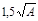
При высоте емкости, меньшей или равной , она рассматривается как бункер.
2. В силосных корпусах с несколькими подсилосными этажами допускается располагать силосы на части корпуса.
При этом силосы должны быть, как правило, соединены в блоки одинаковой высоты, расположенные по всей ширине корпуса.
3. Железобетонные силосные корпуса следует проектировать, как правило, с рядовым расположением силосов в плане (черт. 2). При надлежащем обосновании допускаются другие схемы расположения силосов.
Черт. 1. Разрезы силосов
а - с плоским днищем и забуткой; б - с плоским днищем, стальной воронкой и забуткой; в - с железобетонной воронкой без забутки; в1 - со стальной воронкой и стенками от фундамента; h - высота стен силосов; h1 - верхняя зона стен силосов; h2 - вторая сверху зона стен силосов; h3 - нижняя зона стен силосов; hmt - средняя зона; d - внутренний диаметр силоса
3.24 (3.23). Железобетонные силосные корпуса длиной до 48 м должны проектироваться без деформационных швов. При всех типах грунтов основания, за исключением скальных, а также при применении фундаментов из свай-стоек, отношение длины силосного корпуса к его ширине и высоте силосов должно быть не более 2. При однорядном расположении силосов это отношение допускается увеличивать до 3.
Возможно увеличение длины корпуса и указанных отношений при соответствующем обосновании.
Черт. 2. Планы силосных корпусов
3.25 (3.24). В качестве эвакуационных выходов из надсилосных этажей силосных корпусов могут быть использованы транспортерные галереи, ведущие к другим зданиям и сооружениям, оборудованным лестничными клетками и наружными эвакуационными лестницами.
3.26 (3.25). В силосных корпусах, объединенных в одно сооружение или соединенных между собой и с рабочими зданиями элеваторов, а также с производственными зданиями по переработке зерновых продуктов галереями, лестничные клетки могут не устраиваться. При этом в рабочем здании элеваторов и в силосных корпусах следует предусматривать наружные эвакуационные открытые стальные лестницы, которые в силосных корпусах должны доходить до крыши надсилосного этажа.
Расстояние от наиболее удаленной части помещения надсилосного этажа до ближайшего выхода на наружную лестницу или лестничную клетку должно быть не более 75 м.
Примечание. В силосных корпусах, поэтажно связанных с производственными зданиями, допускается предусматривать эвакуационные выходы по наружным переходным балконам, ведущим к лестницам этих зданий, или по наружным лестницам, которые на высоте свыше 20 м должны быть, как правило, закрыты сплошным ограждением на высоту 1,8 м от ступеней.
3.27 (3.27). Сборные железобетонные стены силосов, а также монолитные отдельно стоящие силосы диаметром свыше 12 м, как правило, следует предусматривать из предварительно напряженных конструкций.
3.28 (3.29). Отделка поверхности внутренних стен силосов должна способствовать лучшему истечению сыпучего материала. Для зерна и других легкосыпучих материалов допускается гладкая железобетонная поверхность стен без дополнительной отделки или затертая цементным раствором, в стальных силосах - окрашенная натуральной олифой. Для муки, мучнистых и других трудносыпучих материалов для отделки всей поверхности стен или их нижней части, а также выпускных воронок следует применять составы, разрешенные Минздравом СССР, с фактурой, соответствующей требованиям к поверхности, подготовленной под высококачественную окраску по ГОСТ 22753-77.
Для покрытий могут применяться составы на основе эпоксидной смолы.
3.29 (3.30). Наружная окраска стен силосов должна быть светлых тонов. Материалы для окраски должны подбираться с учетом агрессивного воздействия наружной среды, для железобетонных силосов, кроме того, с применением гидрофобных добавок.
3.30 (3.31). Наружные стены силосов для хранения муки и отрубей в целях предотвращения конденсации влаги на внутренней поверхности следует изолировать от внешней среды, как правило, устройством коридоров с размещением силосов внутри здания.
Силосы для зерна, встроенные в здания мельниц, а также силосы для муки в Ш и IV климатических районах допускается проектировать с беспустотной теплоизоляцией наружных стен.
3.31 (3.33). Силосные корпуса, отдельно стоящие силосы, надсилосные галереи, надстройки (выше уровня надсилосного перекрытия) для размещения в них норий и автоматических весов, транспортерные галереи (для зданий и сооружений II степени огнестойкости), допускается проектировать, в соответствии с требованиями ТП 101 81*, из стальных конструкций с пределом огнестойкости не менее 0,25 ч и нулевым пределом распространения огня.
Примечание. В стальных колоннах и перекрытиях надстроек, кроме двух верхних этажей, а также в несущих конструкциях подсилосных этажей (колоннах и балках под стены силосов) должна быть предусмотрена огнезащита, обеспечивающая предел огнестойкости этих конструкций не менее 0,75 ч.
3.32 (3.35). При проектировании силосов следует предусматривать устройства по снижению горизонтального давления зерновых продуктов при их выпуске (например, в круглых силосах с помощью установки разгрузочных центральных перфорированных труб или путем выпуска зерновых продуктов из силосов через отверстия в стенах межсилосных емкостей - звездочек), а также объединять (с учетом технологии хранения) квадратные силосы в группы для упрощения загрузки и выгрузки (как правило, через внутренний силос) путем устройства отверстий в стенах смежных силосов (черт. 3 (2)). При объединении силосов использование их внутреннего объема должно быть максимальным.
Расстояние в свету между указанными отверстиями по высоте должно быть не более 0,8 наименьшего поперечного размера силоса, а суммарная площадь отверстий, приведенная к этому расстоянию, - не менее четырехкратной площади сечения выпускной самотечной трубы подсилосного этажа.
При обосновании в технологической части проекта допускается проектировать самостоятельный выпуск продукта из каждого силоса и звездочки, а также выпуск продуктов из звездочки через силос.
При проектировании подвесок для электротермометров, размещаемых внутри объединенных перепускными отверстиями силосов, а также при нескольких подвесках в силосе следует, как правило, предусматривать закрепление нижнего конца подвески от горизонтального смещения.
3.33. Надсилосное перекрытие для повышения взрывобезопасности допускается проектировать в виде плит (над каждым силосом или группой объединенных силосов), отделенных от смежных участков перекрытий.
Все плиты надсилосных перекрытий должны плотно примыкать к стенам силосов.
3.34 (3.36). Проекты силосов и силосных корпусов должны содержать указания по режиму первичной и эксплуатационной загрузки и разгрузки силосов, по наблюдению за осадками этих сооружений, а также предусматривать установку осадочных марок и реперов.
Общие требования по первичной загрузке и наблюдению за осадками силосных корпусов даны в прил. 2*.
____________
* Подробные рекомендации даны в «Указаниях по первичной и эксплуатационной загрузке и наблюдению за осадками элеваторных сооружений», утвержденных Главпромзернопроектом 14 ноября 1984 г. и введенных в действие с 1 апреля 1985 г.
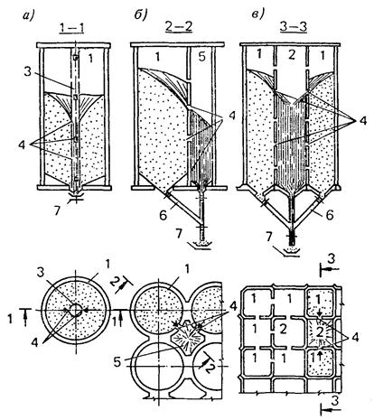
Черт. 3 (2). Выпуск сыпучего материала из силоса
а - через разгрузочную трубу; б - через звездочку; в - через внутренний силос; 1 - силос пассивный; 2 - силос активный; 3 - разгрузочная труба; 4 - отверстия в стенах; 5 - звездочка; 6 - самотечная труба; 7 - конвейер
3.35. Сборные железобетонные элементы стен силосов следует проектировать из бетона класса по прочности на сжатие не ниже В22,5.
3.36. В качестве горизонтальной ненапрягаемой арматуры сборных элементов стен следует преимущественно применять горячекатаную сталь периодического профиля класса А-III и обыкновенную арматурную проволоку диаметром 3-5 мм класса Вр-1. Допускается также применять горячекатаную арматурную сталь классов А-II и A-I (при конструктивном армировании).
Для горизонтальной напрягаемой арматуры сборных элементов стен силосов следует применять:
высокопрочную арматурную проволоку классов Вр-11 и B-II и арматурные канаты класса К-7;
горячекатаную сталь класса A-IV и выше.
При агрессивном и других воздействиях среды следует учитывать требования СНиП 2.03.11-85 и п. 3.49.
3.37. Сборные стены силосов следует проектировать преимущественно из элементов заводского изготовления. При соответствующем обосновании допускается изготовление элементов на полигонах и стройплощадке.
3.38. Преднапряженные сборные стены силосов рекомендуется проектировать с симметричной двойной напряженной горизонтальной арматурой. Допускается применение одиночной арматуры, расположенной в пределах ядра сечения элемента или снаружи стены (с надежной защитой ее от коррозии).
3.39. Сборные стены силосов диаметром 3 и шириной 3 м (размером 3´3 и 3´6 м) следует проектировать из замкнутых элементов заводского изготовления, при больших размерах силосов - стены из отдельных криволинейных или плоских элементов (при горизонтальной или вертикальной разрезке). При горизонтальной разрезке стен отдельные элементы перед монтажом рекомендуется, как правило, укрупнять в замкнутые объемные блоки, высота элементов должна быть кратной 600 мм (с учетом толщины горизонтальных швов).
3.40. При проектировании сборных стен следует учитывать допускаемые отклонения от проектных размеров при изготовлении, укрупнительной сборке и монтаже элементов стен, приведенные в прил. 3.
Между сборными стенами смежных силосов рекомендуется предусматривать вертикальный шов шириной 30 мм при силосах диаметром 3 м, не менее 40 мм - при силосах диаметром 6 м и более. В квадратных силосах шов в стыках углов должен быть не менее 30 мм (черт. 4).
Черт. 4. Стены силосного корпуса с квадратными силосами
3.41 (3.26). В проектах должна предусматриваться защита стыков сборных элементов стен силосов от атмосферных осадков (конструкцией самого стыка или с помощью герметизирующих защитных покрытий).
3.42 (3.32). Толщину стен сборных железобетонных силосов при сплошных гладких стенах следует предусматривать не менее 80 мм, при стенах с наружными ребрами (шириной не менее 60 мм) - не менее 40 мм, при стенах, служащих ограждением лестничных клеток, - не менее 100 мм.
Толщину гладких стен, см, рекомендуется принимать не
менее определяемой по формуле 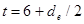
При проектировании стен с конструктивной защитой стыков от водопроницаемости (с устройством стыков «в четверть») толщина стен в месте стыков должна быть не менее 160 мм.
3.43. Все кольцевые или коробчатые элементы сборных стен силосов и силосных корпусов должны быть надежно связаны между собой по вертикали. Связь между сборными элементами осуществляется сцеплением раствора в горизонтальных швах (толщиной 20-30 мм), арматурой, устанавливаемой в стыках элементов, путем сварки закладных деталей или установки болтов.
Соединение с закладными деталями следует применять при специальном обосновании (возникновении растягивающих и больших сдвигающих усилий, например, при сейсмических воздействиях, и др.).
3.44. При горизонтальной разрезке сборных стен круглых силосов в целях увеличения надежности вертикальных стыков криволинейных элементов рекомендуется предусматривать перевязку вертикальных швов (черт. 5) - см. п. 5.18.
Черт. 5. Стены силосного корпуса с круглыми силосами
3.45 (3.28). При проектировании сборных железобетонных квадратных силосов должны, как правило, применяться объемные блоки. При этом следует стремиться к объединению и укрупнению силосов (с учетом технологии хранения сыпучего материала), например, путем монтажа стен силосов с пропуском отдельных элементов и созданием укрупненных силосов с решетчатыми внутренними стенами (черт. 6).
3.46. Связь между сборными элементами в вертикальных стыках следует предусматривать с помощью болтовых сопряжении (см. черт. 4), сваркой закладных деталей (см. черт. 5) и обжатием напрягаемой арматурой.
Допускается также при соответствующем обосновании замена болтовых и сварных сопряжении арматурой, уложенной в горизонтальных швах в местах стыков элементов.
Черт. 6. Силосный корпус из объемных блоков с экономичной планировкой
3.47. Стены монолитных железобетонных силосов, возводимых в скользящей и переставной опалубках, следует проектировать из бетона класса не ниже В15. При этом на чертежах железобетонных конструкций стен должны быть указаны следующие требования: бетон следует приготовлять только на портландцементе марки не ниже 400; качество песка, щебня или гравия должно удовлетворять требованиям действующих ГОСТов; применение непромытого песка и щебня или гравия для приготовления бетона запрещается.
3.48. Для стен силосов, возводимых в переставной опалубке, следует применять товарный бетон.
3.49. При подборе марок и класса арматуры для армирования силосов в зависимости от характера действующих нагрузок и от расчетной температуры надлежит учитывать требования СНиП 2.03.01-84 (пп. 2.17-2.24, графа «статической» обязательного приложения 1).
3.50. Для горизонтальной ненапрягаемой арматуры стен силосов следует применять горячекатаную сталь периодического профиля класса A-III и A-II, рекомендуется применение стали марки 10ГТ, допускается применение гладкой стали класса A-I для верхних участков стен и конструктивного армирования.
При выборе напрягаемой арматуры следует руководствоваться требованиями п. 3.36.
3.51. При проектировании силосов из монолитного железобетона, возводимых в скользящей опалубке, толщину стен следует принимать не менее 150 мм, ширину балок - не менее 200 мм, армирование предусматривать двухстороннее, нахлестку горизонтальной арматуры в стыках без сварки с длиной перепуска - не менее 60 диаметров.
При бетоне класса по прочности на сжатие В25 и выше допускается длину перепуска принимать менее 60 диаметров стержней в соответствии со СНиП 2.03.01-84.
Толщину стен силосов следует определять расчетом.
Ориентировочно толщину стен круглых монолитных силосов, см., рекомендуется
принимать не менее определяемой по формуле 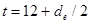
3.52. Стены без предварительного напряжения следует конструировать, как правило, с двойной симметричной горизонтальной арматурой (черт. 7). При соответствующем обосновании допускается несимметричное армирование с более мощной арматурой у наружной поверхности.
Стены отдельно стоящих силосов с предварительно напряженной арматурой могут армироваться одиночной арматурой, навиваемой или натягиваемой на наружные поверхности стен или укладываемой по оси стен в специальные каналы с последующим натяжением на упоры. Для возведения стен следует предусматривать конструктивную двойную арматуру. Напрягаемая арматура должна быть надежно защищена от коррозии.
3.53. Защитный слой бетона до рабочей арматуры следует принимать не менее 25 мм в стенах круглых силосов и не менее 20 мм в квадратных.
3.54. При проектировании стен силосов и рабочих зданий, возводимых в скользящей опалубке, следует принимать: диаметр вертикальной арматуры - не менее 10 мм, а в стенах силосов диаметром 12 м и более - не менее 12 мм; шаг вертикальной арматуры - не более 500 мм (для наружных стен силосов не более 350 мм); шаг горизонтальной арматуры - 70-200 мм; расположение арматуры - в два ряда (у обеих сторон стен). При возведении стен круглых силосов стыки кольцевой арматуры рекомендуется выполнять на сварке с соблюдением требований СН 393-78.
Допускается увеличение расстояния между вертикальными стержнями для устройства прохода, необходимого по условиям производства работ. Проход шириной не более 1 м должен располагаться в месте сопряжения стен круглых силосов или в середине прямоугольных силосов.
В стенах от плиты днища до верха забутки принимается та же горизонтальная арматура, что и в уровне верха забутки.
Черт. 7. Детали армирования монолитных железобетонных стен круглых силосов
а - армирование стен; б - каркас (лесенка) для фиксации горизонтальной арматуры; в - армирование стен подсилосного этажа; г - дополнительная арматура в местах сопряжения стен смежных силосов; 1 - поперечный стержень до укладки горизонтальной арматуры; 2 - поперечный стержень с загнутыми концами после укладки горизонтальной арматуры; 3 - хомуты
3.55. Длину стержней кольцевой арматуры следует принимать исходя из 3 стыков на окружность при диаметре силосов 6 м и 4-5 стыков - при диаметре 12 м. Стены силосов диаметром более 12 м рекомендуется армировать стержнями товарной длины (12 м).
Стыки стержней кольцевой арматуры, выполняемые внахлестку, располагаются вразбежку, причем в одном вертикальном сечении стены допускается стыковать не более 25 % всех стержней.
В местах стыков внахлестку стержни связываются вязальной проволокой двойной вязкой по концам и в середине перепуска. Кроме того, стержни наружной кольцевой арматуры связываются с внутренней поперечными стяжками из проволоки диаметром 6 мм.
3.56. В сблокированных силосах шаг стержней горизонтальной арматуры наружных и внутренних силосов рекомендуется принимать одинаковым.
В местах сопряжений стен круглых силосов должны быть уложены дополнительные сварные сетки или горизонтальные стержни (см. черт. 7, г). Шаг дополнительной арматуры следует принимать таким же, как основной арматуры. Дополнительные стержни следует заводить в стены до внутреннего ряда арматуры.
3.57. Для обеспечения проектного положения горизонтальной арматуры и связи между наружной и внутренней арматурой вертикальные стержни через один (см. черт. 7, б) выполняются в виде сварных арматурных каркасов (лесенок). Расстояние между поперечными стержнями каркасов равно шагу стержней горизонтальной арматуры. Концы поперечных стержней каркасов после укладки горизонтальной арматуры загибаются.
Горизонтальная и вертикальная арматура между каркасами должна быть связана в местах пересечений вязальной проволокой.
3.58. Вертикальную конструктивную арматуру рекомендуется выполнять из гладкой стали класса A-I. Вертикальную расчетную арматуру рекомендуется выполнять из стали периодического профиля класса А-Ш. Вертикальная арматура стен устанавливается в два ряда.
3.59. При опирании монолитных стен силосов на днище из него в стены устраиваются выпуски.
Площадь арматуры выпусков следует устанавливать расчетом (на усилие, полученное из расчета днища) и принимать не менее площади вертикальной арматуры стен силосов.
Стены наружных силосов диаметром 6 м и более рекомендуется армировать вертикальной арматурой не менее чем на 1/6 их высоты выше днищ (не менее 0,25 % площади сечения стены силоса).
3.60. Вертикальную арматуру следует стыковать вразбежку с перепуском соединяемых круглых стержней на 50 диаметров и стержней периодического профиля на 35. Крюки на концах круглых стержней не предусматриваются.
3.61. Отверстия в стенах силосов, воспринимающих горизонтальные давления сыпучих материалов, обрамляются двойной арматурой диаметром не менее 10 мм. Кроме того, над и под отверстиями устанавливается двойная горизонтальная арматура общим сечением, равным сечению перерезанной отверстием арматуры. Добавочная арматура заводится за края отверстий не менее чем на 60 диаметров плюс 200 мм и не менее чем на 1,5h (h - высота отверстия).
3.62. Стены монолитных силосов, опирающиеся на фундаментную плиту, следует проектировать в пределах подсилосного этажа с двойной вертикальной арматурой, заводя ее выше днищ силосов на 1000 мм. Эта арматура и связывающие ее поперечные стержни (см. черт. 7, а) должны отвечать требованиям СНиП 2.03.01-84, предъявляемым к армированию колонн.
Проемы в этих стенах следует обрамлять двойной вертикальной и горизонтальной арматурой диаметром 16 мм, заходящей за контур проемов не менее чем на 50 диаметров. Участки между проемами армируются по черт. 7, в.
3.63. В стенах силосов и рабочих зданий, возводимых в скользящей опалубке, для опирания перекрытий при бетонировании следует предусматривать устройство штраб, как правило, глубиной не менее 60 мм с выпусками арматуры. Заделываемые в штрабы плиты перекрытий должны быть связаны с выпусками арматуры штраб стержнями, расположенными через 300- 500 мм (черт. 8).
Черт. 8. Связь плит перекрытий со стенами, возводимыми в скользящей опалубке
а - разрез; б - план; в - вариант опирания плит
3.64. Изменение сечений железобетонных колонн, возводимых в скользящей опалубке, допускается не более двух раз по высоте.
Балки, бетонируемые в скользящей опалубке, следует проектировать без отогнутых стержней.
3.65. При проектировании стен силосов из стали следует выполнять требования СНиП II-23-81 и предусматривать индустриальные методы их изготовления и монтажа, в том числе путем применения: листов и лент больших размеров, способа рулонирования, изготовления заготовок в виде «скорлуп», способа навивки, а также других передовых методов; автоматической сварки с минимальным количеством сварных швов, выполняемых при монтаже.
Изготовление и монтаж силосов методом рулонирования рекомендуется выполнять при толщине стен не более 14 мм.
3.66. Для стен силосов рекомендуется применять стали повышенной и высокой прочности, если толщина их не определяется условием устойчивости.
При подборе марок сталей стальных стен силосов и воронок в зависимости от наружной температуры надлежит учитывать прил. 1 (группу 2) СНиП II-23-81.
Для стальных силосов, возводимых методом навивки, следует применять сталь повышенной пластичности.
Рекомендуется применение для силосов оцинкованной стали. Для других видов стали необходимо предусматривать защиту от коррозии.
3.67. Все стыковые швы листовых конструкций должны выполняться двухсторонней сваркой или односторонней сваркой с подваркой корня или на подкладках.
В проектах листовых стальных силосов следует указывать на необходимость контроля качества сварных швов и полистового контроля стали.
3.68. Для уменьшения местных напряжений сопряжение стены силоса с конической воронкой рекомендуется выполнять посредством переходной поверхности (части сферы или части тора) или с устройством в местах сопряжения горизонтального ребра жесткости. Сопряжение стены силоса с железобетонным днищем рекомендуется выполнять шарнирно-неподвижным.
Места приложения сосредоточенных нагрузок на верхний контур стены силоса, а также места опирания силоса на отдельно стоящие опоры укрепляются вертикальными ребрами жесткости от потери местной устойчивости (черт.9).
Высоту опорного ребра жесткости рекомендуется принимать не менее 0,15 диаметра силоса.
Кольцевые ребра жесткости должны быть замкнуты.
Черт. 9. Стальной силос
1 - стена силоса; 2 - переходная часть (тор или часть сферы); 3 - коническая воронка; 4 - опорное ребро жесткости; 5 - ребро жесткости
3.69. Днище силосов следует проектировать в виде стальных или сборных железобетонных воронок (см. черт. 1, в), опирающихся на колонны подсилосного этажа (непосредственно или через кольцевые балки) или в виде плоских железобетонных плит с наклонными набетонками (забутками) (см. черт. 1, а) и стальными воронками в сочетании с наклонными забутками (см. черт. 1, б).
Если стены силосов возводятся в скользящей опалубке от уровня верха фундаментной плиты, то днище может опираться на колонны или на утолщение (пилястры) стен. Днище силосов диаметром до 6 м допускается проектировать с балками, опирающимися на стены подсилосного этажа. Допускается устройство днищ на грунте с подсилосными тоннелями.
3.70. При опирании стальных стен силосов на колонны днище следует проектировать с учетом требований п. 3.68.
3.71. Выпускные отверстия силосов должны, как правило, располагаться в центре. При необходимости устройства нескольких выпускных отверстий их следует располагать симметрично относительно осей силоса.
3.72. Колонны подсилосного этажа следует располагать по прямоугольной сетке. Допускается также кольцевая расстановка колонн (черт. 10).
Если в подсилосном этаже проходит железнодорожный путь, то расстояние от его оси до граней колонн должно удовлетворять габариту приближения строений по ГОСТ 9238-83.
Черт. 10. Схемы расположения колонн подсилосного этажа
3.73. Колонны подсилосного этажа следует проектировать, как правило, сборными железобетонными, устанавливаемыми в стаканы монолитных или сборных подколенников.
В проекте класс бетона для сборных колонн принимается не ниже В22,5.
3.74. Для рабочей арматуры колонн рекомендуется применять горячекатаную сталь класса A-III.
3.75. Покрытия отдельно стоящих круглых силосов при отсутствии надсилосного помещения, а также силосов диаметром более 12 м следует проектировать в виде оболочек.
Для надсилосных помещений следует применять несгораемые облегченные стеновые ограждения. Допускается также применение сборных железобетонных конструкций. При этом следует учитывать требования п. 3.3.
3.76. Надсилосные перекрытия рекомендуется проектировать из сборных железобетонных плит, опирающихся на стены силосов. Допускается опирать плиты на железобетонные или стальные балки. В отдельных случаях допускается устройство монолитной надсилосной плиты с использованием рабочего пола скользящей опалубки.
Для стен силосов размером в плане 3´3 м и диаметром 6 м рекомендуется применять плиты размером 3´6 м.
Надсилосное перекрытие стальных силосов при наличии надсилосного неотапливаемого помещения рекомендуется выполнять из укрепленной ребрами рифленой стали по стальным балкам.
3.77. Фундаменты отдельно стоящих силосов и силосных корпусов следует проектировать, как правило, в виде монолитных или сборно-монолитных безбалочных плит из бетона класса не ниже В20. На скальных, крупнообломочных и малосжимаемых непросадочных грунтах для силосных корпусов следует применять кольцевые, ленточные фундаменты или отдельные башмаки под каждую колонну.
3.78. Глубину заложения фундаментов на естественном основании следует принимать в соответствии со СНиП 2.02.01-83.
(5.36). Глубину заложения фундаментов в виде сплошных плит от отметки чистого пола подсилосного этажа следует назначать равной не менее половины расчетной глубины промерзания.
3.79. В каркасных зданиях мельнично-крупяных и комбикормовых предприятий следует, как правило, проектировать отдельные фундаменты под каждую колонну. Допускается проектировать фундаменты в виде перекрестных лент, при соответствующем обосновании - в виде сплошных плит.
3.80. Свайные фундаменты рекомендуются в случаях, когда: расчетные деформации естественного основания превышают допустимые; без свайного фундамента не обеспечивается устойчивость основания; в основании имеются просадочные слои грунта, которые могут быть прорезаны сваями с опиранием их на непросадочные грунты; экономически оправдано (например, при увеличении высоты силосов).
3.81. Подготовку под фундаменты производственных зданий и силосных корпусов надлежит предусматривать из бетона класса В5 толщиной 100 мм; при глинистых грунтах, кроме того, - по основанию, уплотненному втрамбованным в грунт щебнем или гравием.
Под сборные и сборно-монолитные фундаменты рекомендуется подготовка из уплотненного крупнозернистого песка толщиной 100 мм (по слою щебня или гравия, втрамбованному в грунт при глинистых грунтах).
3.82. Для снижения горизонтального давления сыпучих материалов и для упрощения загрузки и выгрузки следует выполнять требования п. 3.32.
3.83. В силосах необходимо предусматривать разгрузочные устройства, обеспечивающие непрерывный выпуск из силосов сыпучих материалов с учетом длительности их хранения, а также исключающие образование сводов или способствующие обрушению сводов после их образования.
3.84. При проектировании технологического оборудования следует учитывать допуски и отклонения от вертикали в процессе строительства, осадки и крены в процессе эксплуатации, а также смещения, вызываемые осадками и кренами в продольном и поперечном направлениях, указанные в п. 5.60.
Учитывая зависимость осадки силосов от времени, при проектировании технологического оборудования следует предусматривать возможность рихтовки оборудования при эксплуатации.
3.85. В технологическом задании на проектирование строительной части силосов для расчета прочности и жесткости конструкции, а также для определения необходимости расчета стен на выносливость и многократное повторение нагрузок, на температурные воздействия, для учета абразивности и агрессивности сыпучего материала следует указывать:
а) удельный вес (плотность), угол внутреннего трения и коэффициент трения сыпучего материала о материал стены; вместимость силосов;
б) характеристику режима эксплуатации силосов (число, частоту и продолжительность циклов загрузки и разгрузки);
в) температуру сыпучего материала во время его загрузки и выгрузки из силоса, а также коэффициент теплопроводности и теплоемкость;
г) модуль сжатия и коэффициент Пуассона сыпучего материала;
д) степень абразивности и агрессивности сыпучего материала.
3.86. В технологическом задании на проектирование строительной части производственных и других зданий и сооружений следует указывать:
а) статические нагрузки от оборудования с размерами опорных площадей и распределением нагрузок по ним;
б) расположение и размеры крепежных болтов;
в) динамические нагрузки от оборудования, включая их частоту и амплитуды, положение и значение неуравновешенных масс.
3.87 (3.37). Здания зерноскладов следует проектировать одноэтажными в виде прямоугольника в плане, без перепадов высот, с унифицированными объемно-планировочными параметрами, м: пролеты - 6; 12; шаг опор - 6 и высота помещений у стен - 3,6.
Примечания: 1. В зерноскладах из местных материалов с деревянным внутренним каркасом допускается принимать пролеты между опорами менее 6 м, а также изменять высоту стен (увеличивать или уменьшать) при условии выполнения требований эксплуатации и соответствующем обосновании,
2. Допускается проектировать однопролетные сводчатые зерносклады с пролетом 18 и 24 м.
3. Расстояние от верха насыпи зерна до низа несущих конструкций покрытия следует принимать не менее 0,5 м.
3.88 (3.38). Зерносклады допускается проектировать с наклонными полами (с уклоном не менее 1:1,4), если гидрогеологические условия площадки строительства допускают устройство транспортерных тоннелей и полов здания без устройства гидроизоляции и если при этом имеются соответствующие условия для технологического процесса.
3.89 (3.39). Площадь зданий зерноскладов между противопожарными стенами следует принимать в соответствии с требованиями СНиП 2.09.02-85, но не более 3000 м2 .
Здания зерноскладов, строящихся в совхозах и колхозах, должны иметь площадь не более 1200 м2.
3.90 (3.40). Ворота в зерноскладах следует проектировать распашными. В зерноскладах с наклонными полами с полной выгрузкой зерна самотеком, а также в зерноскладах, оборудованных аэрожелобами, следует предусматривать двое ворот, располагаемых в разных концах здания. При горизонтальных полах число ворот определяется в технологической части проекта, но предусматривается не менее двух.
В зерноскладах, предназначенных для хранения семян, ворота должны быть двойными: внутренние сетчатые из металлической сетки с ячейками размером не более 12´12 мм и наружные (сплошные).
Примечание. Вместо внутренних ворот допускается предусматривать деревянные съемные щиты, обшитые металлической сеткой. В зерноскладах, оборудованных системой технологической вентиляции, устройство внутренних ворог или щитов не требуется.
3.91 (3.41). Зерносклады следует проектировать, как правило, без световых проемов.
3.92 (3.42). Зерносклады с наклонными полами следует проектировать таким образом, чтобы исключить возможность выхода рабочих на насыпь зерна при его выгрузке из склада (устраивать боковое ограждение галереи на всю ее высоту до крыши, блокировку электродвигателей конвейеров, расположенных в тоннелях с механизмами открывания дверей и др.).
3.93 (3.43). В зерноскладах с горизонтальными полами над проемами в перекрытии тоннелей для выпуска зерна следует предусматривать установку стационарных решетчатых колонок круглого сечения.
Вертикальные оси колонок должны проходить через центры проемов, верх колонок должен быть выше максимального уровня насыпи зерна на 0,5 м. Расстояния между горизонтальными кольцами решетки следует принимать равными 165 мм.
3.94 (3.44). При проектировании зданий зерноскладов следует применять сборные железобетонные и деревянные конструкции и местные строительные материалы.
Здания бункерных зерноскладов для хранения семян допускается проектировать из металлических конструкций. При этом наружные стены зданий должны быть окрашены в белый цвет или иметь поверхность с высокой отражательной способностью.
3.95 (3.45). Покрытие зерноскладов следует, как правило, проектировать с уклоном 1:2,1, соответствующим углу естественного откоса зерна, из волнистых асбестоцементных листов. Для повышения водонепроницаемости допускается при соответствующем обосновании предусматривать укладку асбестоцементных листов по сплошному дощатому настилу с прокладкой слоя рулонного кровельного материала.
Рулонный кровельный материал следует прокладывать насухо, но с проклейкой стыков мастикой.
Примечание. Для III и IV климатических районов в соответствии со СНиП 2.01.01-82 покрытие зерноскладов допускается проектировать из асбестоцементных волнистых листов унифицированного или усиленного профиля с уплотнением продольных и поперечных соединений без устройства настила.
3.96 (3.46). Стены, покрытия и полы зданий зерноскладов должны быть беспустотными. Внутренние поверхности стен зерноскладов должны быть гладкими (без выступов, впадин, горизонтальных ребер, поясков и щелей), доступными для их очистки и дезинсекции. Материалы строительных конструкций зданий, а также вещества и составы, применяемые для отделки и защиты конструкций от гниения и возгорания, должны быть безвредными для хранимого зерна или семян и входить в список материалов, разрешенных Минздравом СССР.
3.97 (3.47). Для внутренних транспортерных галерей зерноскладов III степени огнестойкости и ниже допускается применять деревянные конструкции, защищенные от возгорания.
3.98 (3.48). Вынос кровли (за наружную поверхность стен) для зерноскладов должен быть не менее 0,7 м.
3.99 (3.49). Полы в складских зданиях следует проектировать, как правило, асфальтобетонными с толщиной покрытия 25 мм в зерноскладах и 50 мм в складах тарных грузов. В покрытиях полов не допускается применение дегтей и дегтевых мастик.
3.100. Противокапиллярную гидроизоляцию несущих стен зданий зерноскладов следует предусматривать из цементного раствора состава 1:2 толщиной 20 мм.
3.101 (3.50). Проекты зерноскладов должны содержать указания о нанесении на стены складов ярких линий и надписей, ограничивающих предельную высоту зерновой насыпи.
3.102 (3.51). Склады готовой продукции в виде тарных грузов (мешков и пакетов с мукой, комбикормами) следует проектировать одноэтажными или многоэтажными (не более шести этажей). Склады сырья комбикормовых предприятий, как правило, следует проектировать одноэтажными.
Для одноэтажных складов принимают сетку колонн 9´6; 12´6 и 18´6 м, высоту стен 6 и 7,2 м. Для многоэтажных складов следует принимать сетку колонн 6´6 м и высоту этажей 4,8 м, для верхнего этажа - также сетку колонн 12´6 и 18´6 м.
3.103 (3.52). В здании склада тарных грузов на первом этаже у торца допускается располагать зарядную станцию для аккумуляторных погрузчиков. Число одновременно заряжаемых батарей при этом должно быть не более пяти.
В зарядной станции следует предусмотреть следующие помещения: для зарядных устройств, зарядной, распределительных щитов, дистилляторной, аккумуляторной, ремонтных мастерских, вентиляционных агрегатов, комнаты обслуживающего персонала и начальника цеха, санитарный узел и кладовую для хранения химреактивов.
Ограждающие конструкции зарядного помещения должны иметь предел огнестойкости не менее 0,75 ч и нулевой предел распространения огня.
Зарядная станция должна быть отделена от остальных складских помещений противопожарными стенами и перекрытиями и иметь обособленный выход.
3.104 (3.53). Внутри многоэтажных зданий складов тарных грузов следует предусматривать (при наличии технологических требований) грузовой лифт с устройством тамбур-шлюзов перед выездами.
Размеры тамбур-шлюза должны соответствовать габаритам перевозимого груза.
3.105 (3.54). Оконные проемы складов готовой продукции в виде тарных грузов с производством категории В следует, как правило, заполнять стеклоблоками, устраивая в части проемов открывающиеся оконные фрамуги площадью не менее 1,2 м2 с механизированным открыванием для дымоудаления. Суммарная площадь проемов принимается не менее 0,3 % площади пола склада.
3.106 (3.55). Наружные стены складов тарных грузов следует предусматривать, как правило, сборными из железобетонных панелей.
3.107 (3.56). Перекрытия складов тарных грузов следует проектировать, как правило, сборно-монолитными, с устройством монолитного железобетонного слоя поверх сборных железобетонных плит. Участки перекрытий, на которые исключено воздействие нагрузок от колес погрузчиков, допускается проектировать сборными железобетонными.
3.108 (3.57). Приемные сооружения для разгрузки сыпучих материалов с железнодорожного и автомобильного транспорта при производствах категории Б по взрывопожарной опасности допускается проектировать с бункерами, размещаемыми в заглубленных помещениях с открытыми проемами площадью не менее 0,03 м2 на 1 м3 объема помещения.
Как правило, не допускается соединять тоннелями производственные здания с сооружениями для разгрузки зерна и сырья.
3.109 (3.58). Размеры транспортерных галерей и тоннелей и выходы из них должны приниматься в соответствии с требованиями СНиП 2.09.03-85 и технологией производства.
Из транспортерных галерей и тоннелей надлежит предусматривать не менее двух выходов.
Выходы из транспортерных галерей с конструкциями из сгораемых материалов (для зерноскладов) должны быть предусмотрены не реже чем через 100 м. Для транспортерных галерей из несгораемых материалов расстояние между выходами допускается увеличивать до 200 м.
При длине тоннеля свыше 120 м допускается предусматривать промежуточные выходы не реже чем через 100 м, ведущие в каналы высотой 1,5 и шириной 0,7 м, заканчивающиеся вне здания зерносклада или силоса колодцем с люком, оборудованным металлической лестницей или скобами для выхода.
Расстояния от тупикового конца тоннеля, галереи до ближайшего эвакуационного выхода должно быть не более 25 м.
Лестницы для галерей допускается выполнять открытыми стальными с уклоном не более 1,7:1 и шириной не менее 0,7 м. При отсутствии работающих постоянно допускается лестницу высотой не более 15 м с одного конца галереи предусматривать с уклоном 6:1.
Тоннели не должны иметь непосредственной связи с другими зданиями и сооружениями. Каждый тоннель должен быть оборудован участком, выступающим над землей, с открытыми проемами или с легкосбрасываемым ограждением площадью не менее 0,06 м2 на 1 м3 объема тоннеля.
Допускается уменьшение указанной площади проемов или легкосбрасываемых ограждений при специальном обосновании.
3.110 (3.59). В надсилосных и подсилосных галереях, связывающих рабочие здания элеваторов с силосными корпусами, следует, как правило, предусматривать легкие ограждающие конструкции (из профилированных стальных оцинкованных или асбестоцементных листов). Допускается применение других конструкций, но в сочетании с участками из легкосбрасываемых конструкций.
3.111 (3.60) . При проектировании галерей и тоннелей, соединяющих рабочие здания с силосными корпусами или силосные корпуса между собой, а также при определении размеров осадочных швов следует учитывать относительное смещение смежных зданий и сооружений (по вертикали и в двух направлениях по горизонтали) в результате неравномерных осадок, определяемых расчетом.
3.112 (3.61). Вспомогательные помещения для обслуживающего персонала следует, как правило, размещать в отдельно стоящих зданиях в соответствии с указаниями СНиП II-92-76.
(3.61.1). Допускается располагать вспомогательные помещения в пристройках в торце производственных зданий со стороны размещения производств категорий Г, Д или В (за исключением зерноочистительных отделений мельниц).
(3.61.2). В производственных зданиях допускается размещать диспетчерскую, помещение для обогревания рабочих, вальцерезную мастерскую, а также подсобные помещения без постоянного пребывания в них людей.
(3.61.3). Помещения (кабины) для обогревания рабочих, размещаемые на этажах рабочего здания элеватора, следует проектировать размерами не менее 1,5´1,5 м и не более 4 м2 из несгораемых конструкций.
(3.61.4). Не допускается размещать уборные (кроме первого этажа) в производственных корпусах мельниц, комбикормовых заводов и складов муки.
3.113 (3.62). Подземные помещения сооружений для разгрузки зерна и мучнистого сырья по степени допустимого увлажнения ограждающих конструкций относятся к I категории в соответствии с СН 301-65*.
4.1 (4.1). Конструкции зданий и сооружений для хранения и переработки зерна следует рассчитывать на нагрузки и воздействия в соответствии с требованиями СНиП 2.01.07-85. При расчете силосов и бункеров должны быть также учтены следующие нагрузки и воздействия:
временные длительные - от веса сыпучих материалов; равномерного и длительной части горизонтального неравномерно распределенного по высоте и периметру давления сыпучих материалов на стены силосов и звездочек; трения сыпучих материалов о стены силосов; давления сыпучих материалов на днище силосов; подвесок электротермометров; веса технологического оборудования с учетом динамических воздействий; усадки и ползучести бетона; крена при неравномерных осадках фундаментов; неравномерно распределенного реактивного давления грунта на подошву фундамента и неравномерной загрузки силосов; изгиба силосного корпуса при сблокированных силосах;
кратковременные - возникающие при изменении температуры наружного воздуха; от кратковременной части горизонтального неравномерного давления сыпучих материалов; давления воздуха, нагнетаемого в силос при активной вентиляции, газации, гомогенизации и пневматической выгрузке сыпучего материала.
Примечания: 1. Для зданий и сооружений, где возможен аварийный взрыв пылевоздушной смеси, следует также учитывать временную особую нагрузку - от давления, развиваемого при взрыве.
2. Длительную и кратковременную части горизонтального неравномерного давления сыпучих материалов следует определять согласно п. 4.22.
4.2. Нагрузки от собственного веса конструкций, веса оборудования, снега, ветра, коэффициенты надежности по нагрузке для них и сочетания нагрузок следует учитывать в соответствии с требованиями СНиП 2.01.07-85.
(4.2). При расчете на прочность коэффициент надежности по нагрузке для давления сыпучих материалов на стены и днища силосов, бункеров и зерноскладов принимается равным 1,3, для ветровой нагрузки на рабочие здания - 13, для давлений воздуха и нагрузок, вызванных температурными воздействиями, - 1,1.
Примечание. Снеговую нагрузку на конусные покрытия одиночных силосов необходимо принимать с коэффициентом m = 0,4, с распространением этой нагрузки по всей площади покрытия или по ее половине.
Аэродинамический коэффициент с (лобовое сопротивление) для одиночных или расположенных с разрывами, большими 0,2 и высотой менее 2 диаметров круглых силосов со стенами без вертикальных ребер принимается равным 0,7; для тех же силосов, расположенных вплотную без разрывов, - 2 или по специальным исследованиям. При промежуточных значениях разрывов коэффициент с допускается определять по интерполяции.
4.3 (4.3). Расчет перекрытий производственных и складских зданий и сооружений, площадок и галерей следует производить с учетом нагрузок от оборудования и складируемых материалов в соответствии с технологической частью проекта, но не менее, чем нормативная нагрузка в 2000 Па (200 кгс/м2) с учетом коэффициента надежности по нагрузке (для предельных состояний первой группы), равного 1,2.
Примечания: 1. Для перекрытий производственных зданий мельнично-крупяных и комбикормовых предприятий при расчете колонн каркаса зданий и ригелей (за исключением участков перекрытий с тяжелым оборудованием) допускается принимать эквивалентную равномерно распределенную нормативную нагрузку - 5 кПа (500 кгс/м2).
Для перекрытий на участке расположения вальцовых станков в мельницах эту нагрузку допускается принимать в 7,5 кПа (750 кгс/м2), для перекрытий с установкой головок норий производительностью более 175 т/ч - 6 кПа (600 кгс/м2), для перекрытий с бункерами в комбикормовых заводах - 19 кПа (1900 кгс/м2) при высоте бункеров в один этаж. Коэффициент надежности по нагрузке при расчете на прочность принимается равным 1,2.
2. При расчете приемно-отпускных сооружений нагрузки от подвижного состава железных дорог допускается принимать по классу СК при К = 10.
3. Расчет конструкций (перекрытий, покрытий, наклонных днищ и воронок силосов, стен, перегородок), ограждающих помещения, в которых возможен аварийный взрыв пылевоздушной смеси, следует производить на особую нагрузку Pa, равномерно распределенную по площади ограждения и принимаемую в зависимости от условий срабатывания легкосбрасываемых конструкций.
4.4 (4.4). Удельный вес сыпучих материалов g, их угол внутреннего трения j и коэффициент трения сыпучих материалов о стены силоса f необходимо принимать в соответствии с прил. 4 (1).
Определение объемов сыпучих материалов в силосах приведено в прил. 5.
4.5 (4.5). При определении горизонтального давления сыпучих материалов на стены силосов во время заполнения и опорожнения емкостей, а также в процессе хранения следует учитывать равномерно распределенное по периметру давление, определяемое в соответствии с п. 4.6, совместно с местными повышенными давлениями - кольцевым, локальным и полосовым, величины которых следует определять согласно требованиям пп. 4.7-4.9, п. 4.12.
4.6 (4.6). Равномерно распределенное по периметру нормативное
горизонтальное давление сыпучих материалов 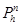
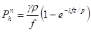
___________
* В квадратных скобках приведены формулы СНиП 2.10.05-85.
где r -
гидравлический радиус поперечного сечения силоса, определяемый по формуле 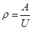
A, U - площадь и периметр поперечного сечения силоса;
l - коэффициент бокового давления сыпучего материала,
определяемый по формуле 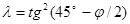
е - основание натурального логарифма.
Значения g, j и f даны в прил. 4 (1), а 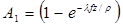
Примечание. Для силосов большого диаметра и малой высоты глубину z допускается принимать от уровня центра тяжести верхнего конуса засыпки (для круглых силосов - ниже вершины конуса на 2/3 его высоты).
4.7 (4.7). Кольцевое горизонтальное давление сыпучих материалов на стены круглых силосов принимается равномерно распределенным по всему периметру стен с высотой зоны кольцевой нагрузки, равной 1/4 диаметра силоса. Зона может занимать любое положение по высоте.
Нормативное значение кольцевого горизонтального давления р определяется по формуле
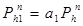
где a1 - коэффициент местного повышения давления, принимается согласно требованиям п. 4.11.
4.8 (4.8). Локальное горизонтальное давление на стены круглых
силосов принимается распределенным по двум площадкам, расположенным с двух
диаметрально противоположных сторон силоса. Размер площадок устанавливается
равным 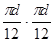
Нормативное значение локального горизонтального
давления 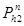
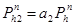
где a2 - коэффициент местного повышения давления, принимаемый согласно требованиям п. 4.11.
Кроме локального повышения давления следует учитывать возможность появления локального понижения давления, значение которого допускается принимать по формуле (3) с коэффициентом, равным 0,5.
4.9 (4.9). Если из силоса диаметром 12 м и более производится пристенный выпуск сыпучего материала с образованием воронки потока сыпучего материала у стены силоса, то следует учитывать понижение горизонтального давления сыпучего материала над выпускным отверстием на всю высоту силоса, при этом схема распределения горизонтального давления принимается по черт. 11, в (3).
При внецентренной загрузке или выгрузке силосов диаметром 12 м и более горизонтальное давление следует определять с учетом разного уровня сыпучего материала по периметру его верхнего конуса.
Черт. 11 (3). Пристенный выпуск зерна
а - разрез силоса; б - план; в - эпюра давления
4.10 (4.10). Горизонтальное давление сыпучих материалов на стены круглых железобетонных силосов и стальных силосов с жесткими ребрами, работающими на изгиб, принимается равным сумме равномерного давления, определяемого по формуле [1], и локального давления, определяемого по формуле [3].
Горизонтальное давление сыпучих материалов на стены стальных круглых листовых силосов, не усиленных ребрами, допускается принимать равномерно распределенным по периметру и равным сумме давлений, определяемых по формулам [1] и [2]. При этом разгрузка из силоса основной массы сыпучего материала должна производиться осесимметричным потоком через центральный выпуск.
4.11 (4.11). Численные значения коэффициентов a1 и a2 в формулах [2] и [3] должны приниматься согласно табл. 1.
Таблица 1
|
Отношение высоты силоса h к его диаметру d |
|||||||
|
10 |
5 |
2,5 |
1,67 |
1,25 |
0,83 |
0,625 |
|
|
a1 |
1,8 |
1.5 |
1,2 |
0,9 |
0,70 |
0,50 |
0,30 |
|
a2 |
1,25 |
1,00 |
0,50 |
0,25 |
0,12 |
0,06 |
0,03 |
Примечание. h - высота от верха силоса до верха воронки или забутки (см. черт. 1).
Для промежуточных отношений h/d значения коэффициентов a1 и a2 допускается определять по интерполяции.
4.12 (4.12). Полосовое горизонтальное давление на стены квадратных и прямоугольных силосов и на стены звездочек принимается равномерно распределенным по всему периметру стен в любом их месте по высоте.
Нормативное значение полосового давления 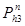
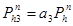
где a3 - коэффициент местного повышения давления сыпучего материала, равномерно распределенного по всему периметру квадратного силоса или звездочки.
Значение коэффициента a3 для квадратных силосов со стороной 3 - 4 м и для звездочек сблокированных силосов диаметром 6 – 12 м, высотой h ³ 15 м принимается равным 0,20, при высоте h < 15 м - равным 0,1.
Для квадратных силосов со стороной, большей 4 м, значение a3 принимается по опытным данным, но не менее 0,20.
4.13 (4.13). Изменчивость горизонтальных давлений сыпучих материалов на стены квадратных силосов размером 3´3 м, круглых силосов диаметром 6 - 12 м и аналогичных многогранных силосов следует учитывать расчетом стен на выносливость с коэффициентом асимметрии цикла rs = 0,85 при стенах с предварительным напряжением и rs = rb = 0,7 для конструкций без предварительного напряжения.
4.14 (4.14). Нормативное значение вертикального давления сыпучего
материала 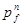
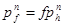
4.15 (4.15). Вертикальное нормативное давление сыпучих материалов
на днище силоса 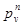
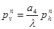
где a4 - коэффициент, принимаемый по прил. 8 (3).
4.16 (4.16). При нагнетании воздуха или газа в силос, при работе пневматических систем выпуска, активной вентиляции и газации неподвижного сыпучего материала (без образования кипящего слоя) кроме давлений сыпучих материалов должно быть учтено избыточное давление воздуха или газа на стены и днища силосов.
Значение и распределение избыточного давления воздуха принимаются по данным технологической части проекта.
При отсутствии данных для расчета допускается в силосах с зерновыми продуктами указанное избыточное давление принимать равным величине напора воздуха или газа в подводящей системе и равномерно распределенным по периметру силоса. От уровня верхнего отверстия в подводящей системе до верха засыпки это давление принимается равномерно уменьшающимся до нуля.
4.17 (4.17). Для силосов, в которых нагнетается воздух с образованием кипящего слоя (гомогенизация), нормативное давление на днище и стены в пределах кипящего слоя определяется от сыпучего материала и сжатого воздуха как гидростатическое давление жидкости с удельным весом, равным 0,6g, где g - удельный вес сыпучего материала (см. прил. 4 (1)), при этом следует учитывать повышение уровня сыпучего материала в связи с уменьшением удельного веса в процессе гомогенизации.
4.18 (4.18). Температурные воздействия от суточного изменения
температуры наружного воздуха и перепада температуры по толщине стен
допускается заменять дополнительным горизонтальным давлением сыпучего материала
на наружные стены сблокированных или отдельно стоящих силосов, считая его
равномерно распределенным по периметру и высоте. Нормативное значение этого
давления 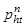
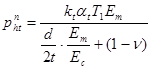
где T1 - суточная амплитуда температуры наружного воздуха, принимаемая равной 2q1, где q1 определяется по СНиП 2.01.07-85;
Em - модуль деформации сжатия сыпучего материала; для зерновых силосов значение Em допускается принимать по формуле
Em
= 250 ( 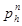
Еc - модуль упругости материала стен силосов; для железобетонных стен с учетом трещин допускается принимать по формуле
Еc = 10 000 МПа (100 000 кгс/см2);
kt - коэффициент, принимаемый равным: 2,5 - для стальных, 2 - для монолитных железобетонных стен силосов и 1 - для сборных железобетонных стен;
at - коэффициент линейной температурной деформации материала стен;
d - внутренний диаметр силоса;
t - толщина стен;
v - начальный коэффициент поперечных деформаций (коэффициент Пуассона), принимаемый для зерновых продуктов равным 0,4.
Допускается давление 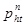
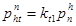
где kt1 - коэффициент, принимаемый равным: 0,4 - для стальных стен силосов; 0,2 - для монолитных железобетонных; 0,15 - для сборных железобетонных при толщине стен менее 15 см и 0,1 - при толщине 15 см и более.
Значение принимается по формуле [1] в нижней зоне
силоса. При определении 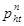
Примечание. Для квадратных силосов в формуле [7] вместо d следует принимать l - расстояние в свету между противоположными стенами.
4.19 (4.19). Нормативные давления сыпучего материала на наклонную под углом a к горизонту поверхность днищ или воронок силосов определяются по формулам:
нормальное к поверхности воронки или днища
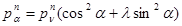
касательное к поверхности воронки или днища
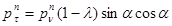
4.20 (4.20). При выполнении требований п. 3.32 горизонтальное давление на стены круглых и квадратных силосов, из которых зерно выпускается через разгрузочные трубы или смежные силосы и звездочки, определяют с учетом требований пп. 4.5 - 4.12, умножая коэффициенты а1, а2 и а3 на коэффициент условий работы gc = 0,3, коэффициенты rs, и rb - на коэффициент gc = 1,2.
4.21 (4.21). Нормативное горизонтальное давление сыпучего
материала на внешние стенки разгрузочной трубы 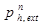
Силы трения, действующие на подвески электротермометров, допускается определять как давление , умноженное на коэффициент трения, данный в прил. 4 (1).
4.22 (4.22). Кратковременная часть горизонтального неравномерного давления сыпучих материалов принимается равной 0,7 соответствующих кольцевых, локальных и полосовых давлений, определяемых по формулам [2] - [4]; остальная часть неравномерного давления, а также давление, определяемое по формуле [1], принимаются как длительные горизонтальные давления.
4.23 (4.23). Давление зерна на стены зерноскладов следует определять как давление на подпорные стены.
В прил. 9 приведено давление зерна на вертикальные стены зерноскладов при разной высоте загрузки.
5.1 (5.1). Несущие конструкции производственных зданий и сооружений предприятий должны соответствовать СТ СЭВ 384-76. При этом необходимо учитывать нагрузки и их сочетания в соответствии с пп. 4.1-4.3, а также динамическое воздействие на конструкции оборудования.
Примечания: 1. Конструкции помещений с производствами категории Б (перекрытия, включая заполнение монтажных проемов, внутренние стены, перегородки), а также рабочих зданий элеваторов, надсилосных и подсилосных этажей (включая наклонные днища и воронки силосов) следует рассчитывать на прочность от воздействия особой нагрузки по п. 4.1 (примеч. 1), принимаемой равномерно распределенной по всей площади конструкций внутри помещения, при этом все остальные кратковременные нагрузки допускается не учитывать.
2. Наружные легкосбрасываемые конструкции (за исключением оконных стекол я других конструкций, входящих в расчетную площадь 0,03 м2 на 1 м3 объема помещений) допускается проектировать из условия их разрушения или вскрытия при избыточном давлении внутри помещения ра = 2 кПа (200 кгс/м2).
5.2 (5.2). При расчете сборно-монолитных перекрытий следует учитывать изменения нагрузок и расчетных схем, соответствующие условиям работы конструкций в процессе строительства и после замоноличивания.,
5.3. Плиты перекрытий с отверстиями диаметром до 200 мм, расположенными с промежутками не менее 300 мм, допускается рассчитывать без учета отверстий. Наличие отверстий должно учитываться при конструировании армирования (сгущением арматуры между отверстиями, установкой стержней, окаймляющих отверстия).
5.4 (5.3). Стены железобетонных силосов должны удовлетворять требованиям расчетов по несущей способности (расчет на прочность - предельные состояния первой группы) и пригодности к нормальной эксплуатации (расчет с целью исключения образования или чрезмерного раскрытия трещин, для прямоугольных силосов - также исключения чрезмерных прогибов - предельные состояния второй группы) - согласно СНиП 2.03.01-84.
При расчете стен силосов учитывается основное сочетание нагрузок и воздействий (горизонтальное давление сыпучих материалов на стены силосов по п. 4.5, температурные воздействия по п. 4.18, а также давление воздуха по пп. 4.16 и 4.17, давление ветра на оболочку пустого или заполненного отдельно стоящего силоса диаметром свыше 12 м). Усилия от давления воздуха и температурных воздействий умножаются на коэффициент сочетания нагрузок y2, равный 0,9, от ветра - на коэффициент y2, равный 0,8.
При расчете, конструкций для предельных состояний как первой, так и второй группы должна быть учтена изменчивость нагрузок и воздействий. При этом расчет по несущей способности на выносливость для стен силосов, возводимых в скользящей опалубке (круглых диаметром 12 м и менее и квадратных), производится на основное сочетание расчетных нагрузок с коэффициентом надежности по нагрузке по п. 4.2, для всех остальных силосов - на основное сочетание нагрузок с коэффициентом надежности по нагрузке, равным 1. Коэффициент асимметрии цикла следует принимать согласно п. 4.13.
Изменчивость нагрузок и воздействий вызывается пульсацией, изменением давлений сыпучих материалов при заполнении и опорожнении, температурными воздействиями.
5.5 (5.4). Стены силосов, в которых возможно хранение различных сыпучих материалов, следует рассчитывать на максимальное давление, возникающее от этих сыпучих материалов. Допускается все силосы мукомольно-крупяных и комбикормовых предприятий рассчитывать на нагрузку от зерна.
Примечание. Днище силосов для хранения мучнистых продуктов должны проверяться на давление от них.
5.6 (5.5). Усилия в стенах железобетонных силосов от давления сыпучих материалов следует определять с учетом пространственной работы стен силосов. Допускается при расчете усилий в вертикальных сечениях стен круглых сблокированных силосов считать эти силосы отдельно стоящими замкнутыми цилиндрическими оболочками с постоянным сечением стен по контуру оболочки, при этом усилия от загрузки звездочек учитывают отдельно1.
__________
Можно использовать работы: Строительная механика и расчет сооружений. 1979, № 2,с. 42-56; 1981. № 6, с. 47-53 и др.
Усилия в стенах круглых силосов допускается определять в упругой стадии работы ортотропной цилиндрической оболочки и без учета появления в них трещин.
Сборные элементы силосов следует дополнительно проверять на нагрузки и воздействия, возникающие при их транспортировании и монтаже.
5.7 (5.6). Расчетную растягивающую продольную силу N и расчетный изгибающий момент М на единицу высоты в вертикальных сечениях стен круглых железобетонных силосов, имеющих по концам шарнирно связанные со стенами, жесткие в горизонтальных плоскостях диафрагмы, от горизонтальных давлений сыпучих материалов, указанных в п. 4.10, в пределах высоты hmt (см. черт. 1) допускается определять по формулам:
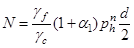
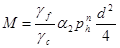
где gf - коэффициент надежности по нагрузке, равный 1,3 при расчете на прочность и образование трещин и равный 1 при расчете по деформациям, раскрытию и закрытию трещин;
gc - коэффициент условий работы, принимаемый равным 1.
Коэффициенты a1 и a2, учитывающие влияние локальных давлений сыпучих материалов, определяются по формулам:
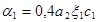
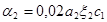
где a2 - коэффициент, следует определять по табл. 1;
x1, x2 - коэффициенты, учитывающие влияние относительной толщины стен и определяемые по формулам:
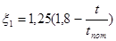
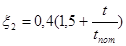
здесь t - толщина стен силоса без ребер или приведенная толщина стен с ребрами (по равенству моментов инерции);
tnom - номинальная толщина стен по табл. 2;
c1 - коэффициент, учитывающий длительность действия давления и принимаемый равным: 1 - при действии полного давления; 0,7 - при действии кратковременной части давления и 0,3 - при действии длительной части давления в соответствии с п. 4.22.
Таблица 2
|
3 |
6 |
12 |
18 |
24 |
|
|
Номинальная толщина стен tnom, см |
16 |
18 |
24 |
27 |
30 |
При коэффициенте c1 = 1 значения a1 и a2 определяются по графикам, приведенным соответственно на черт. 12 (4) и 13 (5).
Черт. 12 (4). Значение коэффициента a1
Черт. 13 (5). Значение коэффициента a2
По формулам [10], [11] определяют усилия для расчета стен с симметричным армированием. При несимметричном армировании эти формулы следует использовать при определении наружной арматуры, для внутренней арматуры допускается усилия определять по формулам:
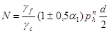
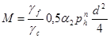
5.8 (5.7). Стены круглых железобетонных силосов диаметром 6 и 12 м, имеющих шарнирно связанные со стенами жесткие в горизонтальной плоскости диафрагмы, допускается рассчитывать в зонах на высотах h1, h2 и h3 (см. черт. 1) на центральную растягивающую продольную силу N, определяемую по формуле
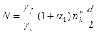
где a1 - коэффициент, значение которого в пределах высот h2 и h3 принимается по табл. 1, в пределах высоты h1 - равным 0,5.
Примечание. При h > 30 м h1 = h2 = h3 = 5 м; при меньших значениях h высоту зон h1, h2 и h3 принимают равной h/6.
5.9 (5.8).
При расчете стен многогранных силосов (кроме прямоугольных) продольные
растягивающие силы допускается определять по формуле [10] как для круглого
силоса диаметром, равным четырем гидравлическим радиусам многогранного силоса.
Пролетный и опорный изгибающие моменты в гранях многогранника определяют как
суммы моментов, рассчитанных по формулам [11] и [17].
В формуле [17]
следует принимать 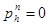
5.10 (5.9). Стены звездочек круглых и многогранных сблокированных силосов следует проверять по прочности на расчетные усилия, возникающие при загрузке звездочки в случае, когда смежные силосы не заполнены (черт. 14, а (6, а)), а также на сумму усилий, возникающих в стенах звездочки в случае загрузки звездочки и смежного силоса (черт. 14, б (6, б)). В этих случаях загрузки допускается не производить расчет стен на образование и раскрытие трещин и не учитывать температурные воздействия на них.
Черт. 14 (б). К расчету звездочки
а - загрузка звездочки; б - загрузка звездочки и силоса; в - определение угла y; г - дополнительное армирование стен звездочки; 1 - опорная; 2 - пролетная арматура
При загрузке звездочки возникающую при этом продольную силу в ее стенах допускается не учитывать, а значение изгибающего момента определять по формуле
где a3 - коэффициент, принимаемый по табл. 3 для опорного и пролетного моментов в зависимости от угла y, указанного на черт. 14, в (6, б).
- нормативное горизонтальное давление сыпучего материала на стены звездочки, определяемое по п. 4.6; для звездочек силосных корпусов с рядовым расположением силосов допускается принимать
,
- давление в силосе по формуле [1].
Таблица 3
|
d, м |
h, м |
Опоры |
|||||
|
y, град |
|||||||
|
0 |
5 |
10 |
15 |
20 |
22,5 |
||
|
6 |
30 |
0,186 |
0,153 |
0,124 |
0,100 |
0,083 |
0,057 |
|
6 |
15 |
0,150 |
0,125 |
0,100 |
0,080 |
0,066 |
0,057 |
|
12 |
30 |
0,150 |
0,125 |
0,100 |
0,080 |
0,066 |
0,057 |
|
12 |
15 |
0,075 |
0,060 |
0,057 |
0,057 |
0,057 |
0,057 |
Продолжение табл. 3
|
d, м |
h, м |
Пролеты |
|||||
|
y, град |
|||||||
|
0 |
5 |
10 |
15 |
20 |
22,5 |
||
|
6 |
30 |
0,116 |
0,092 |
0,072 |
0,057 |
0,042 |
0,029 |
|
6 |
15 |
0,093 |
0,075 |
0,060 |
0,045 |
0,035 |
0,029 |
|
12 |
30 |
0.093 |
0,075 |
0,060 |
0,045 |
0,035 |
0,029 |
|
12 |
15 |
0,040 |
0,037 |
0,029 |
0,029 |
0,029 |
0,029 |
Примечание. При диаметре силоса 9 м значение коэффициента a3, принимается по интерполяции.
При загрузке звездочки и силоса (см. черт. 14, б (6, б)) продольную силу и изгибающий момент определяют по формулам:
; [14]
Для силосных корпусов со сборными силосами, соединенными между собою в местах касания, коэффициент gc в формулах [13] и [15] допускается принимать равным 1,25 для наружных силосов и 2,5 - для внутренних.
При недостаточности арматуры, установленной без учета загрузки звездочек, рекомендуется не увеличивать сечение всей кольцевой арматуры, а устанавливать дополнительную арматуру (опорную арматуру) в пределах звездочек у стыков силосов (черт. 14, г (6, г)).
5.11 (5.10). Стены силосов диаметром 12 м и более, загружаемых или разгружаемых внецентренно, следует проверять на усилия, определяемые с учетом разного уровня сыпучего материала по периметру его верхнего конуса.
Поперечную силу Qz и изгибающий момент Mz в сечении А-А (черт. 15) допускается определять как на защемленный в основании стержень кольцевого сечения по приближенным формулам:
; (1)
; (2)
Дополнительные продольные усилия N, возникающие в стенах силоса от несимметричной нагрузки, допускается определять по формуле
где .
Черт. 15. Силос, загруженный внецентренно
Если при разгрузке силоса вблизи стен образуется воронка в сыпучем материале с местным снижением горизонтального давления, то следует производить проверку достаточности принятого армирования для восприятия местных усилий в связи со снижением горизонтальных давлений в потоке (см. п. 4.9).
5.12 (5.11). Расчетную растягивающую продольную силу N и расчетный изгибающий момент М в вертикальных сечениях стен квадратных железобетонных силосов от горизонтальных давлений сыпучего материала следует определять по формулам:
где b1 - коэффициент, равный 1/24 для пролетного изгибающего момента, 1/12 для опорного момента монолитных силосов, для силосных корпусов со сборными силосами - устанавливаемый с учетом жесткости заделки стен, зависящей от конструктивного решения узловых соединений.
Коэффициент b1 и рекомендации по расчету стен квадратных силосов из объемных элементов даны в прил. 10.
5.13 (5.12). При расчете наружных стен сблокированных или одиночных силосов следует учитывать дополнительные изгибающие моменты Мt (для квадратных и многогранных силосов) и растягивающие продольные силы Nt от температурных воздействий. Эти усилия допускается определять по формулам:
; [18]
; [19]
, [20]
где gf - коэффициент надежности по нагрузке, равный 1,1 при расчете на прочность и равный 1 при расчете по деформациям, раскрытию и закрытию трещин.
Примечание. Для верхних и нижних участков стен круглых силосов, рассчитываемых согласно п. 5.8, температурные воздействия допускается не учитывать.
5.14 (5.13). При расчете стен прямоугольных силосов прогиб от давления по формуле [1] не должен превышать 1/200 пролета в осях стен.
При разновременном загружении смежных (прямоугольных или круглых) силосов в расчетах по предельным состояниям второй группы значения ширины раскрытия трещин и прогиба, определенные по СНиП 2.03.01-84, следует умножать на коэффициент cvar. Значение cvar принимается равным 1,1 при ss = 200 МПа (2000 кгс/см2) и 1,2 при ss, = 270 МПа (2700 кгс/см2).
5.15 (5.14). При осуществлении мероприятий по снижению горизонтальных давлений сыпучих материалов в соответствии с п. 3.32 допускается в стенах силосов, из которых зерно выпускается через разгрузочные трубы Или через смежные силосы и звездочки, усилия от горизонтальных давлений сыпучих материалов определять по формулам [10], [11], [16] и [17], умножая коэффициенты a1, a2 и , а для высот h2 и h3 - коэффициент а1 в формуле [12] на уменьшающий коэффициент g1, равный 0,3.
5.16. При назначении толщин и армировании участков сборных стен силосов, заключенных между ребрами ребристых сборных элементов, следует принимать приходящееся на всю площадь участка равномерно распределенное горизонтальное давление, определяемое по формулам [1] и [4] для квадратных силосов и по формулам - [1] и [3] для круглых.
5.17. Расчет по раскрытию и закрытию вертикальных трещин в стенах железобетонных силосов производится по СНиП 2.03.01-84.
5.17.1. Усилия в вертикальных сечениях стен круглых силосов от кратковременных и длительных нагрузок от давления сыпучих материалов следует определять для зон, указанных на черт. 1, по формулам:
от кратковременной нагрузки:
зона 1 ; (4)
зоны 2, 3 ; (5)
средняя зона ; (6)
; (7)
от длительной нагрузки:
зона 1 ; (8)
зоны 2, 3 ; (9)
средняя зона ; (10)
. (11)
5.17.2. Усилия в вертикальных сечениях стен квадратных силосов от кратковременных и длительных нагрузок от давления сыпучих материалов следует определять по формулам:
от кратковременной нагрузки:
; (12)
; (13)
от длительной нагрузки:
; (14)
; (15)
5.18. Расчет вертикальных сечений и стыков элементов стен круглых или многогранных силосов при перевязке вертикальных стыков и обеспечении совместной работы смежных по высоте элементов следует производить на совместное восприятие усилий сечением железобетонного элемента и стыка.
В случае отсутствия перевязки или при необеспечении совместной работы смежных по высоте элементов вертикальные стыки следует рассчитывать с учетом их жесткости.
При расчете стен сборных круглых или многогранных силосов с перевязкой вертикальных стыков совместность работы смежных по высоте элементов допускается проверять по формуле
; (16)
полученной из условия ,
где Q - сдвигающая сила, определяемая по формуле
;
Qcr - удерживающая сила, определяемая по формуле
;
здесь g = 0,9 - коэффициент условий работы горизонтального стыка;
Nz - определяется по формуле [21] с коэффициентом gf;
Ng - нагрузка на 1 м длины веса вышележащих конструкций;
- равномерно распределенное по периметру нормативное горизонтальное давление сыпучих материалов на стены;
h1 - высота элемента стены;
d - внутренний диаметр силоса;
lu - длина перепуска смежных по высоте элементов;
fb = 0,7 - коэффициент трения.
5.19 (5.15). Дополнительные усилия в стенах силосов от изгиба сблокированных силосов как целого блока следует определять расчетом блока силосов на упругом основании. При соблюдении условий п. 3.24 допускается не учитывать эти дополнительные усилия.
5.20. Величина расчетного изгибающего момента в горизонтальном сечении предварительно напряженных железобетонных стен силосов Мо, возникающего в процессе равномерной навивки напрягаемой арматуры с одного конца силоса (при несвободных концах), определяется по формуле
, (17)
где gsp - коэффициент точности предварительного напряжения арматуры, равный 1,1;
sсоп - контролируемое предварительное напряжение арматуры;
Аsр - площадь сечения напрягаемой арматуры на единицу высоты силоса;
t1 - толщина стены силоса, на которую навивается арматура.
5.21 (5.16). Коэффициенты условий работы при расчете стен силосов следует определять в соответствии с требованиями СНиП 2.03.01-84, принимая для стен силосов, возводимых в скользящей опалубке, в пределах засыпки* сыпучих материалов: коэффициент условий работы арматуры gb = 0,9, коэффициент условий работы бетона gb = 0,75. На последний коэффициент следует умножать Rb и Rbt. При учете gb = 0,75 коэффициент gb2, учитывающий длительность действия нагрузки, принимается равным 1.
5.22 (5.17). Стены железобетонных силосов, в которых площадь сечения вертикальной арматуры меньше минимальной, указанной в СНиП 2.03.01-84, следует рассчитывать на сжатие как бетонные конструкции с коэффициентом условий работы, приведенным в п. 5.21.
5.23 (5.18). Расчетная вертикальная продольная сила Nz от трения сыпучего материала о стену силоса на единицу длины периметра горизонтального поперечного сечения на глубине z от верха засыпки определяется по формуле
При расчете стен силосов на сжатие следует учитывать загрузку смежных силосов.
По формуле [21] допускается определять продольные силы, возникающие в стенах разгрузочных труб и подвесок для электротермометров с умножением на коэффициент gext = 1,5. Для разгрузочных труб следует также учесть силы трения сыпучего материала внутри трубы.
При определении коэффициент а4 принимается равным 1.
Для силосов диаметром 6 м и высотой 30 м расчетные усилия (для предельных состояний первой группы) от подвески электротермометров допускается принимать равными: для подвески типаТП-1М 36 кН (3,6 тс); типа КПИ - 26 кН (2,6 тс).
5.24 (5.19). При расчете стен силосов на сжатие максимальные напряжения сжатия следует определять в месте опирания стен на плиту днища, на балки или на фундаментную плиту.
При расчете на сжатие нижней зоны стен силосов расчетная нагрузка от веса сыпучих материалов умножается на коэффициент, равный 0,9.
5.25. Средние напряжения сжатия в стенах силосов, опирающихся непосредственно на фундаментную плиту, допускается определять без учета проемов; дополнительные напряжения сжатия стен силосов вблизи проемов рекомендуется определять, принимая, что сжимающая сила, приходящаяся на стену силоса в пределах проема, передается равномерно на примыкающие к проему стены силоса (на длину не более 31, где t - толщина стены).
5.26 (5.20). При расчете горизонтальной и вертикальной арматуры стен железобетонных силосов диаметром свыше 12 м следует учитывать также ветровую нагрузку, рассчитывая силос как оболочку, при этом радиальные деформации оболочки силоса при заполненном силосе следует определять с учетом реакции заполнения. Допускается при этом рассматривать сыпучий материал как линейно-податливое основание с коэффициентом постели С, который определяется по формуле , где Е определяется по п. 4.18.
5.27. Усилия от краевого эффекта в гладких стенах круглых силосов, защемленных у днища, могут быть определены по формулам:
краевой изгибающий момент
; (18)
краевая поперечная сила
; (19)
где - горизонтальное давление на стенку силоса у днища;
, здесь d - внутренний диаметр силоса.
По высоте стены усилия краевого эффекта изменяются по следующей закономерности (началом координат принимается точка присоединения стены к днищу):
меридиональный момент
; (20)
кольцевое сжимающее усилие
; (21)
где (z - расстояние от места закрепления стены до рассматриваемой точки).
Значения k1 и k2 в зависимости от e приведены на черт. 16.
Максимальное значение изгибающего момента обратного знака при e = p/2 определяется по формуле
5.28. При шарнирном опирании стены на днище усилия краевого эффекта в точке присоединения определяются по формулам
M = 0; . (23)
При этом усилия в стенах по высоте меняются по закономерностям:
Черт. 16. Значения коэффициентов k1, k2
Максимальное значение момента (черт. 17) при e = p/4 определяется по формуле
. (26)
Значения k3 и k4 в зависимости от e приведены на черт. 17.
5.29 (5.21). Стены силосов при должны быть проверены на усилия от давления как стены бункера.
Давление сыпучего материала на стены бункера на глубине z от верха засыпки определяется по формуле
Черт. 17. Значения коэффициентов k3, k4
5.30 (5.22). Стены стальных круглых силосов рассчитываются на те же сочетания нагрузок и воздействий, что и стены железобетонных круглых силосов (см. пп. 4.2 и 5.4).
5.31. Стальные стены силосов допускается не рассчитывать на выносливость.
5.32 (5.23). Стены стальных силосов, воспринимающие изгибающие моменты, рассчитывают на те же усилия, что и стены железобетонных силосов, но с коэффициентом условий работы gc, равным 0,8; дополнительно стены стальных силосов проверяют на устойчивость с коэффициентом gc = 1.
5.33 (5.24). Расчетную растягивающую кольцевую продольную силу от горизонтальных давлений сыпучих материалов в стенах круглых стальных силосов, не воспринимающих кольцевые изгибающие моменты, допускается определять по формуле
. [23]
Проверка на прочность и устойчивость от усилий сжатия в горизонтальных сечениях производится в соответствии с указаниями СНиП II-23-81 и с учетом поддерживающего влияния внутреннего давления зерна при коэффициенте gf = 1.
5.34. При симметричной разгрузке и загрузке сыпучего материала стены силосов проверяют на прочность по формуле (93) СНиП II-23-81 с коэффициентом условий работы gc = 0,8.
При этом вертикальные усилия N могут быть определены как для консольно защемленного в основании стержня по формуле
, (27)
где SF, SM - суммарная вертикальная сила и изгибающий момент от ветра и других нагрузок.
Сдвигающие усилия Qx от ветра, натяжения транспортеров и других горизонтальных сил допустимо определять по формуле
, (28)
где SQ - суммарная горизонтальная сила;
j - угол между направлением силы и расчетной точкой на окружности силоса.
5.35. Стена силоса проверяется на устойчивость по формуле
где scr1 - определяется по п. 8.5 СНиП II-23-81 с учетом внецентренного сжатия стенок силоса (допускается учитывать влияние на устойчивость сыпучего заполнителя силоса - см. пример 5);
sz - максимальное напряжение сжатия в стене силоса.
Величина Dscr - учитывает кольцевое растяжение оболочки от внутреннего давления сыпучего материала
при ; (30)
при , (31)
где Е - модуль упругости стали.
5.36. В случае усиления гладкой цилиндрической оболочки вертикальными и кольцевыми ребрами жесткости с соблюдением условия (b - ширина панели, измеренная по дуге направляющей), панель проверяется на устойчивость по формулам (102) и (103) СНиП II-23-81.
Если , то панель проверяется на устойчивость как оболочка по указаниям п. 8.5 СНиП II-23-81.
В случае если вертикальные ребра не доведены до верха стен, необходимо учитывать концентрацию напряжений в оболочке стен над ребрами.
При усилении стен горизонтальными ребрами следует учитывать меридиональные изгибающие моменты в оболочке от давления сыпучего материала, при проверке устойчивости - возможную погибь оболочки.
Учет концентрации напряжений, дополнительных изгибающих моментов и погиби даны в примере 6.
5.37. При наличии сдвигающих усилий Qx = txt устойчивость проверяется по формуле
, (32)
где sz; scr1 Dscr определяются так же, как и в пп. 5.34, 5.35.
Величина tcr1 определяется по формуле
, (33)
где z - длина зоны действия касательных напряжений.
В случае если сдвигающие усилия распространены по всей высоте силоса, z принимается равной высоте силоса.
В случае укрепления оболочки кольцевыми ребрами z следует принимать равной расстоянию между ребрами.
gt - принимается по табл. 4 в зависимости от r/t.
Таблица 4
|
200 и менее |
250 |
500 |
1000 и более |
|
|
gt |
0,8 |
0,7 |
0,6 |
0,5 |
5.38. В случае неосесимметричной загрузки или выгрузки сыпучих материалов стены стальных силосов, не воспринимающие кольцевые изгибающие моменты, проверяются на устойчивость и прочность от воздействия кольцевых меридиональных и сдвигающих усилий, определяемых расчетом цилиндрической оболочки или по результатам специальных исследований.
На прочность стена силоса проверяется по формуле (93) СНиП II-23-81, на устойчивость - по формуле (29) п. 5.35.
5.39 (5.25). При высоте стен силоса следует руководствоваться указаниями п. 5.29, при этом дополнительно стены силоса проверяют на устойчивость с учетом вертикальных сил трения сыпучего материала о стены силоса по формуле [5], в которой вместо , принимается , определяемое по формуле [22].
5.40 (5.26). Места изменения формы оболочек, в частности, зона сопряжения цилиндрической части с конусной или с плоским днищем, а также места резкого изменения нагрузок должны быть проверены на дополнительные местные напряжения (краевой эффект) по СНиП II-23-81.
При этом следует учитывать рекомендации пп. 5.27, 5.28.
5.41 (5.27). Расчет конических воронок силосов следует производить на горизонтальное кольцевое и осевое растяжения, действующие вдоль образующей.
Расчетные растягивающие продольные силы в конической воронке - горизонтальную Nh в меридиональном сечении и Nt, действующую вдоль образующей воронки под углом a к горизонту в кольцевом сечении (черт. 18 (7)) следует определять по формулам:
где gf1 - коэффициент надежности по нагрузке от собственного веса воронки силоса;
g - собственный вес единицы площади стенки воронки;
G - вес части воронки с сыпучим материалом, расположенной ниже плоскости сечения.
Черт. 18 (7). Расчетные схемы конической воронки
a - обозначение размеров воронки; б - схема для определения горизонтального растягивающего усилия; в - схема для определения меридионального (вдоль ската) растягивающего усилия
Значения коэффициента условий работы gc даны в прил. 8 (3). Допускается и принимать в уровне верха воронки.
5.42 (5.28). Грани пирамидальных воронок следует рассчитывать на местный изгиб (из плоскости грани) от давления, определяемого по формуле [8], совместно с растягивающими продольными силами в вертикальных и горизонтальных сечениях воронки. Горизонтальную растягивающую силу у грани пирамидальной квадратной воронки следует определять по формуле [24], а растягивающую силу вдоль грани пирамидальной квадратной воронки следует определять по формуле [25]; при этом вместо dz необходимо принимать ширину в свету грани воронки в рассматриваемом горизонтальном сечении, а вместо величины p следует принимать 4.
5.43 (5.29). Балки днища следует рассчитывать на нагрузки, передающиеся через стены и днища (или воронки) силоса, принимая, что нагрузка от стен силосов q1 передается на балку в виде равномерно распределенной по длине l1 (черт. 19 (8)).
Черт. 19 (8). Передача нагрузки от балки на колонну
q1 - нагрузка от стены силоса; q2 - нагрузка от днища (воронки); l1 - расчетная длина опирания стены силоса на балку; h - высота балки; b - ширина оголовка колонн; l0 - расстояние между осями колонн
Нагрузку от днища q2, а также нагрузку от стен силосов при l1 > l0 следует принимать равномерно распределенной по периметру балки.
5.44. Днище рекомендуется рассчитывать на ЭВМ как плоскую систему из кольцевых балок и плиты. При расчете силоса с монолитными стенами следует учитывать отсутствие перемещений в вертикальном направлении наружной кольцевой балки днища.
Кольцевые балки днищ допускается рассчитывать исходя из их совместной работы с цилиндрической оболочкой силоса на действие вертикальных усилий, передаваемых от колонн подсилосного этажа или от стен силосов. Расчет выполняется для упругой стадии.
В случае невозможности расчета на ЭВМ допускается расчленять днище на элементы - плиту и кольцевые балки. При этом кольцевые балки рассчитываются на нагрузки от днища q2, определенные в соответствии с грузовыми площадями, приходящимися на эти балки.
5.45 (5.30). При расчете плоских наклонных днищ и балок днищ усилия следует определять как в обычных перекрытиях с учетом давления сыпучих материалов по формулам [8] и [9] и коэффициента условий работы gc, приведенного в прил.8 (3).
5.46 (5.31). Дополнительные усилия в днищах силосов при расчете блока силосов на упругом основании определяются в соответствии с указаниями пп. 5.19 и 5.48.
5.47 (5.32). Колонны подсилосного этажа необходимо рассчитывать по схеме стоек, заделанных в фундамент, с учетом фактического закрепления в днище силоса, при этом расчетную длину колонн следует принимать, как правило, не менее высоты колонны от верха подколенника до верха капители.
Максимальный процент содержания арматуры железобетонных колонн, как правило, не должен превышать 3.
5.48 (5.33). Колонны подсилосного этажа необходимо рассчитывать на максимальные усилия, передающиеся на них при разных схемах загружения силосов (при полной или частичной загрузке силосных корпусов), при этом расчетная нагрузка от веса сыпучих материалов, определяемая в соответствии с пп. 4.2 и 4.4, умножается на коэффициент, равный 0,9.
Усилия в колоннах следует определять расчетом сооружения на упругом основании, при этом для железобетонных корпусов при соблюдении требований п. 3.24 допускается силосную часть считать абсолютно жесткой. При соотношении сторон корпуса, равном 2 и более, допускается определять усилия в колоннах как в плоской системе конечной жесткости, выделяя для расчета полосу шириной, равной диаметру или стороне силоса.
5.49 (5.34). Если колонны подсилосного этажа бетонируются в скользящей опалубке, их следует заводить в стены силосов выше днища на высоту hz, определяемую по формуле
, [26]
где N - продольная сила в колонне подсилосного этажа;
А1 - заштрихованная площадь на черт. 20 (9);
n1 - число стен силосов, примыкающих к колонне.
Примечание. Допускается hz определять по формуле
, [27]
где lan - длина анкеровки арматуры по СНиП 2.03.01-84.
Черт. 20 (9). Заделка колонны подсилосного этажа, бетонируемой в скользящей опалубке, в стены силосов
5.50 (5.34). При расчете по прочности сборных железобетонных колонн подсилосного этажа случайный эксцентриситет, учитываемый согласно требованиям СНиП 2.03.01-84, следует принимать не менее 2,5 см.
В колоннах подсилосного этажа дополнительные усилия от изгиба и сжатия при наклоне корпуса от неравномерной осадки могут не учитываться (при крене до 0,006).
5.51. При нескольких подсилосных этажах усилия в колоннах следует определять по расчету рамного каркаса. При этом допускается принимать жесткость верхних ригелей (связанных со стенами силосов) бесконечной.
Расчет указанных ригелей на нагрузки от стен силосов допускается производить как расчет обвязочных балок.
5.52 (5.35). Проектирование оснований и фундаментов предприятий по хранению и переработке зерна следует осуществлять в соответствии со СНиП 2.02.01-83 и с учетом требований настоящего раздела.
Основные требования к инженерно-геологическим изысканиям для элеваторных сооружений даны в прил. 12.
5.53. Усилия в фундаментной плите, ее деформация и реактивное давление грунта определяются из расчета плиты на упругом основании с учетом жесткости надфундаментного строения. Модель основания выбирается в зависимости от грунта.
5.54 (5.37). При расчете монолитных плит силосных корпусов, загружаемых сыпучими материалами не ранее чем через 3 мес. после окончания бетонирования плит, класс бетона следует назначать с учетом срока загрузки.
5.55 (5.38). При расчете оснований силосных корпусов и рабочих зданий элеваторов по деформациям следует, как правило, использовать расчетную схему в виде линейно деформируемого полупространства.
Использование расчетной схемы в виде линейно деформируемого слоя для указанных зданий и сооружений допускается при соответствующем обосновании.
В последнем случае при расчете осадок с модулем деформации грунта основания Е ³ 10 МПа (100 кгс/см2) для фундаментов силосных корпусов и рабочих зданий элеваторов в виде сплошной плиты шириной или диаметром более 10 м в формулу расчета осадок следует ввести дополнительные повышающие коэффициенты, а глубину сжимаемой толщи Н допускается определять по формуле
, (34)
где b - ширина или диаметр фундамента, м;
Н0,y - принимаются соответственно равными для оснований, сложенных грунтами: глинистыми - 9 м и 0,75; песчаными - 6 м и 0,5;
kp - коэффициент, учитывающий давление на основание и принимаемый равным 0,8 при давлении 0,10 МПа (1 кгс/см2) и 1,4 при давлении 0,60 МПа (6 кгс/см2); при промежуточном значении - по интерполяции.
5.56 (5.39). При расчете оснований и фундаментов силосных корпусов расчетный вес сыпучего материала следует принимать с дополнительным понижающим коэффициентом, равным 0,9.
5.57. При определении давления на грунт под подошвой фундаментов силосных сооружений следует, как правило, учитывать возможность полной загрузки силосов сыпучими материалами, а также частичной односторонней загрузки.
При расчете плит на упругом основании допускается не учитывать возможность неравномерной загрузки силосов.
5.58 (5.40). Давление на грунт под подошвой фундаментных плит силосных корпусов с круглыми силосами диаметром 3-12 м и квадратными силосами размером в плане 3´3 м допускается определять с учетом распределения давления по прямолинейной эпюре при односторонней загрузке корпуса на 2/3 полной нагрузки.
При этом фундаментные плиты силосных корпусов с квадратными силосами, опирающиеся на колонны подсилосного этажа, допускается рассчитывать как безбалочные. Для силосных корпусов с круглыми силосами диаметром 6 м, опирающимися на колонны подсилосного этажа, фундаментные плиты допускается рассчитывать как прямоугольные плиты, заделанные в подколенники.
5.59. Для сплошных фундаментных плит при действии продольных сил в колоннах в пределах ядра сечения расчет стаканов фундаментов на продавливание допускается проводить, принимая высоту пирамиды продавливания до верха заделки колонн, а размеры и армирование стаканов назначать конструктивно (черт. 21).
При этом следует под дном стакана устанавливать плоские сварные сетки, а в проекте дать указания о контролируемой заделке колонн в стаканах.
Черт. 21. Схема продавливания фундаментной плиты
а - стакан заглублен в плиту; б - стакан выше плиты; 1 - фундаментная плита; 2 - колонна; 3 - стакан; 4 - пирамида продавливания
5.60. Расчет оснований сблокированных и отдельно стоящих силосов, возводимых на нескальных грунтах, следует производить по деформациям. При этом крен фундаментных плит не должен превышать 0,004 для силосных корпусов (продольной и поперечной оси) и рабочих зданий (крен продольной оси фундамента) и 0,003 - для поперечной оси фундамента рабочих зданий. Предельная величина средних осадок для силосных корпусов, сблокированных с рабочими зданиями, для отдельных силосных корпусов со сборными железобетонными конструкциями не должна превышать 30 см, отдельных силосных корпусов с монолитными железобетонными конструкциями - 40 см, отдельных рабочих зданий - 25 см.
(5.41). Предельные значения средних осадок и кренов, указанные в СНиП 2.02.01-83, могут быть увеличены при соответствующем обосновании.
При однородном основании со степенью изменчивости грунтов не более 1,2 величины этих осадок могут быть увеличены на 20 %.
Для силосных корпусов с несколькими подсилосными этажами крен фундаментных плит должен быть не более 0,002, средняя осадка не превышать 16 см.
Для стальных отдельно стоящих силосов относительная разность осадок должна быть не более 0,004, а средняя осадка не превышать 15 см.
Примечания: 1. При назначении отметок сооружений, смежных с ранее возведенными, следует учитывать последующие осадки. Допускается назначать отметки указанных сооружений, увеличенные на половину ожидаемых осадок.
2. Значения осадок смежных сооружений следует определять с учетом их взаимного влияния.
3. Влияние повторности приложения нагрузок от сыпучего материала в силосных сооружениях на деформации грунтов основания допускается не учитывать.
5.61 (5.42). Осадки отдельно стоящих фундаментов под колонны силосных корпусов допускается принимать для каждого фундамента как сумму осадок фундаментов в пределах верхней части сжимаемой толщи и осадок условной сплошной плиты для остальной части этой толщи.
Глубину верхней части сжимаемой толщи Нс1 допускается принимать по формуле
Hc1 = 0,55b + 1,45a
где b - ширина фундамента;
а - расстояние между смежными фундаментами.
Примечание. Осадки свайных фундаментов следует определять как для сплошного условного фундамента, согласно СНиП 2.02.03-85 при условии, что сваи заглублены ниже линии пересечения наклонных плоскостей, идущих от краев смежных свай или кустов свай под углом jIImt/4. При соблюдении указанного требования допускается свайные фундаменты рассчитывать только по деформациям (кроме грунтовых условий по п. 5.62) и по прочности материала свай.
5.62. Расчет устойчивости основания необходимо производить в случае возведения силосов на насыщенных водой пылевато-глинистых основаниях: мягкопластичных, текучепластичных и текучих, а также, когда основания ограничены откосами. При расчете устойчивости допускается принимать, что потеря устойчивости происходит в форме скольжения по круглоцилиндрической поверхности.
5.63 (5.43). При определении крена фундаментов силосных корпусов от временной нагрузки следует учитывать предварительное обжатие грунта равномерной первичной загрузкой длительностью не менее 2 мес. в соответствии с п. 3.34. При этом модуль деформации грунта E¢mt следует принимать равным:
, [28]
где Emt - средний в пределах сжимаемой толщи модуль деформации грунта;
ke - коэффициент повышения модуля деформации грунта, принимаемый равным: для песчаных грунтов - 1,5; для пылевато-глинистых грунтов с показателем текучести Iu < 0,25 - 1,3; для пылевато-глинистых грунтов с показателем текучести 0,25 < Iu £ 0,5 - 1,2; для грунтов других видов - 1,0.
5.64 (5.44). Несущие каменные стены и фундаменты зерноскладов, на которые передается давление зерновых продуктов, следует рассчитывать как подпорные стены.
5.65 (5.45). Участки стен зерноскладов, примыкающие к воротам, необходимо рассчитывать на давление зерновых продуктов, передаваемое через щиты, временно заложенные в проемы ворот.
5.66 (5.46). Фундаменты зерноскладов, на которые передается горизонтальное давление зерновых продуктов, следует проверять на устойчивость от сдвига.
5.67. Несущие рамные или сводчатые конструкции зерноскладов необходимо рассчитывать с учетом неблагоприятного сочетания нагрузок (например, при одностороннем давлении зерна и снеговой нагрузки на противоположную часть покрытия).
5.68 (5.47). Плиты перекрытий складов тарных грузов необходимо проверять на усилия, возникающие от колес аккумуляторных погрузчиков.
__________
1 Перечень утвержден приказом Минзага СССР от 4 июня 1974 г. № 194.
К категории Б относятся:
размольные цехи, корпуса, отделения мельзаводов (мельниц);
шелушильные (рушальные) цехи и отделения крупозаводов;
цехи и отделения по производству обогащенных круп;
выбойные цехи и отделения муки, крупы, комбикормов;
цехи и отделения гранулирования, брикетирования отрубей, комбикормов, травяной муки и кормовых смесей;
цехи, МУКЗы по производству комбикормов и кормовых смесей;
цехи, отделения, линии по производству БВД и премиксов;
цехи, отделения и линии очистки мучнистого сырья кормовых продуктов пищевых производств;
цехи, корпуса, отделения и склады бестарного хранения и отпуска муки, крупы, комбикормов, мучнистого сырья, жмыхов, шротов, травяной муки, дрожжей;
цехи, отделения, склады хранения и выбоя отходов, лузги, пыли;
помещения расфасовочных цехов, где производится растаривание муки, крупы и комбикормового сырья (кроме минерального), премиксов;
отделения, линии дробления комбикормового сырья (кроме минерального);
кукурузомолотильные отделения;
бестарные приемные и отпускные устройства (отделения) для муки, отрубей, мучки, лузги, сухих маисовых кормов, комбикормов, белкового сырья, дрожжей, травяной муки;
дробильные отделения сена и соломы;
склады сильнодействующих ядовитых веществ;
цехи по очистке и сортированию мягкой тары;
галереи и помещения, по которым транспортируется россыпью мука, отруби, крупа, комбикорма, мучнистое и белковое сырье, дрожжи, белково-витаминные добавки, травяная мука и премиксы.
К категории В относятся:
рабочие здания и силосные корпуса элеваторов;
зерносушилки (без топочных помещений);
приемно-очистительные и сушильно-очистительные башни для зерна;
приемно-отпускные устройства (для зерна) железнодорожного, автомобильного и водного транспорта;
зерноочистительные отделения мельниц, крупозаводов и комбикормовых заводов;
транспортерные галереи и помещения, где перемещаются хлебопродукты в таре и зерно россыпью;
склады тарного хранения муки, крупы, отрубей, мучки, комбикормов (рассыпных и гранулированных), травяной муки, премиксов, БВД;
сушильно-пропаривательные отделения;
механизированные и немеханизированные склады зерна и зернового сырья;
склады жиров;
склады хранения витаминов, антибиотиков и ферментных препаратов;
заводы и цехи по обработке семян (кроме кукурузомолотильных цехов);
силосные и напольные семехранилища;
цехи по производству круп, не требующих варки;
отделения и цехи расфасовки муки и крупы;
цехи (мастерские) по ремонту мягкой тары;
склады хранения мягкой тары;
материальные общетоварные склады;
отделения, линии изготовления бумажных пакетов;
лаборатории (производственные);
проходы-коридоры для теплоизоляции силосов бестарного хранения хлебопродуктов.
ДОПОЛНЕНИЕ К ПЕРЕЧНЮ
1. Аккумуляторные А
2. Склады бензина, тракторного керосина А
3. Склады карбида кальция, баллонов с горючими газами А
4. Помещения, где окрашиваются детали, машины с применением Б
нитрокрасок, нитроэмалей и других красок
5. Склады керосина (кроме тракторного) Б
6. Камеры трансформаторные (маслонаполненные) В
7. Столярные мастерские В
8. Мазутохранилища В
9. Дизельные силовые станции В
10. Насосные для мазута В
11. Склады пиломатериалов, угля В
12. Гаражи В
13. Электромашинные отделения Г
14. Конденсаторные до 600 кг Г
15. Котельные Г
16. Кузницы, литейные Г
17. Сварочные (электросварка, газосварка) Г
18. Закрытые электрораспределительные устройства и подстанции Г
19. Топочные помещения зерносушилок Г
20. Насосные станции (для воды) Д
21. Тепловые пункты Д
22. Помещения водобаков Д
23. Механические мастерские (без горячей обработки) Д
24. Компрессорные (воздушные) Д
25. Склады минерального сырья Д
26. Склады мелассы Д
1. Первичная загрузка осуществляется после приемки сооружений государственной комиссией во временную эксплуатацию.
2. Первичная загрузка-разгрузка проводится в целях постепенного равномерного обжатия конструкций и грунтов основания, недопущения перекосов сооружений и перенапряжений отдельных элементов, обеспечения наиболее благоприятного режима загружения, а также для выявления скрытых дефектов и своевременного их устранения.
3. Силосные корпуса и силосные части рабочих зданий загружаются поярусно в несколько очередей. Каждый ярус имеет высоту в 1/3 высоты емкости, но не более 10 м.
4. До заполнения сыпучим материалом каждого яруса, как правило, не разрешается заполнять отдельные силосы на большую высоту.
5. Последовательность загружения отдельных силосов в каждом ярусе должна обеспечивать соблюдение равномерности загрузки в плане, недопущение односторонней загрузки в продольном и поперечном направлении.
6. Последовательность загружения смежных корпусов и рабочего здания должна обеспечивать равномерность его загрузки в продольном направлении.
7. Весь процесс первичной загрузки сооружения должен проводиться в течение одного месяца с одинаковым временем загрузки каждого яруса.
8. По окончании загрузки в зависимости от свойств грунта, но не менее одного месяца дается выдержка сооружения под нагрузкой, после чего
производится первичная разгрузка корпуса, которую следует вести в порядке, обратном первичной загрузке.
9. Порядок и время загружения могут быть изменены решением проектной организации на основании промежуточных результатов первичной загрузки с учетом характера деформации конструкций и осадок сооружений.
10. Во время первичной загрузки-разгрузки силами предприятия ведутся ежедневные визуальные наблюдения за осадками и состоянием конструкций силосного корпуса.
11. Измерение осадок производится двойным нивелированием по классу III по всем осадочным маркам, предусмотренным в проекте, но не менее чем по четырем маркам, расположенным в углах сооружения и одной марке в центре подсилосного этажа.
12. Нивелирование производится от постоянного контрольного репера. Репер закладывается на расстоянии не менее 50 м от сооружений. Абсолютная отметка его определяется нивелирной передачей с реперов полигонометрической сети.
13. В период первичной загрузки-разгрузки нивелировка производится ежедневно. После сдачи сооружения в постоянную эксплуатацию нивелировка ведется один раз в 3 мес. в течение трех лет. При продолжающихся осадках срок наблюдения должен быть продлен.
14. При нивелировке данные измерений заносятся в специальный журнал с указанием веса сыпучего материала в сооружении на момент нивелировки. Журнал хранится на предприятии, а копии высылаются в проектную организацию. В этот же журнал заносятся данные по наблюдению за осадками в период строительства, производимому строительной организацией.
15. В случае равномерности осадок за период возведения силосного корпуса каждый ярус при первичной загрузке загружается в одной и той же последовательности, согласно прилагаемой к конкретному проекту схеме.
При строительстве на гравелистых, крупнопесчаных или на крупнообломочных грунтах срок первичной загрузки может быть сокращен вдвое.
При строительстве на сильносжимаемых грунтах и при неравномерных осадках первичная загрузка ведется по особой инструкции.
При обнаружении больших перекосов или деформаций в конструкциях загрузка должна быть немедленно приостановлена до получения специальных указаний от проектной организации.
16. Журнал измерения осадок и данные по наблюдению за состоянием конструкций в период первичной загрузки-разгрузки предъявляется Комиссии, составленной из представителей эксплуатационной, проектной и строительной организаций для принятия решения о возможности ввода сооружения в постоянную эксплуатацию.
|
Отклонения |
Величина допустимых отклонений элементов силосов, мм |
||
|
квадратных размером 3´3 м |
круглых диаметром, м |
||
|
3 |
6 |
||
|
При изготовлении и укрупнительной сборке: |
|||
|
по высоте элементов |
±5 |
±5 |
±5 |
|
по толщине стены |
±5 |
±5 |
±5 |
|
по длине внутренних или наружных диаметров или по внутреннему размеру в свету |
±8 |
±8 |
±15 |
|
по длине внутренних или наружных диагоналей |
±3 |
- |
- |
|
При монтаже: |
|||
|
по толщине горизонтальных швов |
±10 |
±10 |
±10 |
|
по ширине просвета между стенами сборных силосов |
±20 |
±20 |
±20 |
|
ступенчатость при сборке элементов стен силосов |
±10 |
±10 |
±10 |
|
общее отклонение стен силосов от вертикали при высоте стен 30 м |
50 |
50 |
50 |
|
разница в расстояниях от наружной поверхности силосов до вертикального шнура, натянутого на одинаковом расстоянии от наружной поверхности |
+10 |
+10 |
+10 |
|
Сыпучие материалы |
Удельный вес g, кН/м3 (кгс/м3) |
Угол естественного откоса (угол внутреннего трения) j, град |
Коэффициент трения f |
|
|
по бетону |
по металлу |
|||
|
Зерно (пшеница, рожь, ячмень, овес, кукуруза в зерне и т. д.), бобовые семена, крупа, зерновое сырье комбикормовых заводов, гранулированные комбикорма и отруби |
8 (800) |
25 |
0,4 |
0,4 |
|
Комбикорма всех видов (кроме гранулированных), семена подсолнечника и трав |
5,5 (550) |
40 |
0,4 |
0,4 |
|
Кукуруза в початках |
4,5 (450) |
30 |
0,4 |
0,4 |
|
Мука (пшеничная, ржаная и др.) и мучнистые продукты при высоте силоса, м: |
||||
|
до 15 |
6,5 (650) |
25 |
0,6 |
0,5 |
|
св. 15 |
7 (700) |
40 |
0,3 |
0,3 |
|
Отруби (кроме гранулированных) при высоте силоса, м: |
||||
|
до 15 |
4 (400) |
35 |
0,7 |
0,6 |
|
св. 15 |
4,5 (450) |
40 |
0,3 |
0,3 |
Объем сыпучего материала в силосе V, ограниченный вверху и внизу конусами с постоянным наклоном образующих (черт. 1), определяется по формуле
;
где A - площадь поперечного сечения силоса;
h - высота силоса между вершинами конусов;
V1, V2 - верхний и нижний объемы, не заполненные сыпучим материалом и ограниченные поверхностью конуса зерна, стенкой силоса и горизонтальной плоскостью, проходящей через вершину конуса (черт. 1, a).
Черт. 1. Объем сыпучего материала в силосе
а - заполнение силоса; расположение вершины конуса сыпучего материала: б - в круглом силосе; в - в квадратном силосе; г - в прямоугольном силосе
Объем V1 для круглого силоса определяется по формуле
,
где k0 - коэффициент;
d - диаметр силоса;
j1 - постоянный угол наклона образующих верхнего конуса к горизонту.
Для силоса квадратного сечения со стороной l или прямоугольного сечения с меньшей стороной l взамен d подставляется l. Для нижнего конуса взамен угла j1 подставляется угол j2. Значения k0 для круглых, квадратных и прямоугольных силосов при различном положении вершин верхнего и нижнего конусов даны в табл. 1-3 прил.5.
Таблица 1
Значения k0 для круглого силоса при различном расстоянии вершины конуса сыпучего материала от оси силоса (черт. 1, б)
|
0,50 |
0,40 |
0,30 |
0,20 |
0,10 |
0,00 |
|
|
k0 |
0,444 |
0,382 |
0,331 |
0,293 |
0,270 |
0,262 |
Таблица 2
Значения k0 для квадратного силоса при различных расстояниях вершины конуса сыпучего материала от осей квадрата (черт. 1, в)
|
c/1 |
||||||
|
0,50 |
0,40 |
0,30 |
0,20 |
0,10 |
0,00 |
|
|
0,50 |
0,765 |
0,705 |
0,658 |
0,622 |
0,600 |
0,593 |
|
0,40 |
0,705 |
0,641 |
0,589 |
0,551 |
0,528 |
0,520 |
|
0,30 |
0,658 |
0,589 |
0,534 |
0,493 |
0,469 |
0,461 |
|
0,20 |
0,622 |
0,551 |
0,493 |
0,450 |
0,426 |
0,415 |
|
0,10 |
0,600 |
0,528 |
0,469 |
0,426 |
0,400 |
0,392 |
|
0,00 |
0,593 |
0,520 |
0,461 |
0,415 |
0,392 |
0,383 |
Таблица 3
Значения k0 для прямоугольного силоса при различном положении вершины конуса сыпучего материала (черт. 1, г)
|
l1/l2 |
Расположение вершины конуса по схемам черт. 1, г |
|||
|
I |
II |
III |
IV |
|
|
1,0 |
0,765 |
0,593 |
0,593 |
0,383 |
|
1,1 |
0,885 |
0,702 |
0,667 |
0,442 |
|
1,2 |
1,013 |
0,821 |
0,745 |
0,506 |
|
1,3 |
1,150 |
0,949 |
0,829 |
0,575 |
|
1,4 |
1,296 |
1,087 |
0,918 |
0,648 |
|
1,5 |
1,453 |
1,235 |
1,010 |
0,726 |
|
1,6 |
1,618 |
1,392 |
1,106 |
0,809 |
|
1,7 |
1,792 |
1,560 |
1,206 |
0,896 |
|
1,8 |
1,976 |
1,737 |
1,310 |
0,988 |
|
1,9 |
2,170 |
1,925 |
1,418 |
1,085 |
|
2,0 |
2,373 |
2,122 |
1,530 |
1,187 |
|
2,1 |
2.586 |
2,32.9 |
1,647 |
1,293 |
|
2,2 |
2,808 |
2,545 |
1,769 |
1,404 |
|
2,3 |
3,040 |
2,772 |
1,895 |
1,520 |
|
2,4 |
3,282 |
3,009 |
2,025 |
1,641 |
|
2,5 |
3,534 |
3,256 |
2,160 |
1,767 |
|
2,6 |
3,796 |
3,513 |
2,299 |
1,898 |
|
2.7 |
4,067 |
3,780 |
2,445 |
2,034 |
|
2,8 |
4.348 |
4,056 |
2,592 |
2,174 |
|
2,9 |
4,638 |
4,342 |
2,746 |
2,319 |
|
3,0 |
4,939 |
4,638 |
2,906 |
2,470 |
Геометрические характеристики
h; h1; h2; - высота стен силосов, зон стен силосов, участков стыка стен и колонн;
h3; hmt; hz
H - глубина сжимаемой толщи грунтов основания;
z - расстояние от верха засыпки;
d - внутренний диаметр круглого силоса;
l - расстояние в свету между противоположными стенами прямоугольных силосов;
l0 - расстояние между осями колонн, стен;
A; U - площадь и периметр поперечного сечения силоса;
r - гидравлический радиус поперечного сечения силоса, определяемый по формуле ;
t - толщина стен;
b - ширина фундамента;
y - угол сопряжения стен круглых силосов (см. черт. 14 (6));
j1, j2 - углы наклона образующих засыпки (см. прил. 5);
V; V1; V2 - объемы сыпучего материала и незаполненных частей в силосе (см. прил.5);
Давление сыпучих материалов
- давление от взрыва пылевоздушной смеси (см. п. 4.3);
; - равномерно распределенное нормативное давление сыпучего материала: горизонтальное на стены силоса, вертикальное на днище силоса (см. пп. 4.6, 4.15);
- кольцевое нормативное давление сыпучего материала на стены круглых силосов (см. п. 4.7);
- локальное нормативное горизонтальное давление сыпучего материала на стены круглых силосов (см. п. 4.8);
- полосовое нормативное горизонтальное давление сыпучего материала на стены квадратных, прямоугольных силосов и звездочек (см. п. 4.12);
- нормативное горизонтальное давление сыпучего материала на стены звездочек (см. п. 5.10);
- нормативное вертикальное давление сыпучего материала, передающееся на стены силоса силами трения (см. п. 4.14);
- нормативное горизонтальное давление сыпучего материала от температурных воздействий (см. п. 4.18);
; - нормативное давление сыпучего материала на наклонную поверхность днища, нормальное и касательное к поверхности днища (см. п. 4.19);
- нормативное горизонтальное давление сыпучего материала на внешние стенки разгрузочной трубы (см. п. 4.21);
- нормативное горизонтальное давление сыпучего материала на стены бункера (см. п. 5.29);
Характеристики сыпучих материалов и коэффициенты для определения давления
g; j; f - удельный вес, угол внутреннего трения, коэффициент трения сыпучего материала о стены силосов (см. прил. 4 (1));
l - коэффициент бокового давления сыпучего материала, определяемый по формуле l = tg2 (45° - j/2), для зерна допускается принимать l = 0,44;
a1; a2; a3 - коэффициенты местного повышения давления сыпучего материала (см. пп. 4.7, 4.8, 4.12);
a4 - коэффициент повышения давления на днище (см. прил. 8 (3));
T1 - суточная амплитуда температуры наружного воздуха, принимаемая равной 2q1 (q1 определяется по СНиП 2.01.07-85);
at - коэффициент линейной температурной деформации материала стен;
kt; kt1 - коэффициенты влияния на температурные воздействия конструкции стен силоса (см. п. 4.18);
gext - коэффициент повышения давления на разгрузочную трубу (см. п. 4.21);
rs; rb - коэффициенты асимметрии цикла для арматуры и бетона (см. п. 4.13);
Усилия от внешних нагрузок и воздействий
N - продольная сила сжатия или растяжения;
М - изгибающий момент;
Q - поперечная сила;
Коэффициенты и характеристики для определения усилий и деформаций
gf - коэффициент надежности по нагрузке, равный 1,3 (для давлений сыпучих материалов) и 1,1 (для температурных воздействий) при расчете на прочность и образование трещин и равный 1 при расчете по деформациям и по раскрытию и закрытию трещин;
gf1 - коэффициент надежности по нагрузке для собственного веса воронки силоса;
gc - коэффициент условий работы, принимаемый, как правило, равным 1 (за исключением особо оговоренных случаев);
a1; a2 - коэффициенты, учитывающие влияние локальных давлений сыпучих материалов на работу оболочек-стен силосов (см. п. 5.7);
x1; x2 - коэффициенты, учитывающие влияние относительной толщины стен на работу оболочки (см. п. 5.7);
c1 - коэффициент, учитывающий длительность действия нагрузки (см. п. 5.7);
a3, b1 - коэффициенты, учитывающие влияние расчетной схемы на величину изгибающих моментов (см. пп. 5.20, 5.12);
ke - коэффициент повышения модуля деформации грунта (см. п. 5.63):
g - собственный вес единицы площади стенки воронки;
G1 - вес части воронки с сыпучим материалом, расположенной ниже плоскости сечения;
H0; y; kp - величины, зависящие от вида грунтов основания и давления на него (см. п. 5.55);
Характеристики материалов
Rb; Rbt; Rs - расчетные сопротивления бетона и арматуры;
Emt - средний в пределах сжимаемой толщи модуль деформации грунта;
scon; Asp - контролируемое предварительное напряжение арматуры и площадь ее поперечного сечения;
Ет - модуль деформации сжатия сыпучего материала (см. п. 4.18);
v - начальный коэффициент поперечной деформации (коэффициент Пуассона), принимаемый для зерновых продуктов равным 0,4;
Еc - модуль упругости материала стен силосов; для железобетонных стен с учетом трещин допускается принимать Еc = 10 000 МПа (100 000 кгс/см2).
|
xi |
A1 |
xi |
A1 |
xi |
A1 |
xi |
A1 |
|
0,01 |
0,010 |
0,26 |
0,229 |
0,51 |
0,399 |
0,76 |
0,532 |
|
0,02 |
0,020 |
0,27 |
0,237 |
0,52 |
0,405 |
0,77 |
0,537 |
|
0,03 |
0,030 |
0,28 |
0,244 |
0,53 |
0,411 |
0,78 |
0,542 |
|
0,04 |
0,039 |
0,29 |
0,252 |
0,54 |
0,417 |
0,79 |
0,546 |
|
0,05 |
0,049 |
0,30 |
0,259 |
0,55 |
0,423 |
0,80 |
0,551 |
|
0,06 |
0,058 |
0,31 |
0,267 |
0,56 |
0,429 |
0,81 |
0,555 |
|
0,07 |
0,068 |
0,32 |
0,274 |
0,57 |
0,434 |
0,82 |
0,559 |
|
0,08 |
0,077 |
0.33 |
0,281 |
0,58 |
0,440 |
0,83 |
0,564 |
|
0,09 |
0,086 |
0,34 |
0,288 |
0,59 |
0,446 |
0,84 |
0,568 |
|
0,10 |
0,095 |
0,35 |
0,295 |
0,60 |
0,451 |
0,85 |
0,573 |
|
0,11 |
0,104 |
0,36 |
0,302 |
0,61 |
0,457 |
0,86 |
0,577 |
|
0,12 |
0,113 |
0,37 |
0,309 |
0,62 |
0,462 |
0,87 |
0,581 |
|
0,13 |
0,122 |
0,38 |
0,316 |
0,63 |
0,467 |
0,88 |
0,585 |
|
0,14 |
0,131 |
0,39 |
0,323 |
0,64 |
0,473 |
0,89 |
0,589 |
|
0,15 |
0,139 |
0,40 |
0,330 |
0,65 |
0,478 |
0,90 |
0,593 |
|
0,16 |
0,148 |
0,41 |
0,336 |
0,66 |
0,483 |
0,91 |
0,597 |
|
0,17 |
0,156 |
0,42 |
0,343 |
0,67 |
0,488 |
0,92 |
0,601 |
|
0,18 |
0,165 |
0,43 |
0,349 |
0,68 |
0,493 |
0,93 |
0,605 |
|
0,19 |
0,173 |
0,44 |
0,356 |
0,69 |
0,498 |
0,94 |
0,609 |
|
0,20 |
0,181 |
0,45 |
0,362 |
0,70 |
0,503 |
0,95 |
0,613 |
|
0,21 |
0,189 |
0,46 |
0,369 |
0,71 |
0,508 |
0,96 |
0,617 |
|
0,22 |
0,197 |
0,47 |
0,375 |
0,72 |
0,513 |
0,97 |
0,621 |
|
0,23 |
0,205 |
0,48 |
0,381 |
0,73 |
0,518 |
0,98 |
0,625 |
|
0,24 |
0,213 |
0,49 |
0,387 |
0,74 |
0,523 |
0,99 |
0,628 |
|
0,25 |
0,221 |
0,50 |
0,393 |
0,75 |
0,528 |
1,00 |
0,632 |
|
1,02 |
0,639 |
1,52 |
0,781 |
2,05 |
0,871 |
3,60 |
0,973 |
|
1,04 |
0,647 |
1,54 |
0,786 |
2,10 |
0,878 |
3,70 |
0,975 |
|
1,06 |
0,654 |
1,56 |
0,790 |
2,15 |
0,884 |
3,80 |
0,978 |
|
1,08 |
0,660 |
1,58 |
0,794 |
2,20 |
0,889 |
3,90 |
0,980 |
|
1,10 |
0,667 |
1,60 |
0,798 |
2,25 |
0,895 |
4,00 |
0,982 |
|
1,12 |
0,674 |
1,62 |
0,802 |
2,30 |
0,900 |
4 20 |
0,985 |
|
1,14 |
0,680 |
1,64 |
0,806 |
2 35 |
0,905 |
440 |
0,988 |
|
1,16 |
0,687 |
1,66 |
0,810 |
2,40 |
0,909 |
4,60 |
0,990 |
|
1,18 |
0,693 |
1,68 |
0,814 |
2,45 |
0,914 |
4,80 |
0,992 |
|
1,20 |
0,699 |
1,70 |
0,817 |
2,50 |
0,918 |
4,90 |
0,993 |
|
1,22 |
0,705 |
1,72 |
0,821 |
2,55 |
0,922 |
5,00 |
0,993 |
|
1,24 |
0,711 |
1,74 |
0,824 |
2,60 |
0,926 |
6,00 |
0,998 |
|
1,26 |
0,716 |
1,76 |
0,828 |
2,65 |
0,929 |
7,00 |
0,999 |
|
1,28 |
0,722 |
1,78 |
0,831 |
2,70 |
0,933 |
8,00 |
1,00 |
|
1,30 |
0,727 |
1,80 |
0,835 |
2,75 |
0,936 |
||
|
1,32 |
0,733 |
1,82 |
0,838 |
2,80 |
0,939 |
||
|
1,34 |
0,738 |
1,84 |
0,841 |
2,85 |
0,942 |
||
|
1,36 |
0,743 |
1,86 |
0,844 |
2,90 |
0,945 |
||
|
1,38 |
0,748 |
1,88 |
0,847 |
2,95 |
0,948 |
||
|
1,40 |
0,753 |
1,90 |
0,850 |
3,00 |
0,950 |
||
|
1,42 |
0,758 |
1,92 |
0,853 |
3,10 |
0,955 |
||
|
1,44 |
0,763 |
1,94 |
0,856 |
3,20 |
0,959 |
||
|
1,46 |
0,768 |
1,96 |
0,859 |
3,30 |
0,963 |
||
|
1,48 |
0,772 |
1,98 |
0,862 |
3,40 |
0,967 |
||
|
1,50 |
0,777 |
2,00 |
0,865 |
3,50 |
0,970 |
|
Вид конструкции |
a4 |
gc |
|
Железобетонная плита днища без забутки и с забуткой, балки днища, а также железобетонная воронка в силосе: |
||
|
для всех видов зерна и гранулированных продуктов |
1 |
1 |
|
для муки и отрубей |
1,5 |
1,2 |
|
Стальная воронка и стальные балки днища в железобетонном и стальном силосах: |
||
|
для всех видов зерна и гранулированных продуктов |
1 |
0,8 |
|
для муки и отрубей |
1,5 |
1 |
Давление зерна на стены зерноскладов
а - схема загрузки; б - эпюра давления
; .
Значения tga; k¢x и kx при j = 25° и f = 0,4
|
H/H1 |
tga |
k¢x |
kx |
H/H1 |
tga |
k¢x |
kx |
|
0,1 |
1,953 |
0,783 |
0,794 |
1,0 |
1,202 |
0,574 |
0,635 |
|
0,2 |
1,798 |
0,748 |
0,775 |
2,0 |
0,979 |
0,482 |
0,546 |
|
0,3 |
1,672 |
0,717 |
0,749 |
3,0 |
0,896 |
0,438 |
0,496 |
|
0,5 |
1,480 |
0,664 |
0,708 |
4,0 |
0,855 |
0,413 |
0,464 |
Для стен сборных квадратных силосов размером 3´3 м, собираемых из объемных блоков высотой не более 2,4 м с болтовыми соединениями и с перевязкой вертикальных стыков вышерасположенными элементами (см. чертеж) коэффициент b1 принимается равным 1/24 для пролетного и 1/12 для опорного изгибающих моментов. При этом в расчетное сечение включаются два смежных по высоте элемента с соответствующей нагрузкой, а l принимается равным расстоянию в свету между гранями вутов силоса.
Для стен, собираемых из объемных блоков и плоских панелей, коэффициент b1 для пролетного момента принимается равным 1/19,6.
Растягивающая продольная сила Nbol в болтах, соединяющих в узлах указанные сборные элементы, определяется по формуле
,
где y2 - коэффициент сочетания нагрузок, равный 0,9;
l0 - пролет силоса в осях стен;
z0 - плечо внутренней пары в узловом соединении (см. узел А на чертеже);
h1 - высота сборных элементов стен силосов;
n0 - число болтов (по высоте элемента), соединяющих в узле два смежных элемента.
Сборные квадратные силосы из объемных блоков
а - план четного ряда; б - план нечетного ряда
При расчете стен укрупненных силосов с внутренними решетчатыми стенами следует руководствоваться Рекомендациями по проектированию силосных корпусов СКС-3 с эффективной планировкой силосов (ЦНИИпромзернопроект, М., 1978).
|
Помещения |
Разряды зрительных работ |
|
Элеваторы |
|
|
Этажи головок норий, этажи сепараторов |
VIIIa |
|
Весовой этаж |
VI |
|
Остальные этажи рабочего здания, надсилосный и подсилосный этажи, приемные устройства, галереи, сушилка |
VIIIб |
|
Цех отходов |
VIIIб |
|
Мельницы и крупозаводы |
|
|
Выбойное отделение |
VI |
|
Помещение расфасовочных автоматов в мелкую тару |
Va |
|
Остальные помещения размольных, рушальных и зерноочистительных отделений |
VI |
|
Помещения для починки мешков |
Vб |
|
Корпуса готовой продукции |
VIIIб |
|
Комбикормовые заводы |
|
|
Этажи головок весов многокомпонентных дозаторов |
Va |
|
Остальные этажи производственных корпусов |
VIIIa |
|
Корпуса сырья и готовой продукции |
VIIIб |
|
Авто- и железнодорожные весы |
Va |
|
Механизированные склады зерна |
VIIIв |
1. Инженерно-геологические изыскания для строительства элеваторных сооружений должны производиться в соответствии с общими требованиями СНиП II-9-78, СН 225-79, Руководства по инженерным изысканиям для строительства (ПНИИИС, М., 1982) и Рекомендаций по инженерным изысканиям для проектирования и устройства свайных фундаментов (ПНИИИС, М., 1983), с учетом требований соответствующих ГОСТов, а также указаний Руководств и Рекомендаций по отдельным видам испытаний и исследований грунтов оснований.
2. Инженерно-геологические изыскания должны проводиться, как правило, комплексно с обязательным применением для изучения свойств грунтов и характеристик сжимаемой толщи не только лабораторных (определение физических характеристик, компрессионные, одноосные и сдвиговые испытания), но и полевых методов (штамповые и прессиометрические испытания, статическое и динамическое зондирование, испытания свай).
3. Объем инженерно-геологических изысканий должен быть достаточным для получения классификационных и расчетных показателей свойств грунтов (с учетом возможного их изменения со временем), необходимых для проектирования оснований и фундаментов. Как правило, состав и объем основных инженерно-геологических работ должны быть не менее указанных в таблице.
При проведении изысканий на площадках, сложенных просадочными, заторфованными, набухающими и засоленными грунтами, необходимо предусматривать определение показателей специфических свойств грунтов.
4. Число инженерно-геологических выработок на площадках II категории сложности, как правило, должно быть не менее четырех на сооружение (по углам). При этом допускается размещать выработки между двумя сооружениями, если расстояние между ними не превышает 10 м.
5. Глубина изучения инженерно-геологического разреза должна быть, как правило, не менее ширины сооружения (т. е. 30-50 м).
На участках распространения грунтов с особыми свойствами (просадочных, заторфованных или рыхлых песчаных, засоленных, набухающих) инженерно-геологические выработки необходимо проходить на полную мощность этих грунтов или до глубины на 1,5-2 м ниже границы сжимаемой толщи.
6. При изысканиях для проектирования свайных фундаментов из свай-стоек, если практически несжимаемый слой характеризуется расчетным значением модуля деформации, превышающим 30 МПа, глубина скважин определяется из условия заглубления в этот слой не менее чем на 1,5-2 м.
При меньших значениях модуля деформации практически несжимаемого слоя, а также в случае устройства фундамента из висячих свай глубина исследования грунтов должна превышать предполагаемое заглубление свай не менее чем на ширину сооружения.
7. Число образцов грунта, отбираемых при изысканиях, должно обеспечивать возможность получения не менее шести частных значений определяемых показателей свойств грунта по каждому выделенному инженерно-геологическому элементу.
Состав и объемы основных инженерно-геологических работ на площадках строительства элеваторных сооружений
|
Состав работ |
Единица измерения |
Объем работ, не менее |
||||
|
при фундаментах на естественном основании |
при свайных фундаментах |
|||||
|
одно сооружение или один инженерно-геологический элемент (ИГЭ) |
на грунтах |
|||||
|
крупнообломочных |
песчаных выше УГВ; пылевато-глинистых (глины, суглинки - IL £ 0,75, супеси - IL £ 1) |
песчаные ниже УГВ; пылевато-глинистые (глины, суглинки - IL > 0,75, супеси - IL £ 1) |
из свай-стоек |
из висячих свай |
||
|
Сооружение |
3-5 |
3-5 |
3-5 |
3-5 |
3-5 |
|
|
2. Зондирование: |
||||||
|
статическое |
« |
- |
(3-5) |
3-5 |
(3-5) |
3-5 |
|
динамическое |
« |
- |
3-5 |
(3-5) |
3-5 |
(3-5) |
|
ИГЭ |
2 |
2 |
(2) |
2 |
(2) |
|
|
4. Прессиометрические испытания |
« |
- |
4 |
4 |
4 |
4 |
|
5. Лабораторные исследования |
« |
6 определений каждого показателя |
||||
|
6. Испытания эталонных или натурных свай |
« |
- |
- |
- |
2 |
2 |
Примечания: 1. Минимальные объемы работ, указанные в поз. 1-3, принимаются в зависимости от категории сложности инженерно-геологических условий: для I категории - 3, для II - 4, для III - 5.
2. Работы, объемы которых указаны в скобках, могут выполняться в дополнение или взамен основных рекомендуемых при соответствующем обосновании.
3. Объемы работ для штамповых испытаний и испытаний свай указаны для условий отклонения результатов от среднего не более 30 %.
Черт. 1. План силосного корпуса (с квадратными силосами)
а - нечетный ряд стен силосов; б - четный ряд; в - деталь угла стен; 1 - объемный блок; 2 - плоский элемент; 3 - угловой элемент
Дано: высота силосов h = 30 м, размеры силосов в осях 3´3 м, в свету l = 2,9 м, высота элемента - 1,17 м, высота шва - 0,03 м, толщина элемента t = 0,1 м; класс тяжелого бетона В22,5, горизонтальная арматура - сталь класса A-III.
Заполнение силоса - пшеница с удельным весом g = 8,0 кН/м3 (0,8 тс/м3), коэффициент трения зерна о стену f = 0,4, коэффициент l = 0,44; коэффициент надежности по нагрузке gf = 1,3.
Требуется определить сечение горизонтальной арматуры для нижней зоны.
ОПРЕДЕЛЕНИЕ НАГРУЗОК
м.
Значение параметра ; по прил. 7 A1 = 0,9993, тогда по формуле [1]
кН/м2 (1,45 тс/м2)*;
кН/м2 (0,29 тс/м2).
____________
* Здесь и далее принято для упрощения 1 кН = 0,1 тc.
Дополнительное горизонтальное давление зерна на наружные стены от суточного перепада температур находим по формуле [7 а]
кН/м2 (0,22 тс/м2).
ОПРЕДЕЛЕНИЕ УСИЛИЙ
В соответствии с пп. 5.4, 5.12, 5.13, прил. 10 для комплексного сечения значение усилий в наружных стенах равно:
;
;
кН×м (1,56 тс×м);
кН×м (0,96 тс×м);
кН×м (3,6 тс×м),
где ld = 2,75 м (см. черт. 1 прил. 13).
Учитывая, что высота опорного сечения в 2 раза больше, чем в месте сужения вута, определяем момента в сечении 1-1
.
Подставляя фактические значения l и с, получим, что .
Расчетная высота комплексного сечения равна 1,2×2 = 2,4 м.
При расчете по предельным состояниям первой группы усилия в наружных силосах:
кН×м (2,06 тс×м);
кН×м (8,64 тс×м);
кН×м (2,3 тс×м).
Во внутренних силосах (температурные воздействия не учитываются).
кН×м (1,88 тс×м);
кН×м (1,71 тс×м);
кН×м (7,87 тс×м).
При расчете по предельным состояниям второй группы усилия в наружных силосах (с учетом п. 5.17) от нагрузки:
длительной:
кН×м (1,28 тс×м);
кН×м (1,42 тс×м);
кН (5,35 тс);
при расчете прогиба кН×м и кН;
кратковременной:
кН×м (0,33 тс×м);
кН×м (0,37 тс×м);
кН (1,4 тс).
Усилия во внутренних силосах от нагрузки:
длительной:
кН×м (1,28 тс×м);
кН×м (1,16 тс×м);
кН (5,35 тс);
кратковременной:
кН×м (0,17 тс×м);
кН×м (0,15 тс×м);
кН (0,71 тс).
РАСЧЕТ СЕЧЕНИЙ ЖЕЛЕЗОБЕТОННЫХ ЭЛЕМЕНТОВ
Нумерация таблиц и формул принята в соответствии с [5]. Для бетона класса В22,5 (марки М300) gb2Rb =11,5 МПа (115 кгс/см2), gb2Rbt = 0,85 МПа (8,5 кгс/см2); Rb,ser = 17 МПа (170 кгс/см2), Rbt,ser = 1,5 МПа (15 кгс/см2); Eb = 2,6×104 МПа (2,6×105 кгс/см2).
Армирование элементов - симметричное, арматура из стали класса А-III, Rs = 375 МПа (3750 кгс/см2), Rs,ser = 400 МПа (4000 кгс/см2), Es = 2,0×105 МПа (2,0×106 кгс/см2), .
Расчеты выполняем для комплексного железобетонного сечения высотой 1,17×2 = 2,34 м.
Расчет по прочности
Наружные силосы
M1-1 = 20,6 кН×м (2,06 тс×м); Mm = 23,0 кН×м (2,3 тс×м), N = 86,3 кН (8,63 тc), следовательно, подбор арматуры производим по Мm.
м;
см;
м;
м.
Поскольку арматура симметричная, то площадь сечения арматуры определяем по формуле (161) с учетом коэффициента надежности по назначению gn = 0,95:
см2.
Так как е¢ = 30,0 см > h0 - a¢ = 6 см, согласно примечанию к п. 3.79 [5], значение As можно уточнить. В зависимости от
,
по табл. 20 определяем x = 0,129, z = 0,936; так как , определяем As по формуле (165):
см2.
Принимаем см2 (12Æ10).
Внутренние силосы
M1-1 = 18,8 кН×м (1,88 тс×м); Mm = 17,1 кН×м (1,71 тс×м); N = 78,7 кН (7,87 тc).
Следовательно, подбор арматуры производим по М1-1,
м; h0 = 8,0 см;
м;
м.
Определяем
.
По табл. 20 x = 0,10, z = 0,949, тогда
см2.
Принимаем As,fact = A¢s,fact = 7,85 см2 (10Æ10).
Расчет по раскрытию трещин
Элементы стен силосов, армированные стержневой арматурой класса А-III, относятся к 3-й категории трещиностойкости, при этом допускается ширина непродолжительного раскрытия трещин acrc1 = 0,3 мм, продолжительного - acrc2 = 0,2 мм (табл. 1 и 2) [1].
С учетом формулы (265) [5]
,
где acrc,sh - ширина раскрытия трещин от кратковременного действия полной нагрузки;
acrc,l - ширина продолжительного раскрытия трещин от действия длительных нагрузок определяется по формуле (249);
ss,sh, ssl - соответственно напряжения в арматуре от всех нагрузок и от длительной нагрузки;
jl > 1.
Наружные силосы
Для определения продолжительного раскрытия трещин вычисляем напряжение в арматуре.
Принимаем As,fact = 11,5 см2 (6Æ10 и 6Æ12);
;
;
м, см.
По п. 4.15 Ms = Nes = 53,5×23,5 = 1257 кН×см (125,7 тс×см).
По формуле (274) [5]
,
где по формуле (275) [5]
;
по формуле (279)
см;
по формуле (260)
МПа (1970 кгс/см2).
Находим по формуле (249)
,
мм;
где по п. 4.7 [5] d = 1; j = 1,6 - 15 m = 1,6 - 15×0,006 = 1,51;
и мм.
При определении acrc,shNl + Nsh = 53,5 + 14 = 67,5 кН (6,75 тс).
М = Ml + Msh = 14,2 + 3,7 = 17,9 кН×м (1,79 тс×м); es = 23,5 см;
Ms = 67,5×23,5 = 1586 кН×см (158,6 тс×см);
;
;
;
МПа (2480 кгс/см2);
мм < acrc1 = = 0,3 мм.
Внутренние силосы
Принимаем As,fact = 9,42 см2 (12Æ10).
; .
Определяем продолжительное раскрытие трещин.
м;
м;
кН×м (1,12 тс×м);
;
;
см;
МПа (2180 кгс/см2),
.
Коэффициент cvar в соответствии с п. 5.14 настоящего Пособия принимается по интерполяции cvar = 1,13.
мм.
С учетом слабого армирования (m < 0,008) acre, l будет меньше допустимого.
При определении асrc, sh находим
кН;
кН×м (1,45 тс×м);
e0 = 23,9 см, es = 20,9 см; , где
Ms = 60,6×0,209 = 12,68 кН×м (1,268 тс×м);
;
;
МПа (2468 кгс/см2).
По интерполяции cvar = 1,17, тогда мм < acrc1 = 0,3 мм.
Расчет по деформациям
Для внецентренно растянутых элементов с трещинами в растянутой зоне кривизну определяем по формуле (271), при этом в соответствии с пп. 4.27, 4.29 [1] ys = 1, yb = 0,9, v = 0,15. Остальные величины приняты по предыдущему пункту для наружных силосов (при Мm = 13,4 кН×м и N = 50,5 кН).
1/см
Для расчета прогиба принимаем l = 2,3 м (по вутам).
Так как , то согласно п. 4.22, прогиб f = fm, который определяется по формуле (313)
, принимая и по табл. 35 ;
см.
Так как h < 25 см, то полный прогиб согласно п. 4.24 равен см, что меньше предельно допустимого прогиба см.
Проверка на выносливость
В соответствии с пп. 3.47-3.49 [1] напряжения в арматуре и бетоне от действия внешних сил вычисляют как для упругого тела.
Согласно п. 5.4 настоящего Пособия при расчете на выносливость N = 67,5 кН (6,75 тс), e0 = 23,5 см.
Расчет на выносливость выполняем по Пособию [6].
Относительную высоту сжатой зоны x = x/h0 определяем из условия (156) Пособия [6].
Для железобетонного внецентренно растянутого прямоугольного сечения, без учета сжатой арматуры и предварительного напряжения, это условие принимает вид
.
см; h0 = 8 см, a’ = 21,25 (по табл. 34), .
При этих значениях
;
;
.
Решая уравнение (например, методом Ньютона), получим x = 0,35 и х = xh = 0,35×8 = = 2,8 см.
Определяем характеристики приведенного сечения без учета растянутого бетона:
площадь
см2;
статический момент относительно растянутой арматуры
см3;
расстояние от центра тяжести сечения до растянутой арматуры
см;
момент инерции
см4.
Определяем напряжение в бетоне и арматуре
6,2 МПа (62 кгс/см2) < gb1Rb = 1×13 = 13 МПа (130 кгс/см2);
= 237,5 МПа (2375 кгс/см2) < gs3Rs = 0,81×375 = 304 МПа (3040 кгс/см2).
Значение gs3 = 0,81 принимаем по табл. 25 [1] при rs = 0,7 согласно п. 4.13 настоящего Пособия.
Расчет болтового соединения
По прил. 10 настоящего Пособия усилие растяжения, приходящееся на один болт:
,
где l0 = 3 м;
z0 = 0,15 - плечо внутренней пары сил в узловом соединении;
h1 = 1,2 м - номинальная высота сборного элемента;
n0 = 3 - число болтов в одном стыке;
gf = 1,3; gc = 1; Rbt = 160,0 МПа (1600 кгс/см2); gft = 1,1; y2 = 0,9;
кН;
см2.
Принимаем болт с резьбой М22, Abol = 3,08 см2.
Исходные данные приняты по примеру 1.
Дополнительные исходные данные: элементы армируются 24 канатами класса К-7 диаметром 6 мм, которые располагаются по центру тяжести сечения в один ряд. Способ натяжения арматуры - электротермомеханический, арматура натягивается на сердечник формы с помощью арматурно-навивочной машины.
Требуется проверить сечение горизонтальной арматуры для нижней зоны.
Для одного элемента Asp = 24×0,227 = 5,45 см2; Rs = 1,23×103 МПа (12 300 кгс/см2); Rs,ser = 1,48×103 МПа (14 800 кгс/см2); Еs = 1,8×105 МПа = (1,8×106 кгс/см2);
Бетон класса В22,5, Rb = 13 МПа (130 кгс/см3); Rb,ser = 17,0 МПа (170 кгс/см2); Rbt,ser = = 1,5 МПа (15 кгс/см2); Eb = 2,6×104 МПа = (2,6.105 кгс/см2); .
При изготовлении конструкции подвергаются тепловой обработке при атмосферном давлении.
Расчет проводим для комплексного сечения из двух элементов по высоте: b = 2×117 = = 234 см; h = 10 см; h0 = 5 см,
Ared = bh + aAsp = 2×117×10 + 6,92×2×5,45 = 2415 см2 = 0,2415 м2,
, ma = 0,0093×6,92 = 0,0645;
м3, Wpl = 1,75 Wred = 1,75×0,39×10-2 = 0,68×10-2 м3.
Принимаем м4.
Расчет выполнен по Пособию [6]. Расчетным является пролетное сечение.
Расчет по прочности
N = 86,3 кН (8,63 тс); М = 23,0 кН×м (2,3 тс×м); е0 = е = 0,27 м.
При gb2 = 0,9, принимая предварительно gsp = 0,9 и по табл. 26 находим xR = 0,5;
по формуле (146) без учета сжатой арматуры.
;
по табл. 28 x = 0,433 < xR равном 0,5.
Величина gs6 определяется по формуле 23 [6]
.
По формуле (145)
5,04×10-4 м2 < 5,45×2×10-4 м2.
Расчет по образованию трещин
Величину предварительного напряжения ssp назначаем из условия (3) [6] 0,3Rs,ser + +p £ ssp £ Rs,ser - p, где по формуле (4) МПа (1500 кгс/см2), тогда 0,3×1,48×103 + 150 = 594 МПа, 594 МПа < ssp < 1,48×103 - 150 = 1330 МПа; кроме того, по п. 1.15 [6] ssp £ 0,85Rs,ser = 0,85×14800 = 1258 МПа (12580 кгс/см2). Принимаем ssp = 1000 МПа (10 000 кгс/см2). Определяем потери предварительного напряжения (табл. 4).
Первые потери
s1 = 0,05ssp = 0,05×1000= 50 МПа (500 кгс/см2);
s2 = 0, так как разность между температурой арматуры и упоров отсутствует;
s3 = 0,05×ssp = 50 МПа принимается по экспериментальным данным;
s4 = 0 и ss, так как арматура укладывается на упоры при полном натяжении;
для нахождения s6 определяем
МПа (40,6 кгс/см2);
при
МПа (75 кгс/см2);
Суммарная величина первых потерь
МПа (1075 кгс/см2);
усилие обжатия с учетом первых потерь напряжений
кН (97,3 тс).
Вторые потери
s7 = 0;
s8 = 35 МПа (350 кгс/см2); s9 = 128 asbr/Rbr =
МПа (284 кгс/см2).
Суммарная величина потерь напряжений:
МПа (1709 кгс/см2).
По п. 1.18
;
следовательно, принимаем Dgsp = 0,1, тогда gsp = 1 - Dgsp = 0,9.
По формуле (8)
P2 = 0,9×10,9×10-4×103 (1000 - 170,9) = 813,3 кН (81,33 тс).
Проверяем условие (163):
Mr < Mcrc, где по формуле (164) Mcrc = Rbt,ser Wpl + Mrp; по формуле (167) Mr = N (e0 + r)gn; по формуле (165) Mrp = Р (е0p + r).
Схему напряженного состояния сечения см. на черт. 2;
Черт. 2. Схема напряженного состояния сечения
e0р = 0 - при центральном обжатии;
см = 0,27 м;
по формуле (168)
см = 0,0161 м.
Mcrc = 103×1,5×0,068 + 813,3×0,016 = 23,29 кН×м (2,33 тс×м);
Mr = 86,3 (0,267 + 0,0161) 0,95 = 23,21 кН×м < Mcrc, т. е. трещиностойкость сечения обеспечена.
Расчет по деформациям
Полную величину кривизны определяем по формуле (221):
.
Поскольку прогиб определяется только от длительной нагрузки, а предварительное обжатие действует центрально:
1/м;
где jb1 = 0,85, jb2 = 2,0 определены по п. 4.27 и табл. 41 [6].
При , согласно п. 4.44 прогиб определяется по формуле (271) с учётом (табл. 46), принимая , м м.
Дано: размеры силосов: внутренний диаметр d = 5,64 м; высота h = 30;
толщина стен t = 18 см; ширина стыка между силосами b = 1,55 м. Силос входит в состав силосного корпуса (черт. 3).
Характеристики материалов представлены в табл. 1.
Черт. 3. План силосного корпуса с круглыми силосами
Таблица 1
|
Обозначение в расчете |
Единица измерения |
Значение |
Примечание |
||||
|
Сыпучий материал - зерно |
|||||||
|
Удельный вес |
g |
кН/м3 (тс/м3) |
8 (0,8) |
См. прил. 4 |
|||
|
Угол внутреннего трения |
j |
град |
25 |
То же |
|||
|
Коэффициент бокового давления |
l |
- |
0,44 |
См. п. 4.6 |
|||
|
Коэффициент Пуассона |
v |
- |
0,4 |
См. п. 4.18 |
|||
|
Стены силоса |
|||||||
|
Призменная прочность бетона |
Rb |
МПа (кгс/см2) |
8,7 (86,7) |
Класс В 15 |
|||
|
Коэффициент условий работы бетона |
gb |
- |
0,75 |
См. п. 5.21 |
|||
|
Расчетное сопротивление арматуры |
RS |
МПа (кгс/см2) |
375,00 (3750,0) |
Класс A-III |
|||
|
230,00 (2300,0) |
Класс A-I (верхняя зона) |
||||||
|
Коэффициент условной работы арматуры |
gS |
- |
0,9 |
См. п. 5.21 |
|||
|
Коэффициент линейной температурной деформации бетона |
at |
град-1 |
1×10-5 |
См. п. 4.18 |
|||
|
Модуль упругости материала стен |
Еc |
МПа (кгс/см2) |
104 (105) |
То же |
|||
|
Коэффициент учета температурных воздействий |
kt |
- |
2 |
См. п. 4.18 |
|||
|
Коэффициент надежности по назначению |
gп |
- |
0,95 |
- |
|||
Требуется определить армирование стен.
ОПРЕДЕЛЕНИЕ НАГРУЗОК
Нагрузки на стены от давления зерна. При отношении h/d = 30/6 = 5, a1 = 1,5, a2 = 1,0 (см. табл. 1 п. 4.11). При d = 6 м и h = 30 м, a3 = 0,2 (см. п. 4.12).
Гидравлический радиус м.
Суточная амплитуда температуры Т1 = 2q1 = 2×6 = 12 (см. п. 4.18 настоящего Пособия и табл. 16 [2].
Вычисление основного, локального и дополнительного давлений (см. пп. 4.6-4.9; 4.12; 4.15; 5.10) произведено для четырех зон по высоте. Результаты сведены в табл. 2 данного приложения.
РАСЧЕТНЫЕ УСИЛИЯ ДЛЯ НАРУЖНЫХ СИЛОСОВ
Расчетные усилия определяются при трех вариантах загружения: при загрузке силоса с учетом температурных воздействий; при загрузке звездочки; при загрузке силоса и звездочки (см. пп. 5.7, 5.10, 5.13) и для зон 1, 2, 6 - на центральное растяжение (см. п. 5.8). Для d = 6 м и t = 18 см a1 = 0,4; a2 = 0,02 (см. черт. 12, 13). При a3 sup = 0,1; a3m = 0,057 (см. табл. 3 настоящего Пособия).
Коэффициент перегрузки для давлений зерна при расчете на прочность gf = 1,3; для температурных воздействий gft = 1,1 (см. прил. 6) и коэффициент сочетаний y2 = 0,9 (см. п. 5.4).
По формулам [10] и [11]:
;
.
По п. 5.10 (первый случай):
N2 = 0;
;
;
по п. 5.10 (второй случай):
;
;
.
От температурных воздействий:
кН (3,01 тс).
По п. 5.8 (крайние зоны):
;
.
Таблица 2
|
Зона |
z |
|
|
|
|
|
|
|
|
|
м |
- |
- |
10 кПа (тс/м2) |
10 кПа (тс/м2) |
10 кПа (тс/м2) |
10 кПа (тс/м2) |
10 кПа (тс/м2) |
10 кПа (тс/м2) |
|
|
1 |
5 |
0,62 |
0,462 |
1,30 |
2,96 |
1,95 |
1,30 |
0,26 |
0,97 |
|
2 |
10 |
1,25 |
0,714 |
2,01 |
4,58 |
3,01 |
2,01 |
0,40 |
0,97 |
|
5 |
25 |
3,12 |
0,956 |
2,70 |
6,13 |
4,05 |
2,70 |
0,54 |
0,97 |
|
6 |
30 |
3,74 |
0,976 |
2,75 |
6,26 |
4,13 |
2,75 |
0,55 |
0,97 |
Примечание. Допускается определять по формуле [7а]:
тс/м2.
Вычисления для разных зон сведены в табл. 3.
ПОДБОР АРМАТУРЫ ПО РАСЧЕТУ НА ПРОЧНОСТЬ
Наружные силосы
Расчет произведен согласно Пособию [5] с учетом СНиП [1].
Расчет в зонах 1, 2, 6 - на центральное растяжение, в зоне 5 - на внецентренное растяжение
Rs = 0,9×375 = 337,5 МПа (3375 кгс/см2).
Таблица 3
УСИЛИЯ В СТЕНАХ СИЛОСОВ НА 1 м ПО ВЫСОТЕ
|
I вариант |
II вариант |
||||||
|
N1,1 = 5,13pnh |
Nt = 30,1 |
SN1 = N1,1 + 0,9Nt |
M1 = 0,21pnh |
e0 = M1/N1 |
M2sup = 0,51pnh |
M2m = 0,29pnh |
|
|
кН (тс) |
кН (тс) |
кН (тс) |
кН×м (тс×м) |
м |
кН×м (тс×м) |
кН×м (тс×м) |
|
|
1 |
- |
- |
- |
- |
- |
- |
- |
|
2 |
- |
- |
- |
- |
- |
- |
- |
|
5 |
138,5 (13,85) |
30,1 (3,01) |
165,6 (16,56) |
5,7 (0,57) |
0,034 |
13,8 (1,38) |
7,8 (0,78) |
|
6 |
- |
- |
- |
- |
- |
- |
- |
Продолжение табл. 3
|
Зоны |
III вариант |
Крайние зоны |
||||
|
N3 = 3,67pnh |
M3sup = 0,42pnh |
M3m = 0,24pnh |
e0 = M3/N3 |
Nzon1 = 5,5 pnh |
Nzon2,6 = 9,17 pnh |
|
|
кН (тс) |
кН×м (тс×м) |
кН×м (тс×м) |
м |
кН (тс) |
кН (тс) |
|
|
1 |
- |
- |
- |
- |
71,5 (7,15) |
- |
|
2 |
- |
- |
- |
- |
- |
184,3 (18,43) |
|
5 |
99,1 (9,91) |
11,3 (1,13) |
6,5 (0,65) |
0,114 0,065 |
- |
- |
|
6 |
- |
- |
- |
- |
- |
252,2 (25,22) |
Для верхней зоны Rs = 0,9×230 = 207 МПа (2070 кгс/см2).
Rb = 0,75×8,7 = 6,5 МПа (65 кгс/см2).
a = a¢ = 2,5 см; h0 = 15,5; z = h0 - a¢ = 13 см.
При I варианте загружения
e0 =3,4 см, см;
,
где N1 - из табл. 3 (N - в кН, е¢ в см, As - в см2).
При II варианте загружения
, где z по табл. 20 [5].
, где M2 - из табл. 3, кН×м.
При III варианте загружения
м = 11,4 см; e¢ = e0 + 6,5 = 17,9 > h0 - a¢ = 13 см.
;
см,
где N3, кН, из табл. 3, z - из табл. 20 [5] по значению am
;
при этом должно быть ;
м = 6,5 см; e¢ = h0 - a¢ = 13 см; e = 0;
.
Для крайних зон ,
При A - I ,
где Nzon, кН, из табл. 3, As - см2/м.
Результаты вычислений сведены в табл. 4.
Внутренние силосы
Для внутренних силосов учитываются те же варианты загружения, что и для наружных силосов, кроме температурных воздействий.
I вариант загружения
м = 4,1 см; e¢ = 4,1 + 6,5 = 10,6 см < h0 - a¢;
,
где N1,1 из табл. 3.
Учет снижения давления
При осуществлении мероприятий по снижению давления (см. п. 3.32) расчетные усилия определяют умножением a1, a2 (I вариант расчета) и a1 (для зон 2 и 6) на коэффициент g1 = 0,3 (см. п. 5.15); II и III варианты загружения не изменяются.
Наружные силосы
;
;
; ;
;
или .
Внутренние силосы
см;
.
Вычисления сведены в табл. 5.
Результаты всех расчетов сведены в табл. 6 (площадь сечения арматуры, см2).
При учете снижения давления во 2-й зоне можно поставить Æ8A-III/200 As = 2,51 см2 > 2,45 см2, в 6-й зоне Æ8А-III/200 Аs = 2,51 см2 > 2,06 см2.
При снижении давления и постановке дополнительной арматуры у опор звездочек можно поставить:
в 3-й зоне - Æ8А-III/200; Аs = 2,51 > 2,47 см2;
в 4, 5-й зонах - Æ8А-III/175; As = 2,87 > 2,79 см2.
Дополнительная арматура у опор - Æ6A-I/175; см2; суммарная площадь арматуры на опорах - 3,86 > 3,69 см2.
Таблица 4
|
I вариант |
II вариант |
III вариант |
Крайние зоны |
||||||||||||||
|
N1 |
e0 |
e¢ = e0 + 6,5 |
As = N1e¢/462 |
M2sup |
M2m |
am,sup = M2,,sup/164,4 |
am = M2m/164,4 |
As,sup = M2,sup/5,51z |
Asm = M2m/5,51z |
N3 |
am = N3/335 |
z |
As,sup = N3 (1/112,4z+1/35,5) |
Asm = N3/35,5 |
As = Nzon/ (2×35,5) или Nzon/ (2×21,8) |
||
|
кН (тс) |
см |
см |
см2 |
кН×м (тс×м) |
кН×м тс×м) |
см2 |
см2 |
КН (тс) |
- |
- |
см2 |
см2 |
см2 |
||||
|
1 |
71,5 (7,15) |
- |
- |
- |
- |
- |
- |
- |
- |
- |
- |
- |
- |
- |
- |
- |
1,01 (1,64) |
|
2 |
184,3 (18,43) |
- |
- |
- |
- |
- |
- |
- |
- |
- |
- |
- |
- |
- |
- |
- |
2,60 (4,22) |
|
5 |
165,6 (16,56) |
3,4 |
9,9 |
3,55 |
13,8 (1,38) |
7,8 (0,78) |
0,08 |
0,048 |
0,952 0,976 |
2,63 |
1,45 |
99,1 (9,91) |
0,028 |
0,986 |
3,69 (4,85) |
2,79 (3,67) |
- |
|
6 |
252,2 (25,22) |
- |
- |
- |
- |
- |
- |
- |
- |
- |
- |
- |
- |
- |
- |
- |
3,55 (5,78) |
РАСЧЕТ ПО РАСКРЫТИЮ ТРЕЩИН
Ширину раскрытия трещин определяем с учетом формул (249) и (265):
;
,
где d = 1,2; jl = 1,60 - 15m.
Усилия для вычисления напряжений ss определяются от нагрузок по табл. 3 с делением их на коэффициент надежности по нагрузке, принимая долговременную часть нагрузки с коэффициентом 0,3 от местных давлений (см. п. 4.22 и 5.17 настоящего Пособия).
Таблица 5
|
|
I вариант |
Крайние зоны |
|||||
|
N1red = 4,11pnh + 27,1 или N1red = 4,11pnh |
M1red = 0,06pnh |
´ 102 + 6,5 или e¢ = 8 |
или |
Nzon,red = 5,32pnh |
или |
||
|
кН/м2 (тс/м2) |
кН (тс) |
кН×м (тс×м) |
см |
см2 |
кН (тс) |
см2 |
|
|
2 |
20,1 (2,01) |
- |
- |
- |
- |
106,9 (10,69) |
1,5 (2,45) |
|
5 |
27,0 (2,70) |
138,1 (13,81) 111 (11,1) |
1,62 (0,162) |
7,7 8,0 |
2,30 1.92 |
- |
- |
|
6 |
27,5 (2,75) |
- |
- |
- |
- |
146,3 (14,63) |
2,06 (3,36) |
Примечание. Над чертой указаны значения для наружных силосов, под чертой - для внутренних силосов.
|
Наружные силосы |
Внутренние силосы |
|||||||||
|
I загружение |
II загружение |
III загружение |
Крайние зоны |
I загружение |
||||||
|
без снижения |
при снижении |
На опоре |
в пролете |
на опоре |
в пролете |
без снижения |
при снижении |
без снижения |
при снижении |
|
|
1 |
- |
- |
- |
- |
- |
- |
1,01 (1,64) |
- |
- |
- |
|
2 |
- |
- |
- |
- |
- |
- |
2,60 (4,22) |
1.5 (2,45) |
- |
- |
|
5 |
3,49 |
2,30 |
2,63 |
1,45 |
3,69 |
2,79 |
- |
- |
3,18 |
1,92 |
|
6 |
- |
- |
- |
- |
- |
- |
3,55 (5,78) |
2,06 (3,36) |
- |
- |
Продолжение табл. 6
|
Зоны |
Внутренние силосы |
Принятая арматура |
|
||||||
|
II загружение |
III загружение |
Крайние зоны |
As,fact |
диаметр, класс |
|
||||
|
на опоре |
в пролете |
на опоре |
В пролете |
без снижения |
при снижении |
||||
|
шаг, мм |
|
||||||||
|
1 |
- |
- |
- |
- |
1,01 (1,64) |
- |
1,89 |
Æ6A-I 150 |
|
|
2 |
- |
- |
- |
- |
2,60 (4,22) |
1,5 (2,45) |
2,51 |
Æ8A-III 200 |
|
|
5 |
2,63 |
1,45 |
3,69 |
2,79 |
- |
- |
3,93 |
Æ10A-III 200 |
|
|
6 |
- |
- |
- |
- |
3,55 (5,78) |
2,06 (3,36) |
3,93 |
Æ10A-III 200 |
|
Примечание. В скобках даны значения при арматуре класса A-I.
;
кН,
;
;
;
;
;
.
Вычисления сведены в табл. 7.
Для I варианта е0 < 0,8h0 = 0,8×0,155 = 0,12 м, сила N действует между S и S¢, поэтому напряжение в арматуре определяется согласно п. 4.9 по формуле
;
для случая, когда см согласно п. 4.7:
.
Для крайних зон
; .
Результаты вычислений сведены в табл. 8.
Во всех случаях кратковременное раскрытие трещин меньше допустимой величины (0,3 мм/0,95 = 0,316 мм), максимальная величина acrc1 = 0,283 мм.
Ширина продолжительного раскрытия трещин во всех случаях меньше допустимой (0,2 мм/0,95 = 0,211 мм), максимальная величина acrc2 = 0,194 мм.
Таблица 7
|
I вариант |
Крайние зоны |
|||||||
|
N1l = N1,1/1,625 |
N1tot = N1,1/1,3+24,6 |
M1l = M1/4,33 |
M1tot = M1/1,3 |
e0l = M1l/N1l |
e0tot = M1tot/N1tot |
Nzon1l = Nzon1/1,7; Nzonl = Nzon/2,24 |
Nzon1,tot = Nzon/1,3 |
|
|
кН (тс) |
кН (тс) |
кН×м (тс×м) |
кН×м (тс×м) |
м |
м |
кН (тс) |
кН (тс) |
|
|
1 |
- |
- |
- |
- |
- |
- |
42,1 (4,21) |
54,9 (5,49) |
|
2 |
- |
- |
- |
- |
- |
- |
82,3 (8,23) |
141,8 (14,18) |
|
5 |
85,2 (8,52) |
130,5 (13,05) |
1,32 (0,132) |
4,38 (0,438) |
0,015 |
0,034 |
- |
- |
|
6 |
- |
- |
- |
- |
- |
- |
112,6 (11,26) |
194,0 (194) |
ПРОВЕРКА НА ВЫНОСЛИВОСТЬ
Расчет ведем для III варианта загружения (как наихудшего) в порядке, аналогичном примеру 1.
M = 99,1 кН (991 тс); M = 11,3 кН×м (1,13 тс×м);
es = 4,9 см; h0 = 15,5 см; a¢ = 25 (по табл. 34 [6]);
.
При этом условие (156) Пособия [6] принимает вид
.
Решая условия, получим x = 0,163 и х = 0,163×15,5 = 2,53 см.
Определяем характеристики приведенного сечения:
см2;
см3;
см;
см4.
Определяем напряжение в бетоне и арматуре:
МПа (12,4 кгс/см2) < gb1Rb =
= 6,5 МПа (65 кгс/см2);
МПа (2716 кгс/см2) < gs3Rs =
= 0,81×337,5 = 273,4 МПа (2734 кгс/см2).
Таблица 8
|
Армирование |
Вид трещин |
d |
e0 |
или |
|
h |
N |
или ss = |
|
|
|
||
|
Диаметр и класс арматуры |
As,faxt |
||||||||||||
|
- |
мм |
см2 |
- |
- |
см |
- |
- |
- |
кН (тс) |
МПа (кгс/см2) |
мм |
- |
мм |
|
1 |
6A-I |
1,89 |
продолжительные |
1,2 |
- |
0,244 |
1,56 |
1,3 |
42,1 (4,21) |
111 (1110) |
0,16 |
- |
- |
|
непродолжительные |
- |
- |
- |
- |
- |
54,9 (5,49) |
145 (1450) |
- |
1,31 |
0,191 |
|||
|
2 |
8A-III |
2,51 |
продолжительные |
1,2 |
- |
0,324 |
1,55 |
1,0 |
82,3 (8,23) |
164 (1640) |
0,194 |
- |
- |
|
непродолжительные |
- |
- |
- |
- |
- |
141,8 (14,18) |
281 (2810) |
- |
1,71 |
0,283 |
|||
|
5 |
10A-III |
3,93 |
продолжительные |
1,2 |
1,5 |
0,374 |
1,54 |
1,0 |
85,2 (8,52) |
133 (1330) |
0,165 |
- |
- |
|
непродолжительные |
- |
3,4 |
0,317 |
- |
- |
130,5 (13,05) |
252,9 (2529) |
- |
1,9 |
0,204 |
|||
|
6 |
10A-III |
3,93 |
продолжительные |
1,2 |
- |
0,507 |
1,52 |
1,0 |
112,6 (11,26) |
143 (1430) |
0,132 |
- |
- |
|
непродолжительные |
- |
- |
- |
- |
- |
194,0 (19,4) |
267 (2670) |
- |
1,87 |
0,207 |
|||
Дано: высота стен силосов 30 м, диаметр силосов в свету d = 5,76 м, высота элемента 1,17 м, длина - 1/4 окружности, толщина t = 0,1 м. Элементы армируются канатами (класса К-7 диаметром 6 мм), которые располагаются в один ряд посередине поперечного сечения элемента. Натяжение арматуры электротермомеханическое. Стыковые сопряжения между криволинейными элементами осуществляются сваркой металлических пластин закладных деталей смежных элементов и замоноличиваются бетоном класса В 15. Стены - с двухрядной перевязкой вертикальных стыков (черт.4).
Черт. 4. Схема перевязки вертикальных стыков стен силосов
Силосы заполняются пшеницей с удельным весом g = 8,0 кН/м3 (800 кгс/м3), коэффициент трения зерна о стенку f = 0,4; коэффициент l = 0,44, коэффициент надежности по нагрузке gf = 1,3.
Бетон класса В25 Eb = 2,75×104 МПа (2,75×105 кгс/см2).
gb2 Rb = 0,9×14,8 = 13,3 МПа (133 кгс/см2); gb2 Rbt = 0,9×1,05 = 0,96 МПа (9,6 кгс/см2); Rb,ser = 18,9 МПа (189 кгс/см2); Rbt,ser = 1,63 МПа (16,3 кгс/см2); Es = 1,8×105 МПа (1,8×106 кгс/см2);
; Rs = 1,23×103
МПа (12 300 кгс/см2);
Rs,ser =
1,48×103 МПа (14 800 кгс/см2).
Стальные пластины закладных деталей стыковых сопряжении криволинейных элементов приняты из стали класса С38/23, Rs = 230 МПа (2300 кгс/см2). Es = 2,1×105 МПа (2,1×106 кгс/см2); .
Требуется определить площадь сечения горизонтальной арматуры для зоны глубиной 25 м от верха засыпки в наружных стенах.
ОПРЕДЕЛЕНИЕ НАГРУЗОК
м.
Значение параметра .
; МПа (2,741 тс/м2).
Дополнительное горизонтальное давление зерна на наружные стены (от суточного перепада температур) определяем по формуле [7] настоящего Пособия
МПа (0,61 тс/м2),
где принято для железобетона at = 1×10-5 по п. 2.15 СНиП [1],
Еc = 1×104 МПа (1×105 кгс/см2); Еm = 250 (0,0274)0,63 = 25,9 МПа (259 кгс/см2),
v = 0,4 для зерна (см. п. 4.18); T1 = 16° = 2×8 в соответствии с п. 4.18 настоящего Пособия и табл. 16 [2].
ОПРЕДЕЛЕНИЕ УСИЛИЙ
Расчетные растягивающие усилия N и изгибающие моменты М на единицу высоты в вертикальных сечениях стен:
;
;
где gf - коэффициент надежности по нагрузке, равный 1,3;
gс - коэффициент условий работы, принимаемый равным 1;
a1, a2 - коэффициенты, учитывающие влияние местных давлении, принимаются по черт. 12 и 13.
При и h/d = 5
a1 = 0,63; a2 = 0,0164.
Определяем усилия для расчета по предельным состояниям первой группы:
= 184,6 кН (18,46 тс).
кН×м (0,485 тс×м).
Усилия для расчета по предельным состояниям второй группы:
длительные:
кН (9,38 тс);
кН×м (0,11 тс×м);
кратковременные:
кН (5,25 тс).
кН×м (0,261 тс×м).
Расчет по прочности
Расчет выполняем по Пособию [6].
Расчет производится для сечения 1-1 высотой 2,4 м (см. черт. 4 прил. 13), в которое входит стыковое сопряжение и предварительно напряженный элемент, при этом бетон замоноличивания стыка в расчете не учитывается.
кН (4430 тс);
кН×м (1,16 тс×м);
м; e = e¢ = e0 = 2,62×10-2 м.
В соответствии с п. 3.52 б определяем am:
.
Из табл. 28 для am = 0,30 находим x = 0,365.
Принимаем предварительно .
Из табл. 26 при , арматуре класса К-7, бетоне В25, xR = 0,48.
Условие x = 0,365 < xR = 0,48 соблюдено.
По формуле (145) без учета сжатой арматуры
,
где As = 10×0,6×2 = 12 см2 = 12×10-4 м2 (пластинки закладных деталей стыков), принимая gs6 = 1
м2.
Принимаем 24Æ6 К-7 (5,42 см2).
Если не учитывать закладные детали Аsp = 5,6×10-4 м2 - 26Æ6 К-7 (5,9 см2).
Расчет по образованию трещин
Находим предельную величину предварительного напряжения арматуры по формуле (3):
,
где МПа (1128 кгс/см2).
Принимаем ssp = 1,35×103 МПа (13,5×103 кгс/см2); 1,35×103 + 112,8 = 1463 МПа < 1,48´103 = 1480 МПа; 1,35×103 - 112,8 = 1237 МПа > 0,3×1,48×103 = 444 МПа.
Определяем потери предварительного напряжения арматуры по табл. 4.
Первые потери:
МПа (675 кгс/см2),
s3 = 0,05ssp = 67,5 МПа (принимается по экспериментальным данным); для нахождения ssp определяем
МПа (56,5 кгс/см2).
При
МПа (100 кгс/см2).
Суммарная величина первых потерь
МПа (1450 кгс/см2),
Усилие, обжатия и sbp с учетом первых потерь напряжения
кН (65,6 тс);
МПа (56 кгс/см2).
Вторые потери:
s8 = 35 МПа (350 кгс/см2); МПа (357 кгс/см2).
Суммарная величина потерь напряжений
s1 + s3 + s6 + s8 +s9 = 145 + 35 + 35,7 = 215,7 МПа (2157 кгс/см2).
Усилие предварительного обжатия с учетом всех потерь:
P2 = gsp Asp ssp2 по формуле (6) gsp = 1 ± Dgsp,
.
Принимаем Dgsp = 0,1;
;
кН (55,3 тс).
Проверяем условие (163) Mr < Mcrc, где по формуле (184)
;
см3 = 1,95×10-3 м3;
по формуле (175) и табл. 38
см3 = 3,412×10-3 м3;
по формуле (11) без учета сжатой арматуры
см2 = 0,1295 м2;
по формуле (168), принимая j = 1,
см = 1,51×10-2 м;
по формуле (165) при e0p = 0
кН×м (0,835 тс×м);
кН×м (1,40 тс×м);
по формуле (167)
кН×м (1,83 тс×м);
Mr > Mcrc, т. е. условие (163) не выполняется, необходим расчет по закрытию трещин.
Расчет по закрытию трещин
Проверяем условие закрытия трещин согласно п. 4.22:
Mr £ Mcrc. Определяем по формуле (218) момент закрытия трещин
кН×м (0,74 тс×м);
кН×м (0,608 тс×м);
где кН (22,5 тс);
кН×м (0,269 тс×м);
м,
Mr = 6,08 кН×м < Mcrc1 = 7,38 кН×м (0,74 тс×м) условие (218) выполняется.
Проверка условия перевязки вертикальных стыков смежных по высоте криволинейных элементов производится из выражения
Qcr ³ Q (п. 5.18 настоящего Пособия),
где - удерживающая сила;
gu = 0,9 - коэффициент условий работы;
- сдвигающая сила;
h1 = 1,17 м - высота элемента;
кН (13,9 тс);
,
здесь МПа (6,23 тс/м2);
r = 1,44; gf = 1,0.
кН (19,9 тс);
кН (6,25 тс);
t = 0,1 м - толщина элемента.
м - длина перевязки;
fb = 0,7 - коэффициент трения;
Qcr = 0,9 (199 + 62,5)2×2,355×0,7 = 777 кН (77,7 тс);
Qcr = 777 кН > Q = 139 кН (13,9 тс).
Дано: высота вертикальной части стен силосов - 11,84 м, купольной - 4,2 м, внутренний диаметр - 18 м (черт. 5).
Черт. 5. Схема стального силоса диаметром 18 м
Силос заполнен зерном с удельным весом g = 8 кН/м3 (800 кгс/м3), коэффициентом трения зерна о стенку f = 0,4; коэффициентом бокового давления l = tg2 (45° - j/2); углом внутреннего трения j = 25°; коэффициентами перегрузки gf = 1,3 и gft = 1,1.
Материал конструкции силоса - сталь марки ВСт3пс6, Rs = 230 МПа (2300 кгс/см2).
Требуется рассчитать стены силоса.
ОПРЕДЕЛЕНИЕ ДАВЛЕНИЯ ЗЕРНА
Равномерно распределенное давление зерна на стены силоса на глубине z от верха засыпки определяется по формуле
кПа (3,4 тс/м2),
где м;
(с учетом верхнего конуса зерна),
.
Кольцевое нормативное давление сыпучего материала , равномерно распределенного по всему периметру круглого силоса на части высоты силоса, определяется по формуле
,
где a1 = 0,332 - коэффициент местного повышения давления, принимается по табл. 1 настоящего Пособия при h/d = 11,84/18 = 0,66.
Горизонтальное давление сыпучих материалов на стены стальных круглых силосов, не усиленных ребрами, допускается принимать равномерно распределенным по периметру и равным сумме давлений, определенных по формулам [1] и [2].
При этом разгрузка должна производиться через центральный выпуск.
МПа (4,55 тс/м2).
Возникающее при изменении температуры наружного воздуха дополнительное нормативное горизонтальное давление сыпучего материала на стены силоса допускается определять как равномерно распределенное по периметру по формуле [7]
кПа (1,56 тс/м2),
где T1 = 16 °С - суточная амплитуда температур наружного воздуха, принимается согласно п. 4.18 настоящего Пособия и требованиям СНиП [2];
kt = 2,5, at = 1,2 °C-1×10-5 - коэффициенты температурной деформации стали;
Ет - определяется по формуле МПа (298 кгс/см2);
t - толщина стенки силоса, равная 4 мм;
v - начальный коэффициент поперечной деформации зерна, равный 0,4;
Еc = 2,1×105 МПа (2,1×106 кгс/см2) - модуль упругости стали.
РАСЧЕТ НА ПРОЧНОСТЬ
Проверка на растяжение
МПа (1993 кгс/см2) < 230 МПа (2300 кгс/см2).
Продольная горизонтальная сила
кН (83,92 тс).
Проверка на сжатие
Вертикальная сила от давления зерна равна:
кН (12,68 тс);
собственный вес стен
кН/м (0,409 тс/м);
нагрузка от кровли
кН/м (0,7 тс/м);
где собственный вес конструкции кровли
кН/м (0,125 тс/м),
где qgc - вес 1 м2 кровли;
снеговая нагрузка (III район СССР)
кН/м (0,3 тс/м),
где gsn = 1,6 принят при соотношении qmt/s0 < 0,4;
m = 0,4 в соответствии с примечанием к п. 4.2 настоящего Пособия;
нагрузка от термоподвесок
кН/м (0,276 тс/м),
где - нагрузка на термоподвеску, равная 10 кН, а число термоподвесок п - 12 шт.
Суммарная вертикальная сила
кН/м (13,72 тс/м);
МПа < 230 МПа.
Общая проверка прочности
МПа.
Проверка стен силоса на устойчивость
Проверка стен силоса на устойчивость производится для силоса:
не заполненного зерном;
заполненного зерном.
В первом случае учитывается нагрузка от оборудования, собственного веса конструкций, снега и ветра. Во втором случае кроме перечисленных нагрузок учитывается вертикальное давление сыпучего материала, передающееся на стены силоса силами трения.
Сущность проверки заключается в том, чтобы расчетные напряжения в оболочке не превышали критических напряжений, умноженных на коэффициент условий работы конструкций
.
Проверка на устойчивость стен силоса, не заполненного зерном
Замкнутая круговая цилиндрическая оболочка, равномерно сжатая продольными силами в направлении образующих, проверяется на устойчивость по формуле (99) СНиП [3]:
,
где s1 - расчетное напряжение в оболочке от вертикальных сил (собственный вес конструкций, вес оборудования, снег);
scr1 - принимается равным меньшей из величин yRy или cEt/r; при по табл. 31 y не учитывается, а коэффициент с = 0,0625.
МПа (58,3 кгс/см2);
МПа.
Устойчивость стен силоса при воздействии ветровой нагрузки
Замкнутая круговая цилиндрическая оболочка при действии внешнего равномерного давления (от ветра), нормального к боковой поверхности, проверяется на устойчивость по формуле (104) СНиП [3]
,
где - расчетное кольцевое напряжение в оболочке от ветра;
при .
Замкнутая круговая цилиндрическая оболочка, подверженная одновременному действию вертикальной и горизонтальной нагрузок, проверяется на устойчивость по формуле (107) СНиП [3]
.
Нормативное значение давления ветра w0 = 0,38 кПа (38 кгс/м2) (III ветровой район СССР), коэффициент изменения скоростного напора согласно СНиП [2]:
k = 1 при высоте от 0 до 10 м;
k = 1,05 при высоте от 10 до 11,84 м.
Аэродинамический коэффициент с = 0,9 при разрыве между силосами 3 м < 0,2d (см. п. 4.2). Коэффициент перегрузки gf = 1,3 по СНиП [2].
Согласно табл. 6 СНиП (4), ветровая нагрузка на вертикальные стены цилиндрических резервуаров при расчете на устойчивость условно принимается равномерно распределенной по окружности с учетом дополнительного коэффициента надежности по нагрузке gf1 = 0,5.
Для стен высотой от 10 до 11,84 м
кПа (0,023 тс/м2);
кПа (5,0 кгс/см2) кПа (8,25 кгс/см2).
Проверка устойчивости стен силоса, не заполненного зерном, при одновременном действии вертикальной и горизонтальной (ветровой) нагрузок:
в верхней части оболочки:
МПа;
;
в нижней части оболочки:
МПа;
.
Проверка на устойчивость стен силоса, заполненного зерном
При расчете стен силосов на устойчивость учитываются поддерживающее влияние горизонтального давления зерна и влияние сыпучей среды на увеличение критических напряжений в стенке при осевом сжатии.
Для определения влияния сыпучей среды на устойчивость стен силосов проводились экспериментальные исследования на моделях.
На основании проведенных экспериментальных исследований рекомендуется критические напряжения в стенке при осевом сжатии определять по формуле
,
где с - принимается равным 0,2;
k0 - коэффициент, учитывающий влияние сыпучей среды на увеличение критических напряжений, определяемый по формуле
.
Поддерживающее влияние горизонтального давления зерна учитывается величиной добавки Dscr к критическим напряжениям Dscr, определенным без учета внутреннего давления.
Значения Dscr определяются по формулам при gf и gc, равных 1 (см. п. 5.35 Пособия):
при ;
при .
Проверяем устойчивость внизу стены:
кПа; Em = 29,8 МПа;
;
;
кПа;
МПа;
МПа;
МПа.
Устойчивость обеспечена.
Для предотвращения деформаций стен при монтаже рекомендуется нижнюю кромку стен усилить до толщины 6-8 мм. Без учета влияния сыпучей среды вся нижняя половина оболочки должна быть такой же толщины.
Исходные данные приняты по примеру 5.
Дополнительные исходные данные: горизонтальные ребра расположены через l2 = 0,37 м; вертикальные стойки высотой L0 = 5 м расположены по внутреннему периметру стен с шагом l1.
Примечание. За горизонтальные ребра приняты фальцевые соединения стен, осуществляемые методом навивки. За сечение ребра принят прямоугольник высотой 20 мм, шириной 5t (t - толщина стенки - 3 - 4 мм).
Общий вид конструкции дан на черт. 6.
Отличие расчета указанного типа силоса от гладкостенного по примеру 5 заключается в учете концентрации вертикальных напряжений в стенках оболочки над концами стоек, меридиональных изгибающих моментов в стенке оболочки с горизонтальными ребрами, влияния начальной погиби стенки оболочки между горизонтальными ребрами на ее устойчивость.
Требуется рассчитать стены силоса.
РАСЧЕТ НА ПРОЧНОСТЬ
Расчеты выполнены на ЭВМ по программе RETRO с учетом дискретного размещения ребер. Варьировался шаг стоек от 1 до 4 м, а также сечение стоек (швеллер № 14 или № 10) и способ их крепления к оболочке (полкой и стенкой).
Концентрация напряжений над стойками (соотношение напряжений над стойкой и напряжений в оболочке между стойками) представлена в табл. 9.
Таблица 9
|
Концентрация напряжения k = s1B/s1A |
||||||||
|
приварка полкой |
приварка стенкой |
|||||||
|
шаг стоек l1, м |
||||||||
|
1 |
2 |
3 |
4 |
1 |
2 |
3 |
4 |
|
|
14 |
1,12 |
1,30 |
1,36 |
1,40 |
1,11 |
1,28 |
1,34 |
1,37 |
|
10 |
1,09 |
1,25 |
1,30 |
1,34 |
1,08 |
1,24 |
1,28 |
1,31 |
На эти коэффициенты концентрации следует умножать напряжения, вычисленные аналогично примеру 5.
При высоте стоек L0 > 5 м допускается принимать по интерполяции линейное изменение коэффициента k до 1 вверху силоса.
Черт. 6. Стальной силос, возводимый методом навивки
а - общий вид; б - фрагмент расчетной схемы; в - фибровые напряжения в оболочке; г - прогибы оболочки; д - изгибающие моменты; е - начальная погибь; 1 - подкрепленная ребрами оболочка; 2 - оболочка без ребер приведенной толщины
Результаты расчета по той же программе прогибов и изгибающих моментов и фибровых напряжений в нижней части оболочки (с наибольшими нагрузками) представлены на черт. 6, в-д.
РАСЧЕТ МЕСТНОЙ УСТОЙЧИВОСТИ СТЕНОК
Расчет устойчивости по программе RETRO произведен с учетом поддерживающего влияния внутреннего давления и начальной погиби между ребрами (см. черт. 6, е прил. 13). В расчетную осевую нагрузку входят силы трения сыпучего материала и собственный вес стен.
Результаты расчета представлены в табл. 10, где через z0 обозначена предельная высота, ниже которой стенка неустойчива, а через - отношение критической расчетной нагрузки к верхней критической нагрузке (N1sup = 0,605Et2/r).
Таблица 10
|
x0 = f0/t |
t, мм |
|||
|
4 |
3 |
|||
|
z0 |
|
z0 |
|
|
|
0,2 |
15,0 |
0,73 |
13,0 |
0,97 |
|
0,4 |
15,0 |
0,73 |
11,8 |
0,79 |
|
0,6 |
14,0 |
0,69 |
10,4 |
0,67 |
|
0,8 |
13,6 |
0,63 |
10,0 |
0,60 |
|
1,0 |
13,0 |
0,57 |
9,5 |
0,55 |
Дано: основание представлено моделью упругого изотропного полупространства с модулем деформации Е = 20,0 МПа (200 кгс/см2) и коэффициентом Пуассона v = 0,31.
Фундаментная плита размерами 2a = 38,3 м и 2b = 20,3 м представлена на черт. 7.
Нагрузки на плиту: передающаяся через колонны подсилосного этажа Q, равномерно распределенная, непосредственно передающаяся на фундаментную плиту q = 54,1 кПа (5,41 тс/м2); суммарная нагрузка на плиту Р = Q + 4abq. Фундаментная плита - железобетонная, из бетона класса В 15, Еb = 2,4 104 МПа (2,4 105 кгс/см2).
Требуется определить перемещения плиты, величины реактивного отпора, изгибающие и крутящие моменты и поперечные силы в плите.
Черт. 7. Схема фундаментной плиты силосного корпуса
Отношение сторон фундаментной плиты , поэтому расчет следует выполнять как для плиты на упругом основании.
Расчеты выполнены на ЭВМ по программе СИРИУС с учетом жесткости верхнего строения и податливости колонн подсилосного этажа, полагая Р = 1.
Для получения истинных значений реактивного отпора, перемещений плиты и усилий в ней результаты расчета по программе умножены на переходные коэффициенты:
реактивный отпор (Па), перемещения плиты (м);
изгибающие моменты, действующие соответственно вдоль осей х и y:
(кН×м/м);
(кН×м/м);
крутящий момент (кН×м/м);
поперечные силы, действующие соответственно вдоль осей х и у:
(кН/м);
(кН/м),
где величины с чертой - результаты расчета по программе от единичной силы.
Значения перемещений плиты соответствуют узлам сетки, показанной на черт. 8 прил. 13. Реактивный отпор отнесен к грузовым площадям, примыкающим к соответствующим узлам (на черт. 8 прил. 13 частично заштрихованы). Усилия в плите отнесены к единице длины прямоугольной области в направлении, перпендикулярном соответствующей оси.
Черт. 8. Схема узлов фундаментной плиты
Усилия в колоннах определяются произведением средней величины реактивного отпора и грузовой площади, соответствующей колонне. В примере сделаны два варианта расчета:
1) для полностью и равномерно загруженного корпуса:
Q = 210,1 МН (21×106 тс);
Р = 210,10 + 4×19,15×10,15×0,054 = 252,0 МН (2,52×107 тс);
Mx = My = 0 (т. е. эксцентриситеты приложения внешней нагрузки равны 0);
2) для односторонней загрузки с эксцентриситетом вдоль оси х (масса зерна, находящегося в корпусе, составляет 2/3):
Q = 161,4 МН (1,614×107 тc);
Р = 161,4 + 4×19,15×10,15×0,054 = 203,2 МН (2,032×107 тс);
Mx = 645,6 МН×м (6,456×107 тс×м);
My = 0.
В табл. 11-17 приведены результаты расчета плиты для 1-го варианта, в табл. 18 - 24 - для 2-го. В таблицах узлы определяются номерами позиций и столбцов, соответствующих черт. 8.
Таблица 11
|
Отпор основания p, кПа (тс/м2), по поперечным осям |
|||||||
|
1; 13 |
2; 12 |
3; 11 |
4; 10 |
5; 9 |
6; 8 |
7 |
|
|
1; 7 |
1303 (130) |
859 (86) |
706 (71) |
706 (71) |
633 (63) |
667 (62) |
618 (62) |
|
2; 6 |
1017 (102) |
353 (35) |
334 (33) |
278 (28) |
293 (29) |
259 (26) |
284 (28) |
|
3; 5 |
739 (74) |
345 (34) |
257 (26) |
248 (25) |
218 (22) |
228 (23) |
211 (21) |
|
4 |
769 (77) |
300 (30) |
258 (26) |
217 (22) |
218 (22) |
200 (20) |
211 (21) |
Таблица 12
|
Продольные оси |
Перемещения узлов плиты v, м, по поперечным осям |
||||||
|
1; 13 |
2; 12 |
3; 11 |
4; 10 |
5; 9 |
6; 8 |
7 |
|
|
1; 7 |
0,3743 |
0,3538 |
0,3826 |
0,3878 |
0,3833 |
0,3879 |
0,3835 |
|
2; 6 |
0,3857 |
0,3823 |
0,3882 |
0,3865 |
0,3888 |
0,3868 |
0,3889 |
|
3; 5 |
0,3821 |
0,3881 |
0,3885 |
0,3899 |
0,3891 |
0,3900 |
0,3891 |
|
4 |
0,3875 |
0,3860 |
0,3898 |
0,3891 |
0,3903 |
0,3893 |
0,3903 |
Таблица 13
|
Продольные оси |
Изгибающий момент Мx, кН×м/м (тс×м/м), по поперечным осям |
||||||
|
1; 13 |
2; 12 |
3; 11 |
4; 10 |
5; 9 |
6; 8 |
7 |
|
|
1; 7 |
0,0 |
539 (54) |
-310 (-31) |
357 (36) |
-338 (-34) |
337 (34) |
-328 (-33) |
|
2; 6 |
0,0 |
-433 (-43) |
335 (33) |
-195 (-19) |
212 (21) |
-196 (-20) |
205 (-20) |
|
3; 5 |
0,0 |
273 (27) |
-41 (-4) |
117 (12) |
-78 (-8) |
102 (10) |
-75 (-8) |
|
4 |
0,0 |
-231 (-23) |
191 (19) |
-81 (-8) |
98 (10) |
-84 (-8) |
94 (9) |
Таблица 14
|
Продольные оси |
Изгибающий момент Мy, кН×м/м (тс×м/м), по поперечным осям |
||||||
|
1; 13 |
2; 12 |
3; 11 |
4; 10 |
5; 9 |
6; 8 |
7 |
|
|
1; 7 |
0,0 |
0,0 |
0,0 |
0,0 |
0,0 |
0,0 |
0,0 |
|
2; 6 |
552 (55) |
-432 (-43) |
261 (26) |
-214 (-21) |
240 (24) |
-202 (-20) |
233 (23) |
|
3; 5 |
-333 (-33) |
345 (34) |
-42 (-4) |
179 (18) |
-53 (-5) |
165 (16) |
-50 (-5) |
|
4 |
395 (39) |
-198 (-20) |
132 (13) |
-73 (-7) |
109 (11) |
-68 (-7) |
105 (10) |
Таблица 15
|
Продольные оси |
Поперечная сила Qx, кН/м (тс/м), по поперечным осям |
||||||
|
1; 13 |
2; 12 |
3; 11 |
4; 10 |
5; 9 |
6; 8 |
7 |
|
|
1; 7 |
0,0 |
-43 (-4,3) |
-26 (-2,6) |
-4 (-0,4) |
-3 (-0,3) |
1 (0,1) |
0,0 |
|
2; 6 |
0,0 |
6 (0,6) |
64 (6,4) |
-20 (-2) |
1 (0,1) |
-2 (-0,2) |
0,0 |
|
3; 5 |
0,0 |
35 (3,5) |
-45 (-4,5) |
-7 (-0,7) |
-4 (-0,4) |
1 (0,1) |
0,0 |
|
4 |
0,0 |
-10 (-1) |
38 (3,8) |
-16 (-1,6) |
0,0 (-0,0) |
-1 (-0,1) |
0,0 |
Примечание. По продольным осям 5-7 знаки меняются на противоположные.
Таблица 16
|
Поперечная сила Qу, кН/м (тс/м), по поперечным осям |
|||||||
|
1; 13 |
2; 12 |
3; 11 |
4; 10 |
5; 9 |
6; 8 |
7 |
|
|
1; 7 |
0,0 |
0,0 |
0,0 |
0,0 |
0,0 |
0,0 |
0,0 |
|
2; 6 |
46 (4,6) |
-11 (-1,1) |
-32 (-3,2) |
8 (0,8) |
-29 (-2,9) |
10 (1) |
-28 (-2,8) |
|
3; 5 |
22 (2,2) |
-61 (-6,1) |
38 (3,8) |
-36 (-3,6) |
34 (3,4) |
-34 (-3,4) |
33 (3,3) |
|
4 |
0,0 |
0,0 |
0,0 |
0,0 |
0,0 |
0,0 |
0,0 |
Примечание. По продольным осям 5-7 знаки меняются на противоположные.
Таблица 17
|
Продольные оси |
Крутящий момент Мxу, кН×м/м (тс×м/м), по поперечным осям |
||||||
|
1; 13 |
2; 12 |
3; 11 |
4; 10 |
5; 9 |
6; 8 |
7 |
|
|
1 |
0,0 |
-75 (-7,5) |
42 (-4,2) |
0,0 |
3 (0,3) |
-2 (-0,2) |
0,0 |
|
2 |
-69 (-6,9) |
-13 (-1,3) |
-1 (-0,1) |
-1 (-0,1) |
0,0 |
-1 (-0,1) |
0,0 |
|
3 |
38 (3,8) |
-1 (-0,1) |
-8 (-0,8) |
-1 (-0,1) |
-1 (-0,1) |
0,0 |
0,0 |
|
4 |
0,0 |
0,0 |
0,0 |
0,0 |
0,0 |
0,0 |
0,0 |
|
5 |
-38 (-3,8) |
0,0 |
8 (0,8) |
1 (0,1) |
1 (0,1) |
0,0 |
0,0 |
|
6 |
69 (6,9) |
13 (1,3) |
1 (0,1) |
1 (0,1) |
0,0 |
1 (0,1) |
0,0 |
|
7 |
0,0 |
75 (7,5) |
-42 (-4,2) |
0,0 |
-3 (-0,3) |
2 (0,2) |
0,0 |
Примечание. По осям 8-13 знаки меняются на противоположные.
Таблица 18
|
Отпор основания р, кПа (тс/м2), по поперечным осям |
|||||||
|
1 |
2 |
3 |
4 |
5 |
6 |
7 |
|
|
1; 7 |
1459 (146) |
921 (92) |
718 (72) |
679 (68) |
577 (58) |
572 (57) |
499 (50) |
|
2; 6 |
998 (100) |
383 (38) |
342 (34) |
269 (27) |
267 (27) |
223 (22) |
228 (23) |
|
3; 5 |
624 (62) |
512 (51) |
265 (26) |
237 (24) |
200 (20) |
193 (19) |
171 (17) |
Продолжение табл. 18
|
Продольные оси |
Отпор основания р, кПа (тс/м2), по поперечным осям |
|||||
|
8 |
9 |
10 |
11 |
12 |
13 |
|
|
1; 7 |
502 (50) |
446 (45) |
457 (46) |
422 (42) |
462 (46) |
645 (64) |
|
2; 6 |
195 (19) |
203 (20) |
179 (18) |
195 (19) |
187 (19) |
414 (41) |
|
3; 5 |
169 (17) |
153 (15) |
155 (15) |
150 (15) |
177 (18) |
347 (35) |
Таблица 19
|
Продольные оси |
Перемещения узлов плиты v, м, по поперечным осям |
||||||
|
1 |
2 |
3 |
4 |
5 |
6 |
7 |
|
|
1; 7 |
0,3713 |
0,3716 |
0,3559 |
0,3484 |
0,3316 |
0,3231 |
0,3069 |
|
2; 6 |
0,3842 |
0,3676 |
0,3614 |
0,3471 |
0,3366 |
0,3221 |
0,3111 |
|
3; 5 |
0,3796 |
0,3740 |
0,3618 |
0,3503 |
0,3368 |
0,3248 |
0,3113 |
|
4 |
0,3860 |
0,3716 |
0,3630 |
0,3496 |
0,3378 |
0,3242 |
0,3121 |
Продолжение табл. 19
|
Продольные оси |
Перемещения узлов плиты v, м, по поперечным осям |
|||||
|
8 |
9 |
10 |
11 |
12 |
13 |
|
|
1; 7 |
6,2976 |
0,2818 |
0,2720 |
0,2565 |
0,2456 |
0,2281 |
|
2; 6 |
0,3023 |
0,2854 |
0,2713 |
0,2595 |
0,2439 |
0,2329 |
|
3; 5 |
0,2991 |
0,2857 |
0,2733 |
0,2598 |
0,2468 |
0,2319 |
|
4 |
0,2986 |
0,2864 |
0.2730 |
0,2605 |
0,2460 |
0,2339 |
Таблица 20
|
Изгибающий момент Mx, кН×м/м (тс×м/м), по поперечным осям |
|||||||
|
1 |
2 |
3 |
4 |
5 |
6 |
7 |
|
|
1; 7 |
0,0 |
596 (59) |
-305 (-30) |
341 (34) |
-301 (-30) |
280 (28) |
-252 (-25) |
|
2; 6 |
0,0 |
-476 (-48) |
355 (35) |
-187 (-18) |
190 (19) |
-163 (-16) |
158 (16) |
|
3; 5 |
0,0 |
318 (32) |
-35 (-3) |
114 (11) |
-69 (-7) |
83 (8,3) |
-54 (-5,4) |
|
4 |
0,0 |
-258 (-26) |
207 (21) |
-75 (-7,5) |
87 (8,7) |
-67 (-6,7) |
68 (7) |
Продолжение табл. 20
|
Продольные оси |
Изгибающий момент Mх, кН×м/м (тс×м/м), по поперечным осям |
|||||
|
8 |
9 |
10 |
11 |
12 |
13 |
|
|
1; 7 |
237 (24) |
-218 (-22) |
209 (21) |
-170 (-17) |
243 (24) |
0,0 |
|
2; 6 |
-139 (-14) |
136 (14) |
-117 (-12) |
169 (17) |
-211 (-21) |
0,0 |
|
3; 5 |
67 (6,7) |
-44 (-4) |
62 (6,2) |
-19 (-2) |
101 (10) |
0,0 |
|
4 |
-54 (-5) |
57 (6) |
-41 (-4) |
86 (9) |
-103 (-10) |
0,0 |
Таблица 21
|
Продольные оси |
Изгибающий момент MY, кН×м/м (тс×м/м), по поперечным осям |
||||||
|
1 |
2 |
3 |
4 |
5 |
6 |
7 |
|
|
1; 7 |
0,0 |
0,0 |
0,0 |
0,0 |
0,0 |
0,0 |
0,0 |
|
2; 6 |
644 (64) |
-475 (-47) |
265 (26) |
-206 (-21) |
213 (21) |
-170 (-17) |
176 (18) |
|
3; 5 |
-403 (-40) |
383 (38) |
-41 (-4) |
172 (17) |
-46 (-5) |
137 (14) |
-34 (-3) |
|
4 |
471 (47) |
-224 (-22) |
135 (13) |
-70 (-7) |
97 (10) |
-54 (-5) |
78 (8) |
Продолжение табл. 21
|
Продольные оси |
Изгибающий момент MY, кН×м/м (тс×м/м), по поперечным осям |
|||||
|
8 |
9 |
10 |
11 |
12 |
13 |
|
|
1; 7 |
0,0 |
0,0 |
0,0 |
0,0 |
0,0 |
0,0 |
|
2; 6 |
-145 (-14) |
150 (15) |
-128 (-13) |
133 (13) |
-210 (-21) |
215 (21) |
|
3; 5 |
115 (11) |
-27 (-3) |
102 (10) |
-14 (-1) |
158 (16) |
-108 (-11) |
|
4 |
-42 (-4) |
65 (6) |
-34 (-3) |
63 (6) |
-83 (-8) |
142 (14) |
Таблица 22
|
Продольные оси |
Поперечная сила Qх, кН/м (тс/м), по поперечным осям |
||||||
|
1 |
2 |
3 |
4 |
5 |
6 |
7 |
|
|
1; 7 |
0,0 |
-42 (-4,2) |
-35 (-3,5) |
0,0 |
-8 (-0,8) |
7 (0,7) |
-6 (-0,6) |
|
2; 6 |
0,0 |
-3 (-0,3) |
77 (7,7) |
-30 (-3) |
8 (0,8) |
-10 (-1) |
7 (0,7) |
|
3; 5 |
0,0 |
45 (4,5) |
-57 (-5,7) |
-5 (-0,5) |
-9 (-0,9) |
4 (0,4) |
-5 (-0,5) |
|
4 |
0,0 |
-18 (-1,8) |
46 (4,6) |
-22 (-2,2) |
3 (0,3) |
-5 (-0,5) |
3 (0,3) |
Продолжение табл. 22
|
Продольные оси |
Поперечная сила Qх, кН/м (тс/м), по поперечным осям |
|||||
|
8 |
9 |
10 |
11 |
12 |
13 |
|
|
1; 7 |
5 (0,5) |
-4 (-0,4) |
7 (0,7) |
-5 (-0,5) |
23 (2,3) |
0,0 |
|
2; 6 |
-6 (-0,6) |
5 (0,5) |
2 (0,2) |
-24 (-2,4) |
-12 (-1,2) |
0,0 |
|
3; 5 |
2 (0,2) |
-3 (-0,3) |
5 (0,5) |
13 (1,3) |
-10 (-1) |
0,0 |
|
4 |
-3 (-0,3) |
3 (0,3) |
4 (0,4) |
-15 (-1,5) |
-1 (-0,1) |
0,0 |
Примечание. По осям 5-7 знаки меняются на противоположные.
Таблица 23
|
Продольные оси |
Поперечная сила QY, кН/м (тс/м), по поперечным осям |
||||||
|
1 |
2 |
3 |
4 |
5 |
6 |
7 |
|
|
1; 7 |
0,0 |
0,0 |
0,0 |
0,0 |
0,0 |
0,0 |
0,0 |
|
2; 6 |
55 (5,5) |
-14 (-1,4) |
-31 (-3,1) |
8 (0,8) |
-26 (-2,6) |
8 (0,8) |
-23 (-2,3) |
|
3; 5 |
24 (2,4) |
-64 (-6,4) |
38 (3,8) |
-34 (-3,4) |
30 (3) |
-29 (-2,9) |
26 (2,6) |
|
4 |
0,0 |
0,0 |
0,0 |
0,0 |
0,0 |
0,0 |
0,0 |
Продолжение табл. 23
|
Продольные оси |
Поперечная сила QY, кН/м (тс/м), по поперечным осям |
|||||
|
8 |
9 |
10 |
11 |
12 |
13 |
|
|
1; 7 |
0,0 |
0,0 |
0,0 |
0,0 |
0,0 |
0,0 |
|
2; 6 |
7 (0,7) |
-20 (-2) |
6 (0,6) |
-19 (-1,9) |
-2 (-0,2) |
15 (1,5) |
|
3; 5 |
-26 (-2,6) |
22 (2,2) |
-23 (-2,3) |
21 (2,1) |
-32 (-3,2) |
10 (1) |
|
4 |
0,0 |
0,0 |
0,0 |
0,0 |
0,0 |
0,0 |
Примечание. По осям 5-7 знаки меняются на противоположные.
Таблица 24
|
Продольные оси |
Крутящий момент MXY, кН м/м (тс м/м), по поперечным осям |
||||||
|
1 |
2 |
3 |
4 |
5 |
6 |
7 |
|
|
1; 7 |
0,0 |
-100 (-10) |
52 (5,2) |
-10 (-1) |
7 (0,7) |
-14 (-1,4) |
4 (0,4) |
|
2; 6 |
-76 (-7,6) |
-19 (-1,9) |
-3 (-0,3) |
-6 (-0,6) |
-2 (-0,2) |
-6 (-0,6) |
-2 (-0,2) |
|
3; 5 |
40 (4) |
-2 (-0,2) |
-11 (-1,1) |
-3 (-0,3) |
-3 (-0,3) |
-1 (-0,1) |
-2 (-0,2) |
|
4 |
0,0 |
0,0 |
0,0 |
0,0 |
0,0 |
0,0 |
0,0 |
Продолжение табл. 24
|
Продольные оси |
Крутящий момент МXY, кН м/м (тс м/м), по поперечным осям |
|||||
|
8 |
9 |
10 |
11 |
12 |
13 |
|
|
1; 7 |
-10 (-1,0) |
2 (0,2) |
-11 (-1,1) |
-15 (-1,5) |
20 (2) |
0,0 |
|
2; 6 |
-4 (-0,4) |
-1 (-0,1) |
0,0 |
-1 (-0,1) |
3 (0,3) |
35 (3,5) |
|
3; 5 |
-1 (-0,1) |
-1 (-0,1) |
0,0 |
2 (0,2) |
0,0 |
-20 (-2,0) |
|
4 |
0,0 |
0,0 |
0,0 |
0,0 |
0,0 |
0,0 |
Примечание. По осям 5-7 знаки меняются на противоположные.
1. СНиП 2.03.01-84. Бетонные и железобетонные конструкции. - М.: ЦИТП Госстроя СССР, 1985.
2. СНиП 2.01.07-85. Нагрузки и воздействия. - М.: ЦИТП Госстроя СССР, 1986.
3. СНиП II-23-81. Стальные конструкции. - М.: Стройиздат, 1982.
4. СНиП 2.09.03-85. Сооружения промышленных предприятий. - М.: ЦИТП Госстроя СССР, 1986.
5. Пособие по проектированию бетонных и железобетонных конструкций из тяжелых и легких бетонов без предварительного напряжения (к СНиП 2.03.01-84 «Бетонные и железобетонные конструкции») - М.: ЦИТП Госстроя СССР, 1986.
6. Пособие по проектированию предварительно напряженных железобетонных конструкций из тяжелых и легких бетонов (к СНиП 2.03.01-84 «Бетонные и железобетонные конструкции») - М.: ЦИТП Госстроя СССР, 1986.
СОДЕРЖАНИЕ